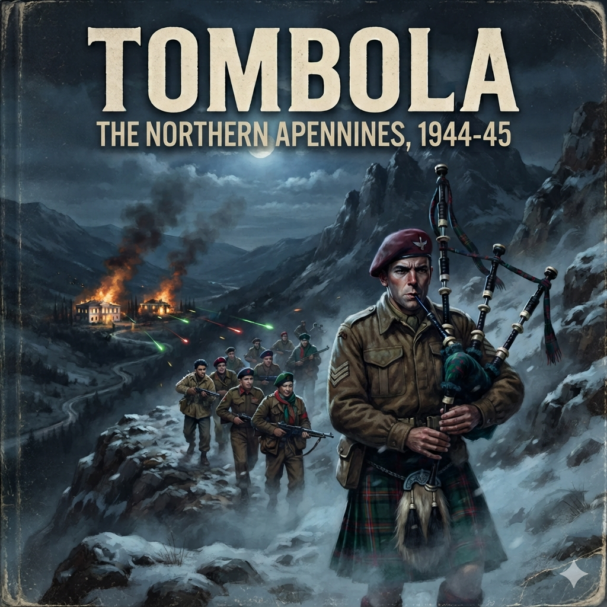

The sheepfold smelled of wet slate, dried sheep dung, and woodsmoke that had nowhere to go.
Outside, the wind sheared off the crags of Monte Cusna, driving sleet horizontally through the gaps in the drystone wall. Inside, the draft flickered the flame of a tallow candle stuck to an overturned ammunition box.
Captain Michael Lees sat on a burlap sack filled with rotting bracken, his knees drawn up toward his chest. He was twenty-two years old, thin to the bone, his British Army battledress stained dark at the elbows with pine resin and grease. A woollen scarf was wound twice around his throat to cover the carbuncles breaking out along his collar. Between his boots sat an American-made Hallicrafters receiver, its vacuum tubes casting a faint amber glow across the frost-crusted dirt floor.
A young Italian partisan named Corrado knelt beside him, holding a piece of aerial wire that ran through a hole in the roof to the branch of a stunted beech tree outside. Two other men—one a former Italian regular infantryman with a torn grey-green grigio-verde tunic, the other an eighteen-year-old mountain boy with a captured Carcano rifle slung on a hemp rope—stood in the shadow of the doorway, watching the radio dial.
The dial hummed. Then came the opening chimes of Radio London—the four rhythmic taps of Beethoven's Fifth, dot-dot-dot-dash, the Morse letter V.
Lees leaned closer to the speaker, his breath pluming grey in the freezing air. His ears were tuned for the coded operational phrases—the nonsensical personal messages meant for the Special Operations Executive missions scattered across northern Italy.
The familiar announcer's voice did not deliver a code.
Instead, an Italian-language announcer spoke with the crisp, dry precision of the Allied Mediterranean Command in Caserta:
“A tutti i patrioti italiani. Segue un messaggio speciale del Comandante Supremo delle Forze Alleate nel Mediterraneo, il Maresciallo Harold Alexander.”
Corrado's fingers tightened on the aerial lead. The two men at the door stepped forward, their wooden clogs scraping against the stone.
The announcer read Field Marshal Alexander's proclamation:
“The summer campaign is concluded. The winter campaign begins. In consequence, the Supreme Allied Commander directs that all patriots must cease large-scale military operations. You must conserve your ammunition, hide your weapons, and return to your homes. You must await new orders for the spring offensive…”
The voice droned on, outlining the logic of the Caserta staff officers: winter had closed the mountain passes, the Allied armies were bogged down in the mud of the Romagna, and supplies could not be spared. Partisans were to stand down, disperse, and wait.
A pop of static cut the signal.
The sheepfold went dead silent, save for the rattle of sleet against the roof slates.
Corrado dropped the wire. He looked at Lees, his face pale beneath weeks of accumulated soot.
“Tornare a casa?” Corrado whispered. His voice was cracked, almost mocking. “Go home?”
The boy with the Carcano spat onto the floor. “The Brigate Nere burned my father's house three weeks ago in Villa Minozzo. My cousin is hanging from a telegraph pole in Castelnovo. Where does your Field Marshal think we live?”
Lees did not answer immediately. He stared at the glowing filaments of the radio set. His hands, raw and split from the cold, were clamped tight around his knees.
He knew the geography Alexander's staff was looking at on the wall maps in Caserta. From six hundred miles away, northern Italy was just a long boot with an awkward spine of mountains. To the generals in the palace at Caserta, telling irregulars to disperse was simple staff logistics: conserve resources, reduce exposure, wait for the spring thaw.
To the men in the mountains, it was a death sentence.
In the valleys below them, General Fridolin von Senger und Etterlin's XIV Panzer Corps and the fascist militias of the Repubblica Sociale Italiana held every road, every bridge, and every municipal hall. The partisans could not simply put down their Sten guns and walk back to their farms. Every man in the mountains had his name on a prefecture list. To disperse meant being hunted down in small groups, dragged out of cellars, and stood against a cemetery wall.
“Captain,” Corrado said, his voice rising, hard and sharp. “Does the British Army think this is a football match? Half-time, and we all take a drink of tea?”
Lees reached out and clicked the Hallicrafters dial to the off position. The amber glow died.
“No,” Lees said. His Italian was clipped, learned in Cairo and refined in the hills, but steady. “The Field Marshal doesn't understand what is happening on this side of the Secchia.”
“Then what do we do?” the boy at the door demanded. “Do we bury the guns? When the Germans come up the mule tracks next week, do we show them Alexander's paper and ask them for a receipt?”
Lees stood up. His joints clicked in the cold. Standing at his full height, he towered over the Italians, his broad shoulders filling the narrow space between the drystone pillars. He looked at the three men. He knew what would happen if he followed the directive to the letter. He could dismantle the radio, pull his small SOE team back into a deep cave above the timberline, ration his bully beef, and wait out the blizzards until April.
If he did that, the resistance brigades in the Reggio Apennines—split already between the Communist Garibaldi detachments and the Catholic Fiamme Verdi—would turn on each other for food, or break under the pressure of the coming German sweeps.
“Nobody buries anything,” Lees said quietly.
Corrado squinted at him through the gloom. “That was an order from your Supreme Commander, Captain.”
“Alexander is in Caserta,” Lees said, pulling his woollen cap down over his ears. “I am here. The mission does not stand down.”
He picked up the radio aerial, handed the bare copper wire back to Corrado, and reached into his smock for a pencil and a pad of cypher sheets.
“We don't disperse,” Lees said, turning back toward the ammunition box. “We move up to Febbio before dawn. If Caserta won't drop us food because of Alexander's broadcast, we find out which storehouses the fascists are using in the valley, and we take theirs.”
The two men at the door looked at each other. The young boy slowly let the Carcano settle back against his shoulder.
Outside, the November wind howled over the bare rock of Cusna, driving the first deep drifts of the winter into the gullies below.
The smell of boiling chestnuts was the smell of the defeat Alexander had handed them.
In a blackened copper cauldron hung over a smoking hearth of green beechwood, the grey mash bubbled. It had no salt. Salt was worth more than gold across the mountain line; down on the coast at La Spezia, men traded rifles for a handful of coarse sea crystals. Here, at three thousand feet above the Secchia River, the partisans ate castagnaccio—dry chestnut flour boiled in melted snow until it had the consistency of wet plaster. It coated the tongue, clogged the intestines, and kept nobody warm.
Captain Michael Lees sat on an upturned wine cask in the corner of the low-ceilinged kitchen of a half-ruined farmhouse outside Civago. His battledress trousers were stiff with grease and dried mud at the shins. Every man in the room was scratching; body lice lived in the seams of the damp wool, multiplying in the humid heat that rose whenever the men huddled together against the freezing mountain drafts.
Across the split-log table, two men sat three feet apart, their holstered pistols resting on the bare wood between them.
On the left was Didimo Mantovani, known across the province by his nom de guerre, "Guido." He was the political commissar of the 26th Brigata Garibaldi—slender, sharp-featured, wearing a red silk neckerchief tucked into a captured German mountain jacket. On the lapel, a small metal hammer and sickle was pinned through the wool. Behind him stood three young Garibaldini with Soviet-style peaked caps and Sten guns slung barrel-down.
On the right sat Don Domenico Orlandini. The mountain people called him "Don Carlo." He was an ordained Catholic priest who had traded his parish vestments for a paratrooper smock, a beret with a small silver crucifix, and a Beretta Model 1934 strapped to his hip. He was the unquestioned commander of the Fiamme Verdi—the Catholic, monarchist, and liberal partisans who looked not to Moscow, but to the parish church and the King in Rome. Behind the priest stood two former Italian regular army sergeants with leather bandoliers, their faces carved out of the same hard limestone as the ridges above them.
Between them lay a British air-drop manifest written in purple indelible pencil on carbon paper.
“Your people stole sixty sacks of flour dropped at the Pradarena pass on Tuesday,” Guido said. His voice was flat, grating, devoid of warmth. “The drop was registered to the Garibaldi sector. Our couriers waited four hours in a whiteout. When they reached the drop zone, the parachute silk was cut and the canisters were empty.”
Don Carlo did not raise his voice. He had the calm, infuriating patience of a confessor. “My men didn't steal anything, Guido. The wind carried the supply canisters into the ravine at Ospitaletto. Ospitaletto is a Christian Democratic village. The children there haven't seen grain since October. If God chose the wind to blow British flour onto our side of the ridge, I will not starve my flock to feed your political cadres.”
“God didn't drop those canisters,” Guido snapped, leaning forward, his hand dropping flat onto the table inches from his pistol. “The Royal Air Force dropped them. And they were marked for the 26th Brigade. You have your own supplies hidden in the crypt at Minozzo. We know about the salted lard you took from the communal mill.”
One of the Garibaldini behind Guido racked the bolt of his Sten gun. The metallic clack-clack echoed off the stone walls.
Instantly, both of Don Carlo's sergeants stepped out from the shadows, their hands resting on the grips of their holstered pistols.
Lees did not flinch. He stayed sitting on the wine cask, his eyes heavy with exhaustion. He had spent three nights without sleep, moving between hideouts through five-foot snowdrifts to dodge a sweep by the fascist Brigate Nere out of Castelnovo ne' Monti. His boots were coming apart at the welt; copper wire was wrapped around the soles to keep the leather from flapping against his socks.
He reached into his pocket, took out a heavy brass lighter, and flicked the flint. The flame caught. He leaned down and lit a stump of an Avanti cigarette, drawing the harsh, bitter smoke deep into his chest before speaking.
“Put the gun on safe,” Lees said.
He spoke Italian without an accent, his tone quiet, almost bored. But there was steel in it that made the young Communist look past Guido's shoulder, straight into the eyes of the British captain.
The partisan slowly released the tension on the Sten's cocking handle.
Lees looked at Guido, then at Don Carlo.
“You two want to fight a civil war?” Lees asked. “Do it down in the valley. Do it in front of the German garrison at Reggio. The 148th Infantry Division is currently billeted at Villa Minozzo with two battalions of mountain infantry and four 75-millimeter pack guns. They are eating hot pork broth while you two squabble over a handful of frozen flour.”
“It is a question of political legitimacy, Captain,” Guido said coldly. “We represent the working class of Emilia. After the liberation, the Comitato di Liberazione Nazionale will not tolerate armed Catholic bands hoarding British weapons to suppress the revolution.”
“There will be no revolution if you are both hanging from meat hooks in the town square,” Lees interrupted, cutting him off with a slice of his hand.
He stood up, stepping between the two men. In the cramped, low-ceilinged room, his height dominated the table.
“Listen to me very carefully,” Lees said, leaning his fists on the table, right between the two pistols. “Caserta wants to shut this mission down. You heard Alexander's broadcast in November. The staff generals think you are useless mountain brigands who will eat our food and run the moment a German half-track shows up on the road. The only reason the RAF is still risking Dakotas through the clouds to drop weapons onto Cusna is because my wireless operator is sending encrypted reports saying you are holding this front.”
He tapped the purple carbon manifest with a dirty fingernail.
“If one more shot is fired between a Garibaldino and a Fiamme Verdi over a drop canister, I will send one sentence to Special Force 1 in Siena: Mission Envelope terminated; suspend all air drops.”
The room went completely silent. The fire hissed as sap boiled out of the green wood.
Guido's jaw clenched. Don Carlo looked down at the table, his fingers tracing the silver crucifix on his chest. Both men knew the brutal mathematics of the mountain. Without British air drops—without the .303 ammunition, the plastic explosive, the field dressings, and the gold sovereigns Lees held in his safe-belt—neither faction could survive another month against the fascist counter-sweeps.
“What is the division of the flour?” Don Carlo asked softly.
“Fifty-fifty,” Lees replied without hesitation. “The Garibaldi take thirty sacks. The Fiamme Verdi take thirty sacks. The parachute silk is divided equally to make bandages and snow smocks for the forward patrols. And from tomorrow, the drop zones are integrated. Four men from Guido, four men from Don Carlo. If a single tin of bully beef goes missing, both brigades lose their drop allocation for two weeks.”
Guido glared at the priest, then at Lees. “We will take our thirty sacks tonight. Before the frost hardens the drifts.”
He stood up, snatched his pistol from the table, shoved it into his holster, and turned for the door without another word. His three bodyguards filed out behind him, their heavy mountain boots thudding down the stone corridor into the freezing night.
Don Carlo remained seated. He picked up his Beretta, clicked the magazine to check the spring, and slid it back into its leather case.
“You cannot hold water in a broken jug forever, Captain,” the priest said quietly, looking up at Lees. “When the Germans break, the Communists will try to take Bologna and Reggio by force. They dream of Tito. They dream of Stalin.”
“When the Germans break, Father, the British Army will be across the Po,” Lees said, sitting back down on the cask, rubbing his temples where a dull, persistent migraine beat behind his eyes. “Until then, I don't care about Tito. I care about the road between Modena and Lucca.”
“The men are losing heart, Michael,” Don Carlo said, his tone softening to that of a concerned friend. “Alexander told them they were forgotten. The snow is eight feet deep on the passes. We ambush a German truck, we kill two corporals, and the next morning the SS burn a village. The peasants are beginning to close their doors to us. They ask: What is the purpose?”
Lees looked toward the small, unglazed window of the kitchen, covered only by a scrap of greasy parchment to keep out the draft. Beyond it, through the dark, the black mass of the Apennine ridge blocked the sky like a prison wall.
“The purpose,” Lees said, his voice dropping low, “is that we are going to give them a real target. Something big enough that Caserta can't ignore us, and the Germans won't dare touch the villages.”
“There are no such targets in these rocks,” the priest said.
“Not in the rocks,” Lees replied, staring into the dark. “Down in the valley.”
The war in Florence smelled of beeswax, wet gabardine, and Virginia tobacco.
In the high-ceilinged saloons of the requisitioned Renaissance palazzo, crystal chandeliers hung suspended above sprawling plywood trestle tables. Massive wall maps of the Italian peninsula were pinned to tapestries depicting Roman triumphs. Red, blue, and black chinagraph pencils traced the static, stubborn line of the Apennines—the Gothic Line—where fifteen Allied divisions had bled themselves dry against German concrete and granite all through the autumn rains.
Major Roy Farran stood before the map of the Reggio Emilia sector, a silver-cased cigarette lighter clicking rhythmously between his knuckles.
At twenty-four, Farran had already survived tank charges in the Western Desert with the 3rd King's Own Hussars, an evacuation under dive-bombers in Crete, a wounded capture and subsequent escape from an Italian prisoner-of-war hospital, and brutal behind-the-lines skirmishes in the forests of central France. He was wiry, sharp-featured, with dark, slicked-back hair and pale, restless eyes that rarely blinked. He wore the sand-colored beret of the 2nd Special Air Service Regiment, cocked sharply over his right ear, and a tailored battle-dress tunic bearing the blue and white ribbon of the Military Cross with two silver bars.
Beside him, two staff officers from General Mark Clark's 15th Army Group headquarters—a British brigadier in immaculately creased staff serge with red lapel tabs, and an American G-3 colonel chewing an unlit cigar—stared at the grease-pencil markings Farran had scrawled across the high peaks above the Secchia River.
“It's a natural fortress,” Farran said, his voice clipped, carrying the effortless confidence of a cavalry officer who regarded staff officers as an annoying administrative obstacle. “Operation Galia proved it two months ago. Captain Walker-Brown took forty men of my squadron into the Serchio Valley, tied down an entire German division, killed over a hundred enemy, and brought back three hundred downed Allied airmen. We broke their flank during the winter offensive.”
He stepped forward, tapping the map north of the crests, down where the contour lines flattened into the grey wash of the Po Valley.
“Galia was just a pinprick,” Farran continued. “Right here, in the hills south of Reggio Emilia, the resistance is alive, but starving. SOE has an officer in place—Captain Michael Lees. He's holding the mountain passes with a coalition of Italians and escaped Russian POWs. If I drop Three Squadron in on top of them, we can assemble an irregular force of three to four hundred combatants. When the spring offensive opens, we don't just watch the roads. We sever them. We hit their corps command posts in the foothills. We turn their rear into an absolute slaughterhouse.”
The American colonel leaned in, squinting at the map through a cloud of match smoke. “You're talking about dropping regular SAS troopers fifty miles behind the main line of resistance, Major. No armor. No divisional artillery. If Kesselring realizes what you've got down there, he'll detach a motorized regiment and box you against the cliffs.”
“The Germans don't have a motorized regiment to spare, Colonel,” Farran countered smoothly. “Every panzergrenadier they have is dug into the Gothic Line facing the US Fifth and British Eighth Armies. Behind their front line, it's all supply clerks, signalers, and second-rate coastal battalions. It's an eggshell. Crack the crust, and there's nothing inside.”
The British brigadier, whose name was seated comfortably behind a thick brass desk plate, did not look at the map. He was turning the pages of a manila dossier stamped with red ink: TOP SECRET – BIGOT / OPERATION GRAPESHOT.
“The tactical concept is approved in principle, Farran,” the brigadier said, his voice flat, devoid of the cavalryman's enthusiasm. “Special Operations Executive and 2 SAS will execute the operation. Code name: Tombola.”
Farran smiled, pocketing his lighter. “I'll have my first stick of paratroopers over Monte Cusna on the next moon period. I will jump with the forward reconnaissance element myself to link up with Lees.”
The brigadier closed the dossier with a dry, sharp slap. He looked up, his pale eyes fixing Farran through gold-rimmed spectacles.
“You will do nothing of the sort, Major.”
The room went still, save for the muffled clatter of teleprinters in the adjacent corridor.
Farran's smile vanished. “I beg your pardon, sir?”
“You are not jumping,” the brigadier said.
“I command Three Squadron, 2 SAS,” Farran said, his voice dropping half an octave, cold and defensive. “It is my operational plan. I do not send troopers where I don't lead them.”
“This isn't the Western Desert, Farran, and you are not riding a Stuart tank across the sand,” the brigadier replied, tapping the thick manila folder on his desk. “You have spent the last three weeks inside this headquarters. You have sat in the planning conferences for Operation Grapeshot. You know the launch date for the spring offensive. You know the exact points of breakthrough for the British Eighth Army on the Senio, and the US Fifth Army south of Bologna. You know the division strengths, the air-support matrices, and the amphibious landings planned for Lake Comacchio.”
The brigadier stood up, leaning over the mahogany desk until he was inches from the young major.
“If you jump behind the Gothic Line and break an ankle on a granite crag, or if a fascist patrol bags you in a farmhouse, you will be in the hands of the Gestapo within twelve hours. You know how the Germans extract information. If they break you, the entire Allied spring campaign in Italy is blown before the first barrage fires.”
Farran's jaw muscles bunched. “I am quite aware of my duties regarding operational security, sir. I've been captured by the enemy before. I survived.”
“You were captured by regular Italians in forty-one, when the war still possessed a shred of civility,” the brigadier retorted coldly. “If the SS take an SAS officer behind the Gothic Line today, Hitler's Commando Order applies. They don't send you to a POW camp, Farran. They take you down to the cellar on Via Tasso in Rome or the Piazza San Sepolcro in Milan. They strip off your fingernails, they break your teeth with cold chisels, and then they hang you by piano wire. We cannot afford you breaking. We will not take the risk.”
Farran stood rigid, his chest heaving slightly beneath his ribbons. “Major-General Brian Franks gave me this command to fight, not to sit in Florence pushing paper.”
“Brian Franks answers to Army Group, Major,” the brigadier said with absolute finality. He drew a pristine fountain pen from his breast pocket, unscrewed the cap, and drew a crisp sheet of 15th Army Group letterhead toward him.
He wrote three sentences in sweeping cursive, blotted the wet black ink with a rocker, and spun the paper across the desk so it faced Farran.
To: Major Roy Farran, 2 SAS.
Subject: Operational Restriction – Operation Tombola.
Under no circumstances are you authorized to parachute into enemy-occupied territory or cross the Gothic Line into the northern Apennines. You will direct Operation Tombola from the advanced base at Lucca or Cesenatico. Breach of this directive will be treated as direct disobedience of a lawful command in the face of the enemy.
The brigadier set the pen down.
“You will select a capable subaltern—Lieutenant Riccomini or whoever you prefer—to command the drop,” the brigadier said, looking back into Farran's eyes. “You will remain south of the Arno. Do I make myself entirely understood, Major?”
Farran stared down at the paper. The black ink looked wet and ugly under the ballroom chandeliers.
He didn't touch the paper. He slowly brought his hand up to the brim of his sand-colored beret, executing a perfect, stiff regimental salute.
“Crystal clear, sir,” Farran said.
He turned on his polished boot-heels and walked out of the salon, his heels striking the marble floor with the rhythmic, measured cadence of a soldier who had already decided what he was going to do.
The twin Pratt & Whitney radial engines of the Royal Air Force Dakota roared at idle, shaking the mist that clung to the pierced-steel PSP planking of the runway.
Blue exhaust flames licked back from the engine cowlings into the damp Tuscan night. Around the transport plane, the air was heavy with the smell of 100-octane aviation fuel, wet canvas, and sulfur smoke from the ground-crew exhaust carts.
Major Roy Farran walked up the aluminum loading ladder into the green-lit belly of the fuselage. He was wearing an oversized, oil-stained Denison airborne smock that fell down past his thighs like a smock-frock, its lower hem billowing loosely around his trousers.
Inside the stripped cargo cabin, six men of 3 Squadron, 2 SAS, sat strapped to the port-side canvas bench seats. Their faces were blackened with greasy burnt cork. Between their knees rested heavy drop-bags filled with Bren guns, magazines, Gammon grenades, and spare battery cells for Lees's wireless. They sat in stony, disciplined silence, their helmets bumping against the ribbed aluminum ribs of the aircraft as the fuselage vibrated with the revving engines.
At the cargo door stood the RAF jump dispatcher, a burly flight sergeant wearing a sheepskin flight jacket and heavy leather mittens.
The sergeant blinked through the exhaust haze as Farran climbed inside. He recognized the major's lean face, the sharp nose, the dark hair plastered flat under a woollen commando cap.
“Major Farran, sir?” The dispatcher had to shout over the low thrum of the engines. “Base operations said you were just here to supervise the manifest loading.”
“Change of orders, Sergeant,” Farran shouted back smoothly, flashing a brief, cold grin. “I'm flying along to act as jumpmaster. The drop zone is a blind notch on the side of Monte Cusna. It's tight ground, surrounded by granite crags. Your boys haven't dropped into that valley before. I'm making sure these lads don't get hung up in the trees at four thousand feet.”
The flight sergeant looked down at Farran's bulky Denison smock. The heavy fabric bulged abnormally across the small of the major's back and around his ribs, but the zipper was pulled right to the throat, masking the tell-tale green webbing harnesses beneath.
“You're not hooked, sir?” the sergeant asked, gesturing to the bare metal cable running along the ceiling.
“I'm running the door, Sergeant,” Farran said, tapping the steel dispatch handle bolted to the bulkhead. “Just keep the supply canisters clear of the fuselage when the green light shows. I'll make sure the stick goes out on time.”
The sergeant hesitated, then shrugged into his sheepskin collar. He had seen SAS officers do stranger things. He turned, pulled the heavy cargo door shut, and slammed the steel locking dog home.
Two minutes later, the Dakota surged forward. The steel planking rattled violently beneath the tires, the noise crescendoing into a deafening roar as the pilot gave the engines full throttle. The tail lifted. The shuddering stopped as the tires left the runway, banking north-northwest into the solid, freezing overcast above the Tyrrhenian coast.
Inside the unheated cabin, the temperature plummeted past freezing. Frost crept across the interior rivets like pale lichen. The six paratroopers sat motionless, their breath hanging in white clouds inside the red glow of the cabin battle-lamps. Every few minutes, the Dakota lurched violently, dropping fifty feet in the updrafts coming off the invisible ridges below.
Farran stood by the port jump door, steadying himself with one hand on the overhead static line.
Through the small circular portal, there was nothing to see but black soup. They had crossed the front lines twenty minutes ago. Below them, somewhere in the gloom, were the barbed wire belts, minefields, and 88-millimeter flak batteries of the Gothic Line.
A sharp buzzer sounded through the cabin. A small incandescent bulb above the door switched from red to amber.
Ten minutes to drop.
The paratroopers rose in unison. With stiff, frost-dulled fingers, they checked the snap-hooks of their static lines, snapping the heavy bronze clips onto the overhead steel cable with a succession of sharp metallic clicks.
Clack. Clack. Clack.
Farran didn't touch a hook. He moved down the line, slapping shoulders, checking the ripcord pins of the parachutes strapped to their backs, checking the release boxes on their chests.
He leaned close to Lieutenant James Riccomini, a calm, razor-sharp officer who was officially listed on 15th Army Group's paperwork as the commander of the mission.
“Keep them together on the snow, Jimmy,” Farran shouted in his ear. “If the drop scatters, rally on the red torch. Don't light matches. The Germans have an outpost on the pass at Pradarena.”
Riccomini looked at him through his blackened face, his eyes narrowing in the red light. He noticed the bulk under Farran's Denison smock, and the slight bulge of a pack tray beneath the tail of the canvas coat. Riccomini smiled faintly, shaking his head. He didn't say a word.
The buzzer sounded a second time. A long, piercing whine.
The flight sergeant grabbed the cargo door handle, threw his weight against it, and hauled the door inward and aft.
A freezing gale tore through the cabin. Sleet and ice crystals blasted across the floorboards like buckshot. The roar of the slipstream was deafening, drowning out the engine drone in a continuous, furious scream.
Below, the cloud layer tore open for a brief, terrifying second. Farran looked down into the black abyss. Through the rift, the snow-covered shoulder of Monte Cusna gleamed like a white bone in the faint light of an obscured moon. Three tiny, pulsing points of light formed a lopsided red triangle on a frozen plateau—Lees's partisan reception party, holding flashlights shielded with red cloth filters.
The amber light flashed. Then went solid green.
“Go!” Farran barked, slapping Riccomini's shoulder.
Riccomini stepped into the howling void and vanished.
Number two. Go!
Number three. Go!
Number four. Go!
The static lines whipped back into the cabin, snapping viciously against the door frame as each man dropped away. The flight sergeant was on his knees, manhandling a heavy metal supply container toward the edge, shoving it with his boots into the slipstream.
The container tumbled out.
The last paratrooper went through the door.
The dispatcher pulled himself up, wiping freezing spray from his goggles, reaching for the door strap to haul the hatch shut.
He stopped dead.
Farran was standing in the open doorway, his face illuminated by the green light. The zipper of his oversized Denison smock was ripped down to his waist. Beneath it, snug against his chest and hips, was a standard British X-Type parachute harness, fully buckled.
In his right hand, Farran held the bronze snap-hook of his own static line.
The flight sergeant's eyes went wide. “Major! What on earth are you doing? You're not on the drop sheet!”
Farran looked back at the sergeant over his shoulder. The wind whipped his dark hair across his forehead. He grinned—a reckless, feral flash of white teeth in the dark.
“If anyone in Florence asks, Sergeant,” Farran shouted through the roar of the gale, “tell them I slipped on a patch of ice and fell out!”
Farran slammed his snap-hook onto the overhead cable, didn't wait for the safety pin, turned his back to the sky, and threw himself outward into the freezing black air.
The jolt was violent, snapping Farran's chin against his chest as the 28-foot khaki silk canopy tore open into the slipstream.
The roar of the Dakota's twin radials vanished in seconds, swallowed by the mountain wind. Then came the absolute, suffocating quiet of the high Apennines.
Below him, the world was a jagged monochrome of grey shale and brilliant white snowfields. The red flashes from the partisans' torchlights had vanished, shielded behind a ridgeline. Farran hung in the harness, twisting frantically on his risers to spot the ground coming up in the dark.
A ridge of stunted, skeletal beech trees flashed past his boots. Ten seconds later, the mountain struck him.
He hit a drift three feet deep, buried to his chest in powdery snow that exploded around his face like cold flour. His parachute collapsed forward over a bramble thicket, whipping in the wind before the silk went limp against the crust.
Farran lay still for ten seconds, testing his limbs. No broken ankles. No torn ligaments. He drew a deep lungful of freezing, pine-scented air and laughed softly into the snow.
He was out of Florence. He was across the Gothic Line.
He reached down, struck the quick-release box on his chest, and rolled clear of the webbing. Before he could draw his Colt .45 automatic, the dry metallic clack of a rifle bolt sounded from behind a boulder twenty yards uphill.
“Chi va là?” a voice hissed through the dark. Mountain Italian, coarse and trembling with adrenaline.
Farran slowly raised his hands, keeping his fingers splayed. “Inglese. Paracadutista.”
A figure stepped from behind the rock, wrapped in a blanket worn like a poncho, a long Carcano rifle aimed at Farran's throat. A second man circled to his left, holding an unshielded flashlight with a thumb over the lens, allowing only a thin sliver of yellow light to play across Farran's sand-colored beret and the winged dagger badge pinned to the wool.
The second man lowered the light. “Capitano Lees,” he muttered to his companion. “È uno dei loro.”
The safehouse was a two-room stone croft on the eastern edge of Febbio, built half-sunk into the mountainside to hide from German artillery observers across the valley.
Inside, Michael Lees sat at a rough-hewn table, scraping the wax off a tallow candle with a thumbknife.
When the oak door opened, bringing a blast of freezing mountain fog, Lees looked up. He did not rise. He looked like an apparition of the winter itself: his face gaunt, his skin darkened by months of charcoal smoke, his beard thick and unkempt. His British Army battledress was frayed at the cuffs and patched at both knees with rough green wool taken from a dead fascist militia coat.
Lieutenant Riccomini stepped through the door first, shaking snow from his smock.
Right behind him walked Farran.
Lees stared. He knew every SAS officer on the operational rosters south of the lines. He knew who was supposed to be commanding Three Squadron's drop.
“Riccomini,” Lees said slowly, his voice hoarse. “You brought the wrong major.”
Farran stepped into the room, untying the wet woollen scarf from around his chin. He took off his beret, shook the ice crystals onto the hearth, and ran a hand through his dark hair. Despite the four-mile hike through waist-deep drifts from the drop zone, Farran looked entirely unbothered, as if he had just strolled out of the bar at the Grand Hotel in Florence.
“Good morning, Michael,” Farran said, extending a gloved hand. “I believe you were expecting some ammunition.”
Lees stood up slowly. He looked past Farran into the dark outside, then back at the major.
“You jumped,” Lees said flatly. “Clark's headquarters gave a direct order to Siena two days ago. I got the cypher on the Hallicrafters. You were barred from crossing the line.”
“A slight administrative misunderstanding,” Farran replied, pulling an enameled tin mug from his kit and nudging it toward a pot of steaming black liquid on the hearth. “I was dispatching Jimmy's stick. The air was extremely turbulent over Cusna. A container shifted, I lost my footing, and out I went. By the time I regained my balance, my parachute had deployed. A terrible accident.”
Riccomini let out a dry cough, turning away to inspect the mantlepiece.
Lees looked at Farran for a long five seconds. Then, for the first time in three months, the corners of Lees's cracked lips twitched into a genuine smile.
“An accident,” Lees repeated.
“Tragic, really,” Farran said, pouring himself a measure of the foul chicory brew. He took a sip, winced, and looked around the smoky room. “Now that I'm here, the military police can hardly come up the mule tracks to serve a warrant. But we have a minor paperwork issue to settle.”
“The wireless,” Lees said instantly.
“Precisely,” Farran nodded. “Army Group will be monitoring every signal your operator sends to Special Force 1. If my name appears on a single decrypt, the brigadiers in Caserta will have an apoplexy. They will suspend the supply drops, ground the Dakotas, and demand my return in irons via the Garfagnana passes.”
Farran reached into his pocket and drew out an unsharpened pencil.
“From this moment, Major Roy Farran does not exist in northern Italy. If Florence asks who is running the tactical operations of Three Squadron, your operator transmits that the unit is under the command of a regular officer dropped by high command.”
“What name?” Lees asked.
Farran smiled—that same reckless, theatrical grin he had shown the RAF flight sergeant at the door of the Dakota.
“Major Patrick McGinty,” Farran said.
Lees blinked. “McGinty? As in Paddy McGinty's goat?”
“The very same,” Farran said smoothly. “It has a certain ring to it, don't you think? An obscure Irish officer with no past and a magnificent disregard for staff memorandums. If the Germans intercept our traffic, they can spend their mornings searching the British Army List for a ghost.”
Lees nodded slowly. The absurdity of it matched the absurdity of the war in the mountains. He pulled the map of the Reggio province from the drawer and spread it flat across the table, weighting down the curled edges with two empty .303 cartridge cases.
“All right, Major McGinty,” Lees said, his voice turning entirely professional. “Let's discuss what you've brought me.”
Farran leaned over the map, his face hardening as he studied the red grease-pencil lines. “I've got forty SAS troopers dropping in over the next three nights, provided the weather holds. Spaniards, Frenchmen, regular British airborne. Heavy weapons, mortars, Gammon bombs, and enough Sten magazines to outfit three hundred men.”
“The Italians are ready to fight,” Lees said, “but they are politically fractured. I have Communists under Guido who want to fly the red flag over Modena, and Catholics under Don Carlo who don't trust Guido as far as they can throw him. Then there are the Russians.”
Farran's eyebrows went up. “The Russians?”
“Escaped Soviet Red Army prisoners of war,” Lees said, pointing to a cluster of contour lines three miles north of the village. “About seventy of them, led by an escaped Red Army captain named Viktor Pirogov. They've been living in the caves like wolves since forty-three. They don't give a fig about Italian politics, and they fight like wild beasts.”
Farran's eyes narrowed, sweeping across the map from the high peaks down into the low green foothills of the Po Valley, where the secondary roads converged on the town of Albinea.
“Spaniards, Russians, Italians, and British commandos,” Farran murmured, his finger tapping the paper. “A private allied army.”
“A pirate army,” Lees corrected quietly. “And if you get them killed for nothing, Farran, the partisans will never forgive the British Army.”
Farran looked up from the map, his gaze locking onto Lees's sunken, hollow eyes.
“I didn't throw myself out of an aeroplane at four thousand feet to fight for nothing, Michael,” Farran said. “We are going to find where the Germans sleep, and we are going to burn it to the ground.”
The low, heavy drone of four Bristol Pegasus engines vibrated through the limestone soles of the mountain before the aircraft was even visible.
Michael Lees stood with his gloved hands clamped inside his greatcoat pockets, leaning hard against a gale that felt like powdered glass. Beside him, crouching in a snow trench dug five feet into a drift, two Italian partisans tended three small fires arranged in an inverted "L." They fed the flames with dry pine shavings soaked in kerosene, shielding the embers with flat slabs of slate until the sound of the RAF Halifax swelled into a deafening roar.
“Adesso!” Lees shouted.
The Italians shoved the slate slabs aside. The flames flared yellow and orange, whipped sideways by the wind.
High above, a massive black silhouette sheared through the ragged underbelly of the clouds. From the Halifax's belly hatch fell a cluster of dark specks, followed instantly by the violent blossoms of fifteen-foot supply parachutes—white for small-arms ammunition, red for explosives, yellow for rations and medical kit.
Then came the men.
Nine parachutes billowed into the dark, swaying violently as the updrafts roaring up the sheer northern face of Monte Cusna caught the silk.
One canopy drifted wide, slammed against the frozen scree of a gully, and dragged its man forty yards through jagged shale before the silk collapsed.
Lees and three partisans plunged through the waist-deep drifts, their boots breaking through the icy crust with hollow, brittle snaps.
The downed paratrooper was already on his feet by the time they reached the lip of the gully. He had punched the harness release, kicked his boots free of the suspension lines, and had a captured German Walther P38 drawn and leveled at Lees's chest before his parachute had even finished deflating in the wind.
He wore the standard British airborne Denison smock, but beneath his maroon beret his skin was dark, leathery, and weathered by a sun that did not belong to the British Isles.
“¿Amigo o enemigo?” the paratrooper growled. His voice was raspy, laden with the hard, gravelly consonants of the Basque Country.
“Friends,” Lees said in Spanish, raising a hand. “British Mission. Lees.”
The man lowered the automatic, decocked the hammer against his thumb with practiced ease, and shoved it back into the holster sewn onto his chest webbing. He spat into the snow—a dark, bloody glob from a split lip taken on impact—and extended a gloved hand.
“Sergeant Justo Balerdi,” he said in heavily accented English. “Special Air Service. In the British Army List, they call me ‘Robert Bruce.' A very Scottish name for a man from San Sebastián, no?”
Balerdi gave a dry, mocking laugh that ended in a cough. He was in his late thirties, significantly older than the British troopers, with scars running along his jawline from shrapnel taken on the Jarama front eight years earlier.
Behind him, two more men scrambled out of the drifts. One was Rafael Ramos, another Spanish veteran of the Republican Army who had escaped Franco's concentration camps, survived the French Foreign Legion, and found his way into 2 SAS. Beside Ramos stood Frank Williams, whose real Spanish name had long been buried under British War Office paperwork.
These were men who had been fighting fascists since 1936. They did not fight for King George or the British Empire; they fought because every German soldier dead on an Italian mountain brought them one inch closer to marching back over the Pyrenees to hang Francisco Franco.
Farran walked up the gully, his hands tucked casually in his pockets, his Denison collar turned up against the sleet.
“Balerdi,” Farran said, his voice cutting cleanly through the wind. “You're late. The Halifax took two passes.”
Balerdi looked at his squadron commander and gave a loose, informal flick of his fingers against his beret—the casual salute common to irregulars who had seen too much blood to care about parade-ground drill.
“The RAF pilot was looking for Florence, Major,” Balerdi said. “I told him if he didn't drop us on this pass, I would shoot his navigator. So here we are.”
“Did the containers land on the plateau?” Farran asked.
“Half of them,” Ramos broke in, pointing a thick finger toward the jagged rim of a limestone drop-off two hundred yards south. “Three canisters went over the lip into the ravine. Heavy weapons. If we don't pull them out before daylight, the German spotters on the Montefiorino ridge will see the silk.”
For the next four hours, until the grey light of dawn bled through the fog, the mountain became a factory of brutal, silent labor.
Fifty men—British commandos, Spanish republicans, and Italian teenagers who had never seen a modern weapon—dragged metal CLE supply containers through the drifts. The containers, each six feet long and weighing nearly three hundred pounds, were packed in grease and cosmoline.
In a sheltered hollow below the ridgeline, protected from the wind by an overhanging shelf of rock, Balerdi used a crowbar to pry the lids off the steel tubes.
The contents spilled onto canvas tarpaulins spread across the snow:
A crowd of barefoot or rag-shod young Italian partisans gathered around the boot crates, their eyes wide. Some of them had spent three months with their feet wrapped in burlap sacks and telephone wire.
Balerdi grabbed a pair of size nine boots and shoved them into the chest of a shivering Italian boy no older than seventeen.
“Put them on, chico,” Balerdi muttered in a mix of Spanish and broken Italian. “You cannot kill Germans if your toes are falling off in your socks.”
The boy took the boots with trembling hands, staring at the thick rubber soles as if they were made of gold.
A second stick of five paratroopers landed just as the sun broke through the grey cloudbank. Among them were regular Italian paratroopers from Squadrone F—men who had remained loyal to the Allied cause after the 1943 armistice, trained in commando tactics by British instructors in southern Italy, sent north to act as radio operators and scouts.
Farran stood on a flat boulder overlooking the assembly area.
Around him, the empty white expanse of the Cusna plateau had transformed into an armed camp. Men were stripping weapons of transit grease, snapping magazines into Bren receivers with sharp, satisfying clacks, and distributing ammunition bandoliers.
Lees walked up beside Farran, holding an unrolled manifest.
“That makes forty-two SAS on the ground,” Lees said, his voice tight with fatigue. “Plus my Italian guides. We have the weapons, Roy. We have the ammunition.”
Farran looked north, toward the low, hidden valley of the Secchia, where a wall of grey pine forests tumbled down toward the plains.
“The weapons are nothing without mass, Michael,” Farran said quietly. “Forty SAS troopers can raid a railway depot or shoot up a convoy. They cannot storm a fortified corps headquarters protected by three perimeter belts of machine-gun nests.”
“Then we need Pirogov,” Lees said.
Farran turned to him, his eyes sharp. “Take me to these Russians.”
The Russian camp did not look like an Italian partisan billet. It looked like an outpost on the Voronezh front.
The shelter was built inside a limestone fissure half-choked by dwarf pines, completely invisible from fifty feet away. Smoke from a small, low-heat fire was filtered through a chimney of dry shale to dissipate the blue haze before it reached the canopy. There were no songs, no political harangues, no clatter of cooking tins.
As Lees and Farran stepped off the goat path into the mouth of the ravine, the silence was broken only by the metallic snick of a bolt sliding home.
From behind an ice-rimmed boulder stepped a soldier holding a Soviet PPSh-41 submachine gun, its distinctive drum magazine wrapped in dirty white parachute silk for camouflage. The man was broad-shouldered, hollow-cheeked, with Asiatic cheekbones and frostbite scars blackening his ears. He wore a patched Wehrmacht tunic stripped of all insignia, paired with Soviet felt boots (valenki) tied with copper wire.
He didn't challenge them in Italian or English.
“Stoy,” he said. One word. A stone wall.
Lees raised both open hands, stepping forward. “Kapitan Lees. Angliskiy. We are here to see Captain Pirogov.”
The guard studied Lees's bearded face, recognized the British officer, and lowered the barrel an inch. He nodded once toward the cave entrance and stepped back into the shadows of the rocks as if he were part of the limestone itself.
Inside the cavern, the air was warm, thick with the stench of boiling horsehide, unwashed wool, and cheap home-grown tobacco.
Around the hearth sat twenty men, their bodies lean as whippets. Every one of them was an escaped Soviet Red Army prisoner of war—men captured in the meatgrinders of Sevastopol, Kharkov, and the Kerch Peninsula, shipped across Europe in cattle cars to labor on the Gothic Line fortifications, who had strangled their guards in the night and fled into the mountain snow.
At a plank table illuminated by an oil wick made from an empty shell casing sat two men.
The older man, seated on a wooden pack frame, had the broad, flat face of a Don Cossack, with cold grey eyes and a clean-shaven jaw scraped raw by a dull razor. This was Captain Viktor Pirogov, known to the Italian resistance simply as "Modena." Across his ragged civilian coat, pinned squarely over his left breast, was the one possession he had preserved through German transit camps and mountain blizzards: a silver and red-enamel Order of the Red Star.
Beside him sat Anatolij Tarasov, a younger, intense man who served as the detachment's political commissar—the ideological anchor holding seventy escaped Red Army men together in an alien land four thousand miles from their homes.
Pirogov looked up as Farran entered. He took in the sand-colored SAS beret, the clean British service ribbons, and the leather-and-canvas jump smock.
“Major,” Pirogov said in halting, guttural German—the only common language between them. “The British have arrived at last.”
Farran stepped to the table. He took off his leather gloves and dropped a heavy tin of fifty Player's Navy Cut cigarettes and a ceramic bottle of Scotch whisky squarely onto the wood.
Pirogov's eyes flickered to the whisky, then back to Farran's face. A thin, grim smile touched the corner of the Russian's mouth. He reached out with a scarred hand, picked up the ceramic bottle, pulled the cork with his teeth, and took a long, burning swallow. He passed it directly to Tarasov, who did the same without blinking.
“I am Major McGinty,” Farran said in slow, precise German. “I command the Special Air Service squadron dropped into these mountains.”
Pirogov set the bottle down with a soft thump. “I know who you are, Major. And I know what the Italians say. They say the British want us to hide in the snow and wait for your tanks to win the war in May.”
“The Italians were listening to radio broadcasts from Caserta,” Farran said, his voice flat and hard. “I am not from Caserta. I am from Three Squadron. I didn't come to hide in the snow, and I didn't drop seventy containers of weapons on Cusna to let them rust in the mud.”
Tarasov leaned forward, his dark eyes suspicious. “My men are Red Army soldiers,” the commissar said in Russian-accented Italian. “We are not Italian banditi. We take orders from the Soviet Union. We fight as a regular military unit, or we fight alone.”
“You won't fight alone, Commissar,” Farran replied instantly, stepping closer to the table. “You will fight as the heavy shock company of the Battaglione Alleato—the Allied Battalion.”
Farran gestured back toward the entrance of the cave, where Balerdi and two SAS troopers had dropped two heavy wooden supply crates into the dirt floor.
With the edge of a trench knife, Balerdi wrenched the pine lid off the first crate.
Inside were brand-new British Army khaki battledress tunics, trousers, and dark woollen commando caps, fresh from factory depots in England. In the second crate lay eight Bren light machine guns in grease-paper wrapping, along with dozens of curved thirty-round magazines.
The Russian soldiers around the fire stopped what they were doing. They stood up slowly, staring into the crates.
“You wear German rags and civilian jackets,” Farran told Pirogov, pointing at the Russian captain's chest. “If Kesselring's troops catch you in those, they shoot you as frank-tireurs—partisans, bandits. They hang you from the nearest telegraph pole with a placard around your neck.”
Pirogov snorted in contempt. “The Germans will hang us anyway, Major. When you have survived Stalag 367, you do not fear a German rope.”
“I'm not talking about fear, Captain,” Farran said sharply. “I'm talking about command and control. I need an assault company that hits like a regular infantry battalion. I am putting your men into British uniforms. British insignia. You will carry Bren guns and British ammunition. Under the Geneva Convention, you are regular combatants of the Allied Mediterranean Command.”
Pirogov rose from the table. Standing, he was nearly as tall as Farran, broad-shouldered and solid as an anvil. He walked over to the open crate, reached down, and lifted a khaki battledress tunic.
He ran his calloused thumb over the thick wool. Then he looked at Farran.
“We wear your wool, Major,” Pirogov said quietly in German. “We carry your guns. But my men do not fight for King George.”
He reached into his pocket and produced a handful of small, stamped tin pins: five-pointed Soviet Red Stars with the hammer and sickle embossed in the center.
“Every man wears this on his beret,” Pirogov said, holding the star inches from Farran's eyes. “Beside your winged dagger, or above it. We fight as the Soviet Company of your battalion. We take our tactical orders from you, but my men answer only to me and Tarasov.”
Farran didn't blink. He reached out and tapped the red enamel star in Pirogov's palm.
“Pin it wherever you want, Captain,” Farran said. “As long as every Russian bullet goes into a German skull.”
Pirogov stared into Farran's face for three long, silent seconds, measuring the British officer. Then, a booming, guttural laugh erupted from the Russian's chest.
He shoved his right hand forward, grasping Farran's forearm in a crushing grip.
“Agreed, Major McGinty,” Pirogov said. He turned to the cavern, barking a string of rapid, machine-gun Russian commands.
Instantly, the cavern came alive. The Soviet soldiers swarmed the crates, ripping away the grease-paper from the Bren guns, tearing off their filthy civilian rags, and pulling the stiff, brand-new British khaki tunics over their scarred shoulders.
Tarasov took his red star and pressed the copper prongs through the wool of a British airborne cap, bending them flat with his thumb.
Michael Lees walked up beside Farran, watching the transformation.
“You've just armed seventy Bolsheviks with heavy automatic weapons behind the front line of an Allied theater, Roy,” Lees whispered, his voice dry. “If the War Office finds out, they'll court-martial you twice.”
Farran picked up the bottle of Scotch from the table and took a sip.
“Let them,” Farran said, his eyes watching Pirogov field-strip a Bren with mechanical perfection in less than forty seconds. “Now we have a strike force. Tomorrow, we pick the throat we're going to cut.”
The prisoner smelled of lye soap, damp horse blanket, and the sour sweat of sheer terror.
He sat on a three-legged milking stool in the vaulted stone cellar beneath a bombed-out olive press in Minozzo. His hands were tied behind the rungs of the stool with telephone wire. Above him, a single kerosene storm lantern hung from a ceiling hook, swinging slightly in the damp draft and throwing sharp, shifting shadows across the whitewashed masonry.
He was twenty-four years old, wearing the collarless wool tunic of a Wehrmacht Gefreiter—a lance corporal. The green Litzenspiegel tabs on his collar were frayed, and the left shoulder bore the embroidered edelweiss patch of the German mountain troops.
His name was Hans Schmidt. He was an Alsatian conscript who had walked away from his transport unit three nights earlier, crawling through an irrigation ditch outside Scandiano until an Italian reconnaissance patrol caught him in a thicket.
Standing over him was Glauco Monducci, known in the hills as "Gordon." Monducci was twenty-one years old, from Reggio Emilia—a former regular infantry cadet who had defected from the fascist forces to become the commander of the Gufo Nero, the "Black Owls," the elite, British-armed reconnaissance and assault squad of the partisan front. Beside Monducci stood Lees and Farran, both wearing sheepskin vests over their British battledress.
Monducci laid a captured German bayonet flat on the rough wooden trestle table.
“Parla tedesco, Gordon,” Lees said softly in Italian. “Let the Major hear it directly.”
Farran stepped forward, pulling a packet of Players cigarettes from his smock. He shook one loose, struck a match on the cellar wall, and held the flame out to the German soldier.
Schmidt's eyes flickered between the flame and Farran's sand-colored beret. His lips trembled, but he leaned his head forward and drew smoke into his lungs with a sharp, ragged gasp.
“Danke,” Schmidt whispered in German. His voice shook. “Herr Major.”
“You are from the signals battalion?” Farran asked in his clipped, functional German.
“Nachrichten-Abteilung, yes,” Schmidt answered quickly, nodding. “Transport section. I drove the cable repair truck between Scandiano and Albinea.”
“And what is at Albinea?” Farran asked, leaning his hands on the table, fixing the Alsatian with a stare as cold and unyielding as a rifle barrel. “The Italians say there are generals. We know there are staff cars. Whose headquarters is it?”
For months, SOE cyphers from Caserta had insisted that Field Marshal Albert Kesselring's overall Army Group C headquarters was hidden in the hills south of the Po. Lees had chased the rumor through a dozen dead-end reports from partisan couriers.
Schmidt shook his head vigorously. “Not Kesselring. Kesselring is north, near Bologna. Albinea is the LI. Gebirgs-Armeekorps.”
Lees stepped forward, his eyes narrowing. “The 51st Mountain Corps?”
“Yes, Captain,” Schmidt stammered. “General der Gebirgstruppe Friedrich-Wilhelm Hauck. The entire corps command staff is there. They direct the front from the Modena mountains all the way to the Tyrrhenian sea. The 148th Infantry Division, the 232nd, the Italia Division—all their orders come through the exchange at Albinea.”
Farran and Lees exchanged a fast, silent glance.
This was not a rumor. It was the nerve center of the entire German right wing across the western Apennines. If the LI Mountain Corps lost its operational command post, three German divisions holding the Gothic Line would be blinded overnight.
“Show us,” Farran commanded.
Monducci cut the telephone wire around Schmidt's wrists with the tip of the bayonet. The German rubbed his raw, purple skin, winced, and reached for a stub of graphite pencil Lees dropped onto the table.
Schmidt pulled a sheet of brown butcher's wrapping paper toward him. With hands that shook at first, then settled into the muscle memory of an orderly who knew every gate and ditch, he began to draw.
“Botteghe,” Schmidt said, tapping the center of the paper. “A small village, two kilometers south of Albinea proper. The corps took over two large estates owned by Italian aristocrats. They sit three hundred meters apart, separated by parkland, cypress trees, and an open meadow.”
His pencil drew a large square on the left.
“Here: Villa Rossi,” Schmidt said. “This is the officers' mess and the personal quarters of General Hauck and his senior operations officers. Hauck sleeps on the first floor, north wing. The ground floor has the great dining salon, the guard room, and the entrance hall. The grand staircase goes up to the staff bedrooms.”
Schmidt looked up at Farran, his eyes wide.
“It is guarded by corps military police—the Feldgendarmerie. There is an MG42 machine gun in a sandbag emplacement covering the main driveway, and two sentries posted by the front iron gates day and night.”
The pencil moved across the brown paper, drawing a second, narrower compound on the right.
“Here: Villa Calvi,” Schmidt continued. “This is the functional brain of the corps. The operations bureau—Ia. The intelligence bureau—Ic. And in the reinforced cellar, the main telephone exchange—the Fernsprechvermittlung. Every landline to the Gothic Line divisions runs through that cellar. Outside the villa, in the gardens, are the radio vans with the telescopic antennas.”
“How many troops in the village?” Lees asked, his pencil scribbling notes in his notebook.
“In Botteghe itself?” Schmidt swallowed hard. “The corps guard company is billeted in the civilian houses and the parish school along the main road. Fifty, maybe seventy men. In Scandiano and Reggio Emilia, six kilometers away, are motorized units with armored cars. If an alarm sounds, they can have two hundred infantry at the gates of Villa Rossi in fifteen minutes.”
Farran stood upright. He studied the brown paper.
The two villas. The cypress trees. The gravel driveways. The machine-gun bunker covering the approach. The telephone trunk lines. The distances between the headquarters and the reinforcements on the highway.
It was an impossible commando target. It sat out in the open flatlands, nearly forty miles from the partisan redoubts on Monte Cusna. To hit it, a strike force would have to march forty miles across enemy-patrolled territory, penetrate three rings of sentries, assault two fortified neoclassical mansions simultaneously, blow the communications equipment, eliminate the corps staff, and withdraw back into the high mountains before German armored columns sealed the valley.
“If the alarm is raised before we reach the doors,” Farran said, tapping Villa Rossi, “the MG42 on the driveway will cut an assault party to pieces across that lawn.”
“And if the telephone lines aren't cut within the first thirty seconds,” Lees added, “the garrison in Reggio will deploy armored cars to the Botteghe crossroads before we clear the ground floor.”
Farran turned to Gordon. “Can your Black Owls get eyes on those villas without tipping the sentries?”
Monducci picked up his bayonet from the table, turning the steel over in his fingers.
“The Black Owls know every drainage ditch between here and Albinea, Major,” Monducci said quietly. “But a boy creeping through the bushes with a submachine gun is suspicious. A girl on a bicycle with eggs in a basket is not.”
Lees looked at Monducci. “Giovanna?”
“Giovanna Quadreri,” Monducci nodded. “Her partisan name is Giorgio. She can ride straight past the gates of Villa Calvi tomorrow morning. If Schmidt's map is true, she will see the antenna trucks in the rose garden.”
Farran looked back down at the rough sketch on the butcher paper. A predatory smile crossed his lips.
“Give the prisoner some food and keep him under guard,” Farran said to Gordon.
Then he looked at Lees.
“Get your courier on the road, Michael. If those antennas are in the roses, we're going to burn the 51st Mountain Corps out of their beds.”
The iron bicycle frame rattled over the frozen ruts of the secondary road running north from Scandiano toward Botteghe.
Giovanna Quadreri pedaled with a steady, unhurried cadence. She was barely twenty years old, dressed in a faded black woollen skirt that smelled of woodsmoke, a hand-knitted shawl pinned across her collarbones with an iron safety pin, and clogs worn smooth at the heels. On the handlebars hung a wicker basket covered with a damp, checkered kitchen rag. Underneath the cloth lay eight fresh chicken eggs bedded in dry straw, two heads of winter cabbage, and half a loaf of stale rye bread.
Her partisan name was Giorgio. Among the couriers who slipped through the checkpoints, they called her work la staffetta della libertà.
In her head, she was not carrying eggs. She was carrying Hans Schmidt's hand-drawn pencil sketches, memorized line by line in the cellar at Minozzo the night before, then burned in the kerosene lantern until only grey flakes of ash remained on the flagstones.
The morning mist was lifting off the vineyards, leaving droplets of cold moisture clinging to the telephone wires overhead.
Half a mile outside Botteghe, the road bent sharp around a stone irrigation culvert. Across the road sat a wooden roadblock—two sawhorses laced with accordion concertina wire, painted in dull red and white stripes.
Beside the wire stood two Italian soldiers of the Brigate Nere—Mussolini's black-shirted fascist militia—wearing black woollen field jackets, peaked caps with silver death's-head skull badges, and Italian M38 submachine guns slung across their bellies. Behind them, leaning against the radiator of an Opel Blitz truck painted in three-tone Wehrmacht camouflage, was a German Feldgendarm in a heavy green woollen overcoat, the metal crescent-shaped gorget plate—the "chained dog"—gleaming dull bronze against his chest.
Giovanna stopped pedaling, dragged her clogs along the dirt, and let the bicycle roll to a halt three feet from the wire.
“Documenti,” the younger fascist barked. He was barely older than she was, with greasy black hair protruding from beneath his cap and nervous, acne-pocked skin.
Giovanna kept her expression blank, the dull, submissive face of an exhausted peasant girl who cared for nothing except the price of flour. She reached into the pocket of her skirt and produced a folded grey paper identity booklet stamped with the eagle and fasces of the Repubblica Sociale Italiana.
The militia boy snatched it, turning the pages with dirty thumbs. “Where are you going?”
“Botteghe,” Giovanna said, keeping her voice high, thin, and slightly cracked with simulated anxiety. “My aunt works in the laundry for the villa. I am bringing her eggs and bread.”
The German Feldgendarm stepped away from the Opel truck, his heavy jackboots crunching on the gravel. He reached out with a gloved hand and flipped back the checkered rag covering the basket. His thick fingers probed through the straw, checking beneath the cabbages for pistol ammunition or wireless batteries.
Finding nothing, he tapped the bicycle tire with the steel-plated toe of his boot, satisfied.
“Passierschein?” the German asked, his voice a flat, bored rasp.
Giovanna reached back into her pocket and produced a yellow transit slip signed by the German local command in Scandiano—a forgery produced two nights earlier in a barn by an SOE engraver working for Lees, complete with a purple rubber stamp carved from a raw turnip.
The German glanced at the purple eagle, grunted, and waved his thumb toward the road ahead.
“Weiter,” he muttered. Move.
The militia boy threw her identity booklet back into the wicker basket. “Don't stay on the road after curfew, girl. If the patrols catch you after five, you sleep in the ditch with a bullet in your head.”
Giovanna dipped her head in a hurried, servile nod. “Grazie, signore. Buona giornata.”
She climbed back onto the saddle, pressed her weight into the pedals, and rolled past the wire into the open corridor toward the village.
The village was dead quiet, frozen in the brittle calm of an occupied nerve center.
Botteghe was little more than a wide crossroads on the low plain where the hills melted into the agricultural flatlands of Reggio Emilia. But today, the crossroads bristled with steel.
Giovanna did not stop. She pedaled slowly along the perimeter road, her eyes scanning left and right, cataloging every detail into her memory without turning her head.
To the west sat the tall wrought-iron gates of Villa Rossi.
Schmidt's pencil sketch had been precise, but the reality was far more formidable.
The three-story neoclassical manor stood eighty yards back from the perimeter wall, surrounded by an expanse of clipped lawn bordered by towering black cypress trees. The front driveway was flanked by two freshly dug emplacements: low sandbag parapets reinforced with pine logs.
Giovanna caught the dull, blued glint of an MG42 barrel poking through the embrasure, its conical flash-hider trained directly down the center of the gravel entrance. Two sentries in Wehrmacht helmets and reversible camouflage smocks paced the front steps. On the first floor, the tall French windows had heavy black-out curtains drawn, but she could see the silhouette of an officer in a peaked cap smoking a cigar on the stone balcony.
General Hauck's quarters.
She turned the bicycle south onto the narrow lane linking the two estates.
Three hundred yards across an open meadow sat Villa Calvi.
Here, the German activity was frantic.
Parked beneath the ancient weeping willows in the garden were three six-wheeled Mercedes-Benz radio communications trucks (Funkkraftwagen), their olive-drab canvas roofs covered in drying evergreen branches to hide from Allied fighter-bombers. From each truck, tall pneumatic telescopic masts rose fifty feet into the air, held fast by steel guy-wires anchored to the lawns.
Giovanna pedaled past the low brick garden wall.
Thick bundles of black rubber-jacketed telephone trunk cables—thick as a man's wrist—snaked out of the back of the radio vans, crawled across the gravel driveway, and plunged directly into the basement lightwells of the villa's eastern wing.
The corps exchange. The brain.
She noted the sentry shifts: a squad of six German riflemen in field-grey greatcoats marched across the lawn from the nearby schoolhouse, rifles slung over their right shoulders, their boots thudding in sharp unison on the gravel. Guard change was happening at ten-thirty.
She kept riding, circling past the Botteghe cemetery wall, her eyes flicking up to the telegraph poles running along the road toward Reggio Emilia.
Near the road junction, she spotted the primary telephone junction box—a steel terminal casing mounted four feet up a wooden pole, wrapped in barbed wire. That was the line that alerted the mechanized reserve garrison six kilometers north in Reggio.
If that cable remained intact when the shooting started, German armored cars would roll down this exact road in twelve minutes.
Giovanna did not look back. She pedaled through the southern outskirts of the village, took the dirt track toward the foothills, and did not stop until the roofs of Botteghe sank into the winter haze behind her.
The return ride up the mountain took seven hours of relentless, lung-burning pedaling against the gradient, pushing the bicycle through melting mud where the snow was turning to slush.
When she stumbled through the door of the Febbio croft, her stockings were torn, her legs spattered with grey limestone clay, and her hands numb with cold.
Lees caught her by the arms and guided her to a wooden chair by the fire. Glauco Monducci and Farran were already standing by the trestle table with a fresh sheet of paper and a black grease pencil.
Giovanna took a swallow of hot grappa from a tin cup, coughed, and wiped her eyes with the corner of her shawl.
“The German was telling the truth,” she said, her voice shaking with fatigue. “Villa Rossi has the mess and the bedrooms. Hauck is there. But the driveway is a killing ground. They have an MG42 dug in behind sandbags, sweeping the gravel from forty yards.”
Farran stepped closer, leaning over her. “And Villa Calvi?”
“The trucks are in the garden,” Giovanna said, breathing hard. “Three radio vans under the trees. The aerials are up. The main telephone lines run through the basement windows on the east side.”
She reached onto the table, took Farran's grease pencil, and drew a thick cross on the road junction between Botteghe and Reggio Emilia.
“Here,” she said, tapping the mark. “The junction box on the wooden pole. That is where they call the garrison. If you don't cut that wire before the first grenade goes off, the Panzerspähwagen—the armored cars—will be at the gates before you can cross the lawn.”
Farran stared at the pencil mark on the paper.
The target was confirmed. The intelligence was complete. Every machine gun, every antenna, every sentry post was mapped.
Farran looked up at Lees and Gordon, his eyes blazing in the firelight.
“We have sixty hours before the moon turns,” Farran said. “Tell Kirkpatrick to grease his pipes. We're going down the mountain.”
The Halifax circled twice through the freezing mountain fog, its engines throbbing against the stone shoulders of Cusna.
On the plateau below, the snow had formed a hard, glassy crust under an arctic wind. Michael Lees stood beside Roy Farran, their gloved hands shielding their eyes as the twin red signal fires flickered in the gale.
Out of the black sky, a single white canopy bloomed.
The parachute did not drop smoothly. The updrafts off the canyon walls caught the silk, violently swinging the harness like a pendulum before dragging the jumper across thirty yards of frozen scree.
Lees and two Spanish commandos, Balerdi and Ramos, scrambled over the rocks, kicking their boots through the crust to reach the figure struggling in the snow.
The man had already unclipped his chest harness. He was swearing in a thick, rapid Scots brogue that sounded like rocks tumbling down a burn:
“Bletherin' blazes... the bastard almost dropped me in the gully...”
He stood up, shaking powder from his Denison smock. He was twenty-one years old, short, stocky, with round cheeks burned red by the slipstream. He pulled off his woollen helmet to reveal a mop of sandy hair plastered flat with sweat.
His name was David Kirkpatrick. He was an Ayrshire coal miner from the coastal town of Girvan, formerly of the Highland Light Infantry, now attached to 3 Squadron, 2nd Special Air Service.
Kirkpatrick didn't check his limbs or reach for a Colt .45. Instead, he dropped to his knees in the drift, tearing open the heavy canvas drop-bag that had been strapped beneath his reserve chute.
From the fleece-lined bag, Kirkpatrick lifted out an instrument of polished African blackwood, ivory mounts, and tartan ribbons, its tartan bag covered in the brilliant red, green, and yellow wool of the Royal Stewart sett.
He inspected the drones, blew into the blowpipe to test the leather flapper valve, and gently ran his fingers over the chanter.
“Not a crack,” Kirkpatrick said, looking up at Farran with fierce satisfaction. “The reed's dry as a bone, Major.”
Balerdi stared down at the bundle of wood and tartan cloth, then looked at Farran as if the major had lost his mind.
“Madre de Dios,” Balerdi muttered in Spanish. “We asked Florence for twenty thousand rounds of nine-millimeter and two cases of plastic explosive. They send us a Scotsman with a bag of cats.”
Farran walked up, his eyes hard and unsmiling in the moonlight. He reached down, grasped Kirkpatrick's forearm, and hauled the young piper to his feet.
“Welcome to the Apennines, David,” Farran said.
“Glad to be here, sir,” Kirkpatrick replied, brushing snow off the red tartan of his kilt, which he wore proudly under the unbuttoned flaps of his airborne smock, heavy woollen hose tucked into his jump boots. “Though I cannae say much for the landing ground. Girvan was flatter.”
Lees stepped forward, his eyes dark with the exhaustion of five months of mountain famine. He looked at the kilt, then at the ivory drones.
“Roy,” Lees said quietly, his voice low so the partisans carrying the supply canisters couldn't hear. “Are you serious about this? You're going to take a piper into a close-quarters assault on a corps headquarters?”
Farran turned to Lees, the wind whipping the collar of his sheepskin vest against his neck.
“Look down that valley, Michael,” Farran said, pointing toward the black abyss of the Secchia where the mountain wall fell away toward the plains. “What happened at Marzabotto last October?”
Lees went rigid. The memory was an open wound across the entire resistance.
“Major Walter Reder,” Lees said, his voice flat. “16th SS Panzergrenadier Division. They surrounded the villages around Monte Sole. They locked the women and children inside the church at San Martino and threw stick grenades through the windows. Seven hundred and seventy civilians slaughtered in three days.”
“And why did Reder do it?” Farran pressed, his voice cold and deliberate. “Because of Kesselring's counter-insurgency order. The ten-for-one rule. For every German soldier killed by a partisan, ten Italian civilians are stood against a wall and shot. The SS treat the Italians as illegal bandits—francs-tireurs. If we go down to Botteghe dressed in peasant jackets and Italian smocks, if we kill General Hauck and fifty of his staff, what do you think the 148th Division and the Brigate Nere will do to Albinea by noon the next day?”
Lees stared down into the dark. He knew the answer. The villas would be surrounded, the local farmers dragged from their barns, the parish priest hung from the church belfry, and every house torched to the foundations.
“They will slaughter the entire village,” Lees whispered.
“Exactly,” Farran said, turning back to Kirkpatrick. “The Germans do not apply the ten-for-one reprisal to regular Allied airborne troops. If a British commando unit raids an enemy headquarters in uniform, it is an act of war under the Geneva Convention. Kesselring's reprisal order doesn't apply to regular troops.”
Farran stepped in front of the young Scottish piper, tapping the polished wooden chanter in Kirkpatrick's hands.
“There are seventy Russians in British tunics who don't speak a word of English,” Farran said. “There are forty Spanish Republicans who speak only broken Italian. And there are fifty local boys from the Gufo Nero who know every hedge in the valley. In the middle of the night, in the smoke and grenade blasts, a German officer won't know if he's being attacked by Montgomery's army or the local Communist brigade.”
Farran laid a heavy hand on Kirkpatrick's shoulder.
“You, David,” Farran said, his voice ringing through the mountain wind. “You are the proof. When we breach the perimeter of Villa Rossi, you don't take cover. You step out onto the front lawn, in the searchlights, in full Royal Stewart tartan. You fill those pipes, and you play Highland Laddie as loud as your lungs can blow.”
Kirkpatrick blinked, the cold air stinging his eyes. He looked at the major, then looked down at his bagpipes.
“Under the machine-gun fire, sir?” Kirkpatrick asked.
“Under the machine-gun fire,” Farran confirmed. “If the Germans hear bagpipes playing on their front lawn while their headquarters is burning, there won't be a general in Italy who can claim this was a partisan raid. The German High Command will report that a British parachute battalion landed on the plains. And the people of Albinea will live.”
Kirkpatrick drew in a sharp breath. He tucked the sheepskin bag under his left arm, adjusted the drones across his shoulder, and threw a crisp, regimental salute into the freezing dark.
“Aye, Major,” the piper said, his jaw tightening with stubborn Scottish grit. “I'll give them Highland Laddie until their ears bleed.”
Farran nodded once, satisfied. He turned to Lees.
“Get him down to Febbio,” Farran said. “We have one more message to send to Florence. Then we march.”
The wireless set was an SOE Type B Mk II, housed inside a battered brown leather suitcase that sat on an upturned apple crate.
The room was freezing. Through the chinks in the stone walls, the mountain wind whistled, stirring the grey ash in the cold hearth. Corporal Jim Hughes, an SAS signaller with blackened grease beneath his fingernails, sat hunched over the set with heavy bakelite headphones clamped to his ears.
His right hand was poised over the brass Morse key, dancing in rapid, rhythmic staccato bursts: dit-dit-dah, dit-dah-dit. Beside him lay a pad of silk one-time cipher pads and an indelible purple pencil.
Michael Lees stood behind Hughes, blowing into his cupped hands to restore circulation. Roy Farran leaned against the door jamb, shaving the edge of an empty matchbox with his pocketknife, watching the signaller with narrowed eyes.
Hughes paused, listening to the high-pitched whistle of the carrier wave coming in from Special Force 1 base in Siena. His pencil scribbled five-letter groups across the gridded paper:
“Incoming priority from 15th Army Group, sir,” Hughes muttered without looking up. “Routed through SF1 base. High-grade cipher. Addressed to Major McGinty and Captain Lees.”
Hughes tore the silk sheet from his cipher pad and began running the transposition grid backwards, matching the random code groups against the day's deciphering key. As the letters resolved into words, the corporal's pencil slowed down.
He stopped writing. He looked up at Farran, his face taut.
“Read it,” Farran said, his voice flat.
Hughes cleared his throat and read from the decoded carbon:
Silence fell over the cellar. The only sound was the faint hiss of static bleeding through the headphones on the apple crate.
Lees looked at the paper, then let out a sharp, bitter breath that plumed white in the damp air.
“They've cold-footed,” Lees said, his voice laced with venom. “Just like November. Some staff colonel in a heated villa in Florence looks at his operational timetable, decides our target doesn't align with his artillery schedule, and sends two sentences to erase four months of planning.”
“If we stand down now, Michael,” Farran said, closing his pocketknife with a sharp snap, “what happens to the men?”
Lees took two paces across the room, kicking an empty pine crate out of his path.
“The battalion collapses,” Lees said. “Guido and the Communists will say the British betrayed them again. They'll pull out of the alliance by midnight. Pirogov and his Russians won't stay locked in a cave eating chestnuts while the snow melts. They'll launch their own raids, get themselves cornered in the Secchia, and be slaughtered. And what about Hans Schmidt? If the Germans realize Schmidt is gone, they'll change the guard rotations and move Hauck's quarters within seventy-two hours.”
“Exactly,” Farran said.
He walked over to the apple crate and stood over Hughes. The young major's face was devoid of doubt. It was the face of a man who had already jumped from an RAF Dakota without permission, who had already crossed the Gothic Line in defiance of a written command, and who knew that victory was the only thing that stood between him and a general court-martial.
“Give me the cipher pad,” Farran ordered.
Hughes handed him the pencil and the silk sheet.
Farran did not hesitate. In bold, jagged block letters, he wrote out the response:
Farran dropped the pencil onto the table.
Hughes stared at the words. He swallowed hard, looking up at Farran. “Sir... if I transmit this, they'll know we're lying. The march hasn't even begun.”
“They are seventy miles away behind the Arno, Corporal,” Farran replied coldly. “They don't know where our boots are. And by the time their signals staff finishes debating whether to relieve me of command, General Hauck's villa will be in ashes.”
Lees looked at the paper, then reached out, took the pencil from the table, and scribbled his own name underneath Farran's:
Lees looked at Farran, his sunken, hollow eyes blazing with grim satisfaction. “If we're going to the gallows for insubordination, Roy, we might as well share the rope.”
“They don't hang officers who win, Michael,” Farran said, the ghost of a smile touching his mouth. “They only hang the ones who lose.”
Farran turned back to Hughes.
“Encode it. Transmit on the primary frequency. Once Siena acknowledges the receipt, shut down the generator, pull the aerial lead, and smash the crystals.”
Hughes's hands trembled for a fraction of a second, then steadied. He placed his fingers on the Morse key. The room filled once more with the sharp, violent chatter of the brass contacts as the insubordinate signal was sent whistling across the Apennine ridges toward the Allied headquarters in Florence.
Dit-dit-dah. Dah-dit-dit. Dit-dit-dit.
Ten minutes later, Hughes received the three-letter acknowledgement from Siena: R-D-R—Message Received.
Without being told, Hughes reached into his web pouch, drew a brass mechanic's hammer, and struck the quartz frequency crystals of the Type B transmitter squarely against the stone hearth. The delicate glass and quartz shattered into sparkling dust.
Farran walked to the heavy oak door and pulled it open.
Outside, in the freezing sleet that swept through the alleys of Febbio, one hundred and seventy men were falling into two single-file columns.
British commandos with red and sand-colored berets. Exiled Spanish veterans checking their Bren magazines. Soviet soldiers in British battledress with red stars pinned to their caps. Italian mountaineers of the Gufo Nero with captured German carbines slung across their chests. At the rear, Piper David Kirkpatrick stood in his Royal Stewart tartan kilt, his bagpipes strapped securely across his chest beneath his airborne smock.
The battalion was drawn up. Every bridge behind them was burned.
Farran stepped out into the mud, his voice cutting through the wind like a saber.
“Battalion!” Farran shouted. “Fall in! Forty miles to the plains. March!”
The column stretched three hundred yards down the goat path, a snaking spine of soaked wool, steel, and silence.
They moved as dusk turned the snowfields of Cusna from blinding white to a dull, bruised violet. At the front walked the scouts of the Gufo Nero—four young Italians in rubber-soled climbing shoes, their captured German Kar98k carbines held across their chests, moving with the effortless, soundless gait of boys who had chased mountain hares through these ravines since childhood. Leading them was Glauco Monducci—"Gordon"—his Sten gun slung muzzle-down beneath his waterproof cape.
Behind them came Farran and Lees. Then the forty men of 3 Squadron SAS, including the Basque Balerdi and the Spaniard Ramos, their Denison smocks weighted down with four hundred rounds of .303 ammunition apiece, toggle ropes looped across their chests, and Gammon bombs bulging in their thigh pockets.
Behind the commandos marched Pirogov's seventy Soviets, marching in lockstep two abreast, carrying their Bren guns and drums of 9mm ammunition with the implacable, mechanical rhythm of men who had marched from Stalingrad to the Dnieper.
At the rear, Piper David Kirkpatrick walked with his pipes wrapped securely inside a waterproof rubberized gas-cape, his heavy kilt pinned up with brass safety pins to keep the tartan out of the slush.
By midnight, the snow began to die.
As the altitude dropped from five thousand feet toward the rolling foothills above Carpineti, the frozen alpine scree gave way to something far worse: Emilian clay.
The rain came down not in sheets, but in a thick, freezing drizzle that saturated every thread of clothing and liquefied the topsoil. The goat tracks dissolved into troughs of grey, greasy mud that sucked at the commandos' boots with every step.
Schluck. Schluck. Schluck.
Men slipped, crashed onto their knees, and drove their rifle muzzles into the slime, swearing under their breath in four different languages.
“Me cago en Dios,” Balerdi hissed as he went down on one hip, catching a ninety-pound ammunition pannier before it slid down a thirty-foot embankment.
Rafael Ramos reached down with a massive, calloused hand, hooked his fingers into Balerdi's webbing harness, and hauled him upright with a grunt.
“Quiet, Basque,” Ramos muttered in Spanish, wiping mud from his own cheek. “The German outpost at Baiso is one ridge over. If you want to curse, curse Franco. He's the reason we are freezing our toes off in Italy.”
They could not move by day.
Below the three-thousand-foot contour, the hills were open, terraced with vineyards, dotted with stone farmhouses, and crisscrossed by telephone lines. A Fieseler Storch observation plane droned lazily across the valley every two hours, its pilot scanning the lanes for partisan movements.
Before the first grey light broke over the eastern horizon, the column slid into a deep, brush-choked dry creek bed two miles east of Scandiano.
One hundred and seventy men lay in the mud beneath dripping hazel bushes and dead brambles, pulling camouflage nets and brushwood over their helmets. No fires were permitted. No cigarettes were struck. The men chewed on cold, greasy slabs of salted bacon and hardtack biscuits dropped by the RAF, washing down the hard dough with muddy water scooped from the creek bed through iodine purification tablets.
Lees crawled along the ditch, checking each section. His face was gray with fatigue; his old knee wound from the Western Desert throbbed with a dull, sickening ache in the damp cold.
He found Pirogov sitting upright against the clay bank, field-stripping a Bren gun bolt by touch under the flaps of his British tunic, his eyes as clear and alert as if he were on parade in Red Square.
“Alles gut?” Lees whispered in German.
Pirogov looked up. The Russian's skin was chapped raw, but he gave a sharp, wolfish grin.
“Gut, Captain,” Pirogov whispered back. “My men have not had a full stomach in three months. But tonight they have British bullets. Tonight we do not run.”
Lees nodded, patting the Russian captain's shoulder, and crawled on toward the head of the gully where Farran lay with Gordon.
Farran was peering through a pair of captured 6x30 Carl Zeiss binoculars, training the lenses through a gap in the brushwood toward the low plain ahead.
Through the mist, the world opened out. The mountains were behind them now. Ahead lay the flat, geometric chequerboard of the Po Valley—endless rows of mulberry trees, square fields of young winter wheat, and the white, straight line of the secondary road running north from Scandiano toward Albinea.
Even from two miles away, the hum of Wehrmacht transport trucks on Highway 9 was a constant, low thrum in the earth.
“We're behind their operational belt,” Farran murmured, lowering the glasses. “Look at that.”
Lees looked through his own binoculars.
A German dispatch rider on a BMW R75 motorcycle with a sidecar sputtered past a crossroads less than eight hundred yards below them, kicking up a rooster-tail of yellow mud. The German driver wore no helmet, only a soft field cap, and was driving with one hand, completely oblivious to the hundred and seventy heavily armed Allied commando shock-troops lying in the ditch above his head.
“They think they're in a garrison town,” Lees said. “They have no idea.”
“They will by two o'clock tomorrow morning,” Farran said, checking the luminous dial of his Rolex. “We stay in this mud until twenty-one hundred. When full dark hits, we cross the Scandiano road, swing west through the vineyards, and take up the final assault positions.”
He turned to Gordon.
“Glauco. Are your Black Owls ready with the wire-cutters?”
Monducci held up a pair of heavy, rubber-insulated British shears.
“The outer perimeter fence of Villa Rossi has five strands of barbed wire,” the young commander whispered. “We cut them at zero-one-forty-five. Three gaps, four feet wide. Then we lie in the grass and wait for your piper.”
Farran nodded. He laid his head back against the cold, wet clay of the embankment and pulled his sand-colored beret low over his brow to keep the rain out of his eyes.
The wait began. Twelve hours of absolute stillness in the freezing Emilian mud, waiting for the dark to fall.
When the darkness was complete, the mud moved.
One hundred and seventy men rose from the ditch like drowned soldiers stepping from a grave. They shed their camouflage brambles and shook the numbing stiffness from their legs, their movements muffled by the soft patter of rain falling on wet loam.
Farran checked his compass, sighting along the luminous needle toward the faint outline of the Botteghe belfry two miles northwest.
He didn't speak. He raised two fingers, sliced his hand downward, and the column split cleanly into its three pre-arranged assault detachments.
To the right went Captain Viktor Pirogov and his seventy Soviets, slipping through a sunken drainage lane toward the Botteghe crossroads and the German barracks at the village school. They carried five Bren guns, boxes of ammunition drums, and canvas sacks crammed with stick grenades. Their mission was simple and brutal: seal the road from Reggio Emilia. If the German garrison attempted to reinforce the villas, Pirogov was to butcher them in their trucks.
To the center-left went the Villa Calvi strike party under SAS Sergeant Buster Gurney and Spanish commando Frank Williams, guiding twenty partisans through the orchard ditches toward the radio vans and the basement telephone exchange.
Farran, Lees, Lieutenant James Riccomini, and Glauco Monducci's scouts of the Gufo Nero took the left flank, moving along a deep irrigation canal directly toward the dark silhouette of Villa Rossi. At Farran's heel walked Piper David Kirkpatrick, his kilt swishing softly against his knees, his hands clamped over the wooden drones of his pipes to prevent them clacking against his gear.
Four hundred yards north of the village crossroads, Rafael Ramos crawled on his belly through a muddy ditch choked with dead reeds.
Above him loomed the wooden telegraph pole Giovanna Quadreri had marked on the butcher-paper map. The heavy black rubber cables of the main military trunk line to Reggio Emilia hummed faintly in the night air, carrying the late-night operational traffic of the German 14th Army.
Ramos paused. He reached out with bare, mud-caked fingers, feeling along the edge of the asphalt.
A German sentry walked past twenty paces away, his steel helmet glistening wet in the darkness, a Kar98k slung muzzle-down beneath his waterproof cape. The sentry paused, struck a match inside the cup of his hands, lit a cigarette, and exhaled a thin stream of blue smoke into the rain.
Ramos did not breathe. He lay flat in four inches of freezing water, his cheek pressed against the mud, a pair of ten-inch steel cable-cutters gripped between his teeth.
The sentry turned, boots crunching on the wet macadam, and walked back toward the village guardhouse.
The instant the German's back was turned, Ramos rose onto his knees. He reached high up the wooden pole, wrapped the jaws of the cutters around the thickest bundle of insulated copper, and leaned his entire body weight into the handles.
Snap.
The tension in the cable tore the severed ends apart with a dull, whip-like crack. Ramos didn't stop. He cut through the secondary landlines, the civilian leads, and the emergency backup wire, slicing three feet of cable out of the loop and shoving the severed coils deep into the mud so they could not be spliced in the dark.
The LI Mountain Corps was deaf to Reggio.
Glauco Monducci lay flat against the wet turf sixty yards from the south wall of Villa Rossi.
Beside him, two boys from his Gufo Nero detachment wielded insulated shears, working in absolute synchronization with the wind. Whenever a gust rattled the branches of the towering cypress trees, their blades bit into the heavy five-strand barbed wire.
Snip. Snip. Snip.
The wire peeled back, pinned into the sod with wooden pegs to keep it from springing free.
Through the gap, Lees crawled into the manicured estate grounds. His heart hammered against his ribs like a trapped bird.
The estate was drenched in an unnatural, heavy silence. The neoclassical manor rose three stories above the parkland, its white stucco facade glowing pale through the drizzle. A single yellow light leaked from behind the drawn blackout curtains of a first-floor window—General Hauck's quarters.
Down on the ground floor, eighty yards away across the open lawn, the sandbagged machine-gun emplacement guarded the gravel drive. Lees raised his binoculars. He could see the dark, rounded shape of a German steel helmet behind the sandbags. The sentry was leaning over the receiver of his MG42, motionless.
Farran slid into the wet ditch beside Lees, followed by Lieutenant Riccomini and Gordon.
Riccomini pulled the pin on a Gammon bomb, holding the heavy weighted tape secure with his thumb. Inside the dark fabric sock was two pounds of malleable plastic explosive, armed with an instantaneous impact fuse.
Farran checked the luminous hands of his watch.
01:50.
Ten minutes until zero hour.
Across the meadow, three hundred yards to the east, Villa Calvi was black and silent; Buster Gurney's commandos were already pressed against the basement lightwells, waiting. Down at the crossroads, Pirogov's Soviets had laid their Bren guns on the garden walls, their barrels aimed down the empty throat of the highway.
Farran leaned his mouth inches from Lees's ear.
“When Jimmy throws the Gammon at the front door,” Farran whispered, “we go straight for the staircase. If Hauck is upstairs, he dies in his bed.”
Lees nodded. He checked the action of his Sten, easing the bolt back half an inch to confirm a round was chambered in the open bolt. Beside him, Gordon tightened his grip on his submachine gun, nodding grimly.
Kneeling in the wet grass behind them, David Kirkpatrick took a deep, silent breath.
The young Scotsman untied the gas-cape and let it slide into the mud. He smoothed the red Royal Stewart wool of his kilt over his thighs. He pulled the ribbons of his pipes straight, settled the great drone across his left shoulder, and placed the wooden blowpipe between his teeth.
01:58.
01:59.
Farran's left hand rose. Three fingers extended.
Then two.
Then one.
Farran's fist snapped shut.
“Now, David!” Farran snarled. “Blow!”
David Kirkpatrick's lungs emptied into the sheepskin bag with a sharp, gasping heave.
The drones woke with a low, guttural groan, then locked into a deafening, harmonic scream that shattered the silence of the valley like a pane of plate glass.
Kirkpatrick rose from the drainage ditch, stepped over the severed strands of barbed wire, and walked deliberately out onto the manicured turf of the front lawn. His kilt swung in rhythmic snaps against his knees. His chin was held high, African blackwood drones balanced on his left shoulder, tartan ribbons fluttering in the wet breeze.
His fingers danced across the blackwood chanter, striking into the opening bars of "Highland Laddie".
The skirl of the pipes was monstrously loud, amplified by the amphitheater of stone walls and cypress trees.
Forty yards away, inside the sandbagged emplacement covering the driveway, the German sentry jerked upright. His steel helmet knocked against an ammunition box. Through the drizzle, he did not see partisan raiders creeping in rags; he saw a solitary figure marching directly toward him in a bright red pleated skirt, playing a shrieking, unearthly war instrument under the pale yellow glow of the perimeter wall lantern.
For three crucial seconds, German military discipline dissolved into sheer, paralyzed incomprehension. The gunner stood frozen behind his MG42, his hands hovering over the spade grips, his brain refusing to process what was happening on the front lawn of the Corps Headquarters.
“Was zum Teufel...?”
That three-second pause was all the SAS needed.
From the ditch to Kirkpatrick's left, Lieutenant James Riccomini lunged forward onto one knee. His arm whipped back and came over in a violent, overhand pitcher's strike.
The Gammon bomb—a heavy, black stockinette sock packed with two and a half pounds of plastic explosive—tumbled end-over-end through the air, its weighted linen fuse-tape trailing behind it like a ribbon.
It struck the double oak front doors of Villa Rossi squarely at chest height.
CRACK-BOOM.
The detonation was cataclysmic. A blinding sheet of white flame obliterated the front entrance, ripping the three-inch-thick oak doors off their iron hinges and blowing them twenty feet backward into the entrance hall in a hail of splinters and stone shrapnel.
The shockwave tore the tiles from the portico roof, shattered every pane of glass across the front facade, and knocked the German machine gunner flat on his back inside his sandbag pit.
“SAS!” Farran's roar cut through the blast smoke. “Go! Go! Go!”
The ditch erupted.
Fifteen commandos surged across the lawn in a dead sprint, weapons firing from the hip.
Sergeant Justo Balerdi fired a long, tracking burst from his Bren gun directly into the sandbag emplacement, the heavy .303 rounds chewing through the burlap bags, kicking up clouds of sand and pulverizing the German gunner before he could right himself.
To Balerdi's right, Lees sprinted forward, his Sten gun tucked tight under his right arm, sending short, controlled three-round bursts through the shattered ground-floor windows into the guard room.
Inside the villa, bells were clanging furiously. Voices were screaming in terror and confusion down the corridors: “Alarm! Überfall! Die Engländer sind da!”
Through it all, in the middle of the open lawn, with machine-gun fire cracking overhead and the acrid stench of high explosive rolling across the grass, David Kirkpatrick didn't run. He didn't drop to his knees.
He turned on his heel, paced three yards to the left, three yards to the right, and kept playing.
The drones screamed. The chanter piped the relentless, mocking rhythm of "Highland Laddie" directly into the face of the German headquarters, ensuring that every German officer waking up to gunfire knew with terrifying, unmistakable clarity who had come for them.
Riccomini was the first man through the smoking breach, his Thompson submachine gun spitting .45 ACP fire into the shattered entryway.
Right behind him, Farran and Lees leaped through the cloud of plaster dust, boots crunching on broken marble, plunging into the dark belly of Villa Rossi.
The entrance hall was a swirling vortex of choking white plaster dust, cordite smoke, and the sharp stink of ruptured gas pipes.
High above, a massive crystal chandelier swung violently from a shattered ceiling medallion, its crystal pendants chiming like church bells in a gale. Across the black-and-white checkered marble floor lay the splintered remains of the front doors, strewn with rubble, broken glass, and two German guards from the entrance post who had been pulped by the Gammon blast.
Through the pulverized portal came Riccomini, Farran, and Lees, followed by Glauco Monducci, four SAS troopers, and two scouts of the Gufo Nero.
To their left, a heavy oak door marked Wachlokal—the guard room—flew open. A German sergeant major in his undershirt and trousers stumbled out, an MP40 raised to his hip.
Before the German could squeeze the trigger, Riccomini drove his shoulder forward, firing a three-round burst from his Thompson. The .45-caliber slugs struck the sergeant major squarely in the sternum, throwing him backward into the room across a table covered in playing cards and overturned coffee cups.
“Clear left!” Riccomini barked, his face black with soot, eyes wide and feral in the muzzle flashes.
Lees and Gordon pivoted toward the right corridor, their submachine guns pressed against their ribs.
Down the hallway, through the billowing smoke, two German staff officers were shouting in panic, trying to drag an iron-framed map cabinet across the passage to form a barricade. Lees and Gordon fired together. The 9mm rounds sparked violently off the metal cabinet and chewed into the floral wallpaper. One officer shrieked, clutching his thigh, and collapsed into an alcove lined with Roman marble busts.
“Grenade!” Lees yelled.
Corporal Bolden, rushing up behind him, pulled the pin on a No. 36 Mills bomb with his teeth, waited one second, and bowled the iron pineapple down the parquet floor.
It skipped twice, striking the bottom of the map cabinet.
CRACK.
The detonation was deafening inside the enclosed corridor. The iron cabinet blew apart, shrapnel shredding the ornate wainscoting and blowing out the mahogany doors leading into the officers' mess.
Farran lunged past the smoking crater, kicking the shattered remains of the mess door inward.
The dining hall was magnificent, furnished with eighteenth-century oil paintings and a banquet table laid for thirty. Half-empty wine bottles and roast pork platters from the previous night's dinner still sat under silver cloches.
From behind the far end of the banquet table, a German major in full uniform—tunic buttoned to the throat, Iron Cross First Class gleaming on his pocket—leveled a Walther P38 and fired two quick shots.
One bullet clipped the plaster inches from Farran's left ear. The second punched clean through the shoulder seam of his Denison smock, tearing the wool without touching the skin.
Farran didn't flinch. He raised his Colt .45 and fired three heavy, deliberate rounds down the length of the table. Silver platters clattered. Wine glasses shattered into red spray. The German major jerked backward, his pistol flying from his hand, and collapsed over a plush velvet armchair, his blood pooling into the Persian carpet.
Outside, faintly muffled through the stone walls and the continuous roar of automatic weapons, the wild, shrieking notes of "Highland Laddie" continued to peel across the grounds.
Lees stepped back into the central rotunda, slamming a fresh thirty-two-round magazine into his Sten.
“Ground floor is suppressed!” Lees shouted over the din. “Where is Hauck?”
Riccomini and Gordon were already standing at the foot of the Grand Staircase.
The wide, sweeping marble stairway rose in a graceful curve to the first-floor gallery, where the private bedrooms and corps offices were situated. Up in the dark well of the upper landing, shadows were moving frantically. Shouted orders in high-German echoed down the marble shaft:
“Sperrfeuer auf die Treppe! Maschinengewehr hierher!”
From the top of the stairs, an MP40 opened up in a vicious downward spray. 9mm slugs hammered into the marble balustrades, gouging white craters from the stone and showering Riccomini, Gordon, and Lees in blinding stone chips.
Riccomini flattened himself against the curve of the wall, looking back at Lees and Farran with teeth bared in the dark.
“They're dug in on the landing!” Riccomini shouted, his voice cracking against the gunfire. “We have to take the stairs now, or they'll box us on the ground floor!”
Farran unhooked a Mills bomb from his webbing. “Jimmy, take the left rail. Gordon, Michael, with me on the right. We go up together!”
Lees tightened his grip on his Sten. Beside him, Monducci raised his weapon, his knuckles bone-white in the dark.
Up on the dark landing, thirty feet above them, a German machine-gun barrel slid over the banister, aiming straight down into the throat of the hall.
The staircase erupted into a vertical sheet of flame.
From behind the marble balustrade on the first-floor landing, an MG42 fired straight down into the throat of the foyer. The cyclical rate—twenty rounds a second—sounded like calico tearing in two. The heavy 7.92mm slugs gouged massive chunks out of the marble treads, pulverizing the stone into a flying storm of lethal, razor-edged splinters.
Lieutenant James Riccomini didn't hesitate. He launched himself up the left side of the stairs, firing his Thompson upward with one hand, his boots scrambling for purchase on the shattered, dust-slick steps.
“Up! Up!” Riccomini screamed.
A burst of tracer caught him squarely in the chest.
The impact stopped the young lieutenant mid-stride, lifting him off his feet. His submachine gun clattered down the marble steps, its magazine spinning free. Riccomini fell backward, crashing down the flight, his eyes wide and vacant before his body came to rest against the newel post at the bottom.
Dead before he stopped rolling.
Behind him, Corporal Bolden surged forward to clear the gunner, a primed Mills bomb raised in his right fist. A second German burst ripped through the dust, striking Bolden in the throat and face. He collapsed across Riccomini's legs, the unpinned grenade slipping from his fingers.
“Grenade!” Farran roared, diving behind the thick stone plinth of a marble statue.
The grenade detonated with a sharp, concussive CRACK, peppering the entrance hall with steel fragments.
Sergeant Sidney Guscott, dashing forward through the smoke to drag Bolden clear, was caught by a third volley from an MP40 fired from the landing. The slugs stitched across his ribs, spinning him violently into the shattered entrance frame, where he crumpled without a sound.
Three British soldiers dead on the marble in less than twenty seconds.
To the right of the stairs, Glauco Monducci and Michael Lees charged the balustrade, leveling their weapons at the muzzle flashes in the upper gallery.
A furious burst of automatic fire raked the steps.
Monducci took a heavy bullet through the upper thigh and groin. The impact spun the young Italian commander around, his legs folding beneath him as he crashed onto the bottom steps, blood pooling onto the shattered marble. Two boys of his Gufo Nero lunged into the line of fire, grabbing Gordon by his arms and dragging their wounded commander backward across the checkered floor toward the rear terrace.
Lees didn't stop. The fury of seeing Riccomini fall tore through his exhaustion. He emptied half a magazine into the darkness of the landing. A German shrieked; a Wehrmacht helmet tumbled down the stairs, ringing like an iron bell against the treads.
Lees reached the eighth step.
Then the world shattered.
It did not feel like being shot. It felt like being struck across the chest and back with an iron crowbar swung by an invisible giant.
Five high-velocity German rounds tore into him in a split-second pattern.
One bullet pierced his right bicep. Two punched through his chest, punching clean through his right lung. A fourth shattered his ribs, tearing through muscle and cartilage. The fifth struck him squarely in the back, grazing the vertebrae of his lower spine before exiting his flank.
The breath was hammered from Lees's lungs in a red, frothy gasp.
His legs vanished. The connection between his brain and his boots was severed instantly, as if a master switch had been thrown. His knees gave way, and he tumbled backward down the marble staircase, his Sten gun clattering away into the dark.
He hit the checkered floor at the base of the stairs, rolling onto his side.
The pain hadn't arrived yet—the shock was too profound. But the sensation of drowning was immediate. Cold air was whistling through a sucking chest wound in his right ribs. Every attempt to inhale drew a mouthful of hot, metallic blood into his throat. He tried to push himself up with his elbows, but his lower half was dead weight—a frozen, numb anchor pinned to the floor.
Up on the landing, German voices were screaming in triumph. A German officer in an open field tunic leaned over the rail, raising a Mauser pistol to finish Lees where he lay.
A shadow broke through the pulverized doorway.
Sergeant Justo Balerdi fired a long, deafening burst from his Bren gun from the hip. The .303 rounds tore along the upper balustrade, chewing through the plaster, forcing the German officer to duck back behind the brickwork.
Through the smoke behind Balerdi charged Rafael Ramos.
The Spaniard didn't duck. He didn't drop to his knees. He sprinted straight into the fatal funnel of the foyer, his airborne jump boots slipping on the bloody marble.
Ramos dropped beside Lees, slinging his submachine gun across his back. He caught Lees by the webbing harness beneath his armpits.
“Tranquilo, Miguel,” Ramos growled in Spanish, his face inches from Lees's, spatters of blood and plaster dust clinging to his stubble. “I have you. I have you.”
Ramos hauled Lees backward with brutal, terrifying strength, dragging the paralyzed officer across the glass-strewn floor toward the rear entrance of the villa. Lees's useless boots trailed limp through the debris, leaving two dark streaks through the dust.
A stick grenade tumbled down the stairs, its porcelain pull-cord bobbing in the air.
Farran lunged forward, grabbed the wooden handle off the floor, and hurled it back up toward the landing in a single, fluid motion.
BOOM.
The blast blew out the remaining balusters on the first-floor gallery, showering the Germans in burning timber.
Farran backed toward the shattered rear portal, his Colt .45 empty, slamming a fresh seven-round magazine into the grip with the heel of his hand.
He looked down at the base of the stairs. Riccomini lay still. Bolden and Guscott were motionless in the spreading pools of dark blood. Hauck's officers were barricaded behind reinforced iron doors on the second floor, firing through peepholes into the smoke.
The staircase was a slaughterhouse.
Farran raised his brass whistle to his lips and blew three piercing, high-pitched blasts that cut through the thunder of the raid.
Cease assault. Fall back.
Outside, Ramos hauled Lees out into the cold night air, dragging him across the wet grass toward the perimeter ditch while the partisans carried the bleeding Monducci clear, just as machine-gun fire from the distant highway began to chew the cypress trees to pieces.
Three hundred yards to the east, across the dew-soaked meadow separating the two estates, Villa Calvi was already burning.
While the assault on Villa Rossi was turning the grand staircase into a slaughterhouse, SAS Sergeant Buster Gurney and the Spanish commando Frank Williams were systematically dismantling the brain of the LI Mountain Corps.
Gurney led the breach through the rear conservatory of Villa Calvi. A two-pound Gammon bomb had vaporized the iron-framed French doors, blowing a blizzard of shattered greenhouse glass into the ground-floor operations room.
Inside, the corps intelligence officers and map clerks were scrambling in hysterical confusion. Wall-sized situation maps showing the front-line positions of the 148th and 232nd Infantry Divisions hung along the walls, their talc overlays scrawled with German grease pencil.
Williams lunged through the smoking breach with a Thompson submachine gun, spraying the long trestle tables where two German staff captains were frantically trying to stuff cipher logs into canvas burn-bags. The heavy .45 slugs knocked both officers across the room, scattering confidential files across the floor.
“Downstairs!” Gurney yelled, his face blackened with soot. “Get the exchange!”
Two Italian partisans hurled incendiary bottles—wine flasks filled with gasoline and engine oil, stoppered with paraffin-soaked rags—into the map room. The liquid ignited with a heavy, concussive whoosh, sheets of orange flame climbing the draperies and rolling across the ceiling plaster.
Williams kicked open the heavy iron-reinforced door leading to the basement lightwell.
Down in the damp, vaulted cellar sat the central nervous system of the corps: the Fernsprechvermittlung. Bank upon bank of steel-cased Siemens switchboards lined the walls, their indicator lamps flashing like frantic fireflies as operator plugs hung limp from rubber cords. Two German military operators were pressed against the wall, hands raised in terror, headsets still dangling around their necks.
Williams didn't waste ammunition on the operators. He motioned them up the stairs with a jerk of his gun barrel: “Raus! Fuera!”
The Germans scrambled up the steps into the smoke.
Gurney dropped down the cellar steps carrying a five-pound slab of British PE-2 plastic explosive wrapped around an instantaneous detonator and an eight-inch safety fuse. He jammed the malleable yellow compound directly into the center of the main junction board where fifty trunk cables converged into the primary distributor.
He struck an all-weather fusee match on his thumbnail. The sulfur sputtered, and the black powder core of the safety fuse began to hiss, spitting white sparks into the cellar gloom.
“Fire in the hole!” Gurney roared, turning and hauling himself up the stairs two at a time.
Outside in the garden, beneath the ancient weeping willows, three partisans had already disabled the three Mercedes-Benz radio communications trucks. They had smashed the vehicle radiators with pickaxes and dropped No. 75 "Hawkins" grenade mines beneath the engine blocks.
CRACK-BOOM.
The basement detonation blew the cellar grates six feet into the air.
Inside the subterranean chamber, the high-voltage switchboards disintegrated in a blinding blue electrical flash that erupted into an inferno. The copper trunk lines connecting General Hauck to the divisions on the Gothic Line melted into toxic sludge. The signals nerve center ceased to exist.
Five hundred yards to the north, at the Botteghe crossroads, Captain Viktor Pirogov lay on his stomach in a frozen irrigation ditch fifty feet from the front steps of the village schoolhouse.
Beside him, Commissar Anatolij Tarasov held a captured German flare pistol loaded with a red magnesium cartridge. Along a two-hundred-yard frontage flanking the road, seventy Red Army soldiers lay shoulder-to-shoulder in the tall grass, their British-issue khaki battledress soaked through with ditch water, the tin red stars on their berets gleaming faintly in the darkness.
Inside the schoolhouse, the alarm had finally taken hold.
The German corps guard company—sixty men of the Feldgendarmerie and headquarters security platoon—had heard the explosions at Villa Rossi and Villa Calvi. The wooden doors of the schoolhouse burst open. German infantrymen poured down the front steps in various states of dress, some carrying Kar98k rifles, others hauling heavy MG42 tripods and metal ammunition belts toward three idling Opel Blitz trucks parked along the road.
An Oberleutnant was screaming into the dark: “Schnell! Aufsitzen! Zu den Villen!”
Pirogov did not move. He waited until thirty German soldiers were crowded onto the roadway, shoulder-to-shoulder, trying to climb into the canvas beds of the troop transports.
Pirogov blew a sharp, two-tone blast on his brass whistle.
Tarasov fired the flare pistol. The red magnesium arc rose thirty feet into the drizzle, casting a vivid, bloody scarlet glare over the road, the trucks, and the open eyes of the German troops.
“Ogon!” Pirogov roared in Russian. “Za Rodinu!”
The ditch erupted in a wall of sustained automatic fire.
Five Bren guns, their heavy .303 barrels spitting three-foot tongues of orange flame, opened up in overlapping crossfire at point-blank range. Alongside them, sixty Soviet soldiers emptied their Stens, captured MP40s, and PPSh drums directly into the road.
The slaughter was instantaneous.
The German Oberleutnant was cut in two where he stood on the running board of the lead truck. The windscreen shattered into powder. Heavy machine-gun slugs punched through the thin sheet-metal cabs of the transports, through the wooden sideboards, and through the men crowding behind them.
The road became a channel of shrieking chaos and flying splinters.
Before the surviving Germans could deploy into the ditches, Pirogov rose to his feet. He rack-slid the bolt of his submachine gun and lunged forward across the asphalt, his voice tearing from his throat in the ancient, terrifying battle cry of the Red Army:
“URAAA!”
Seventy men followed him in a howling wave.
They did not fight with commando caution; they fought with the savage, accumulated hatred of men who had spent two years behind the barbed wire of German slave camps.
Soviet soldiers jumped onto the flatbeds of the trucks, swinging their rifle butts and driving captured German bayonets through canvas tarpaulins. Stick grenades were hurled through the windows of the schoolhouse billets, blowing out the shutters in showers of fire and plaster.
Within eight minutes, the German reaction force ceased to exist as a military unit. Thirty-five German soldiers lay dead or dying along the blood-slicked mud of the road. The three Opel trucks were blazing torches, their tires popping like pistol shots in the intense heat. The survivors had broken, fleeing through back gardens and orchards into the open fields toward Scandiano.
Pirogov stood in the center of the burning crossroads, his British battledress spattered with soot and blood. He raised his whistle, signaling his men to hold fire and strip the dead of ammunition drums and weapons.
From the direction of Villa Rossi, three long, high-pitched whistle blasts wailed through the night air.
Farran's signal.
Pirogov turned toward the south. Across the orchards, a towering pillar of black smoke and roaring yellow flame marked the end of Villa Calvi. From Villa Rossi, small-arms fire had subsided into erratic, sporadic popping.
“Modena!” Tarasov yelled, running up to Pirogov with an empty flare casing smoking in his hand. “The British whistle! They are withdrawing!”
Pirogov slung his Bren gun across his broad shoulder and looked back down the road toward Reggio Emilia. In the far distance, past the burning roadblocks Ramos had severed, the faint yellow beams of headlights flickered against the low clouds. The armored cars from the city garrison were finally coming.
“Fall back!” Pirogov shouted in Russian. “Form the rearguard! To the hills!”
The rendezvous in the southern orchard was a scramble of mud, blood, and shouted orders in four tongues.
From the burning shell of Villa Calvi, Buster Gurney's men came sprinting through the fruit trees, their faces black, smocks singed by the blast that had disintegrated the corps exchange. From the crossroads, Pirogov's Soviets fell back in bounding overwatch, covering their withdrawal with short, violent bursts from their Brens.
Roy Farran stood by a broken stone wall at the edge of the vineyard, his Colt .45 drawn, counting heads as the men vaulted into the drainage ditch.
“Where is Jimmy?” Gurney wheezed, his chest heaving, his hands raw and bleeding from shattered masonry.
Farran's jaw was set like iron. He didn't look back toward the grand facade of Villa Rossi, where small flames were beginning to lick at the first-floor window frames.
“Jimmy's dead,” Farran said, his voice flat, stripped of all emotion. “Bolden and Guscott too. They're on the stairs.”
Gurney took a step forward, his eyes wild. “Sir, we can't leave them—”
“We are three miles out in the open flatlands, Sergeant,” Farran cut him off with brutal clarity. “The telephone lines to Reggio were cut, but the gunfire woke every garrison within twenty kilometers. If we go back into that house to drag three corpses down the marble, not one man in this battalion reaches the tree line alive.”
Farran grabbed Gurney by the harness and shoved him southward down the trench.
“Move the men! Double time!”
Through the ditch came Rafael Ramos.
The broad-shouldered Spaniard was bent nearly double under an agonizing weight. Slung across his shoulders in a fireman's carry was Michael Lees.
Lees's face was the color of skimmed milk, his lips smeared with dark, frothy crimson. His arms dangled limp against Ramos's chest. Every time Ramos took a heavy, lunging stride through the knee-deep clay mud, a sickening, wet whistling sound—hiss-gasp, hiss-gasp—tore from the sucking puncture wound beneath Lees's right shoulder blade.
“Ramos!” Farran dropped to one knee beside them.
Lees's eyes fluttered open. His gaze was glassy, unfocused, locked onto Farran's sand-colored beret. He tried to speak, but only a bubble of dark arterial blood welled over his lower lip.
“My legs, Roy...” Lees whispered, the sound barely carrying above the hiss of the rain. “I can't... I can't feel my boots.”
“Don't talk, Michael,” Farran said, pressing his gloved hand firmly against the sodden wool of Lees's back to stem the flow of blood. “Save your wind. We're getting you out.”
“Está jodido, Major,” Ramos grunted through clenched teeth, his knees trembling under the two-hundred-pound dead weight. “The bullet took him in the spine. If we don't get him up the mountain to a doctor, his lung will drown him before dawn.”
Across the open fields to the north, two piercing beams of white light cut through the drizzle.
Then came the mechanical howl of high-revving Maybach engines.
Two German Panzerspähwagen—eight-wheeled heavy armored cars from the garrison at Reggio Emilia—slammed to a halt at the Botteghe crossroads. Their 20mm KwK 30 autocannons swept toward the orchards.
THUMP-THUMP-THUMP-THUMP.
A string of luminous green tracers tore across the night, snapping through the apple branches three feet above the ditch, showering the retreating commandos in sheared twigs and bark. High-explosive shells detonated against the stone irrigation walls, hurling clods of frozen mud into the air.
“Rearguard!” Farran bellowed. “Balerdi! Pirogov!”
Justo Balerdi dropped behind the stone plinth of an irrigation culvert, slamming the bipod legs of his Bren into the wet gravel. Fifty yards to his left, Pirogov and four Soviet riflemen dropped into the ditch, racking their bolts.
“Give them fifty rounds and fall back!” Balerdi shouted to the Russians.
The Basque commando took aim at the flickering glare of the lead armored car's headlights, six hundred yards away down the road. He squeezed the trigger. The Bren barked three ten-round bursts, the heavy .303 armor-piercing slugs striking the vehicle's sloped front plate with sharp, metallic clangs.
The headlights shattered. The German gunner panicked, swinging the heavy turret away from the orchard to hose the road with his coaxial machine gun.
“Go! Go! Go!” Balerdi yelled, hauling the hot Bren from the wall and sprinting through the vineyard rows.
For three agonizing hours, the retreat was a nightmare of sheer physical endurance.
One hundred and sixty-seven men dragged themselves across three miles of freshly ploughed, waterlogged agricultural fields. The Emilian clay clung to their boots in massive, five-pound clumps, turning every stride into a test of will. There was no cover. The landscape was dead flat—an open kill zone bordered only by low ditches and wire-strung vines.
Ramos refused to let Lees down.
When the Spaniard's thighs began to cramp, Balerdi moved under Lees's left arm, sharing the weight. When Balerdi stumbled into an irrigation canal, two Italian boys from the Gufo Nero grabbed Lees's belt, half-carrying, half-dragging the paralyzed British captain through the freezing, waist-deep drainage water.
Lees drifted between agonizing consciousness and the dark. Every footstep sent an electric jolt of white-hot agony through his severed ribs, but his lower half remained completely absent—a phantom weight trailing through the slush.
Behind them, near the village of Albinea, the sky was glowing dull orange. Both villas were burning furiously, the smoke column flattening against the low clouds like an anvil. The German armored cars were trapped on the macadam roads, unable to navigate the deep, flooded agricultural ditches that crisscrossed the valley floor.
By five in the morning, the flat ground began to buckle.
The ploughed wheat fields gave way to rocky pastures, then to steep, terraced slopes covered in scrub oak and chestnut. The mud changed from greasy low-country clay back to hard, fractured limestone scree.
As the first pale grey light of dawn broke over the eastern crags of the Apennines, Farran called a halt beneath the overhang of a ruined stone sheepfold a thousand feet above the plains.
The men collapsed where they stood. Soviet soldiers, British paratroopers, Spanish veterans, and Italian teenagers lay sprawled in the wet bracken, their chests heaving, their faces hollow and gray with exhaustion.
At the edge of the shelter, David Kirkpatrick sat on a flat rock. His kilt was soaked black with mud, his bare knees bruised and bleeding from scrambling up the scree, but his bagpipes were still clutched safely beneath his arm, undamaged.
Farran knelt beside Lees, who lay on a bed of dry bracken, his breathing shallow, rapid, and wet.
Rafael Ramos sat against the stone wall, his hands shaking violently with muscle fatigue. He wiped a mixture of sweat and mud from his brow with the sleeve of his Denison smock, looking down at the British officer he had carried four miles from the gates of Villa Rossi.
“He is still breathing, Major,” Ramos said, his voice a gravelly rasp.
Farran pulled his woollen cap from his head, looking back down into the misty valley where the smoke of the burning headquarters was still visible against the grey horizon.
“He's alive, Rafael,” Farran said quietly. “Now we have to keep him that way.”
The morning air smelled of wet soot, burned insulation, and cold calcified ash.
Villa Calvi was a hollow stone tooth. The roof had collapsed inward during the pre-dawn hours, sending two floors of ornate timber crashing down into the cellar. The high-voltage Siemens switchboards and the telephone exchange were reduced to blackened heaps of twisted copper and slag. Out in the gardens, the three Mercedes radio vans were charred iron skeletons, their pneumatic mast antennas bent double like broken reeds.
At Villa Rossi, the facade was pocked by thousands of bullet gouges, the white neoclassical stucco sprayed with jagged gray craters. The great double doors were gone, their splintered remnants scattered across the foyer where pools of dark, congealed blood had begun to dry on the checkered marble floor.
General der Gebirgstruppe Friedrich-Wilhelm Hauck stepped through the shattered portal, his heavy riding boots crunching over pulverized glass and spent brass cartridges.
Hauck was fifty-eight years old, a career mountain troops officer with an iron-grey mustache, a severe, aristocratic face, and the Knight's Cross pinned at the collar of his high-necked field tunic. He had survived the retreat from the Caucasus and the meatgrinder of the Gothic Line.
He had not slept. During the attack, he had been trapped in the upper apartments of the west wing, barricaded behind an iron security door while submachine-gun fire chewed through the floorboards beneath his feet.
Behind him walked a major of the Feldgendarmerie and a plainclothes Sicherheitsdienst (SD) officer in a black leather trench coat, holding a leather clipboard.
Out on the gravel driveway, fifty yards from the entrance, thirty Italian civilians from Botteghe—farm hands, estate gardeners, the village baker, and the parish priest—were kneeling in the cold gravel, their hands clasped behind their heads. Flanking them stood a squad of young fascist militiamen from the Brigate Nere, their submachine guns aimed at the civilians' backs.
The SD officer tapped his pencil against the clipboard.
“The local population aided them, Herr General,” the SD officer said, his voice clipped and venomous. “They cut the telephone lines three miles north. They guided the attackers through the vineyard ditches. Field Marshal Kesselring's directive of July 1944 is explicit: a ten-for-one reprisal against the nearest civilian settlement. Thirty hostages are assembled. We can shoot them against the cemetery wall before noon.”
Hauck did not answer. He walked past the kneeling villagers, who were weeping softly in the morning mist, and stopped at the edge of the manicured front lawn.
There, laid side by side on three coarse canvas groundsheets, lay three bodies.
They were the three men left behind on the staircase of Villa Rossi: Lieutenant James Riccomini, Corporal Bolden, and Sergeant Sidney Guscott.
The German medical orderlies had carried them down from the rotunda and stripped open their smocks to examine their wounds.
Hauck knelt down on one knee in the wet grass.
He looked at Riccomini's face. The British lieutenant's eyes were closed, his skin the color of marble, his hands stiffened around phantom grips. On the breast of his camouflage Denison smock, pinned through the thick canvas, was the embroidered parachute qualification wing. On his collar rested the fabric rank pips of a British Army subaltern.
Hauck reached out with a gloved hand and lifted the metal identity disc dangling from the dead officer's neck by a green cord.
RICCOMINI, J. – 265882 – CE – SAS.
Hauck dropped the dog tag, then stood and inspected the two soldiers beside him. Both wore British Army service dress trousers, standard commando-cleated airborne boots, and web belts bearing British War Department broad-arrow stamps. In their pockets, the search team had found no partisan armbands, no Communist red stars, and no civilian identity cards—only regular British Army paybooks, field dressings, and Player's cigarettes.
Hauck turned to the Feldgendarmerie major.
“The sentries from the entrance pit,” Hauck said, his voice low and gravelly. “What did they report?”
The major cleared his throat, glancing nervously at the SD officer. “Herr General... the machine gunner who survived the Gammon blast was interrogated twice. His statement has not changed. He insists that at precisely zero-two-hundred, a soldier walked out onto the center of the lawn, fifty meters from his emplacement.”
“A soldier?” Hauck demanded.
“He insists the man was wearing a British red tartan kilt,” the major stammered, looking embarrassed to utter the words. “And that he was playing Scottish bagpipes. The tune was loud enough to be heard across the entire estate before the first grenade detonated.”
The SD officer sneered. “Partisan theatricals, Herr General. A crude psychological trick to disguise a bandit raid.”
Hauck rounded on the SD officer, his cold blue eyes blazing with fury.
“Do Italian bandits drop from aeroplanes in regulation British airborne smocks?” Hauck snapped, pointing a stiff leather glove at Riccomini's corpse. “Do mountain banditi carry War Department issue Gammon bombs, operate in perfect section strength with light machine guns, and die wearing British officer rank?”
The SD man closed his mouth, shifting his weight uneasily.
“This was not a partisan ambush,” Hauck said, his voice carrying clearly across the quiet driveway to the kneeling civilians. “This was an operation by the British Special Air Service. An airborne commando raid conducted by regular soldiers of the British Army.”
Hauck stepped toward the Brigate Nere militia commander and pointed at the thirty kneeling villagers.
“Release them,” Hauck commanded.
The fascist officer blinked, dumbfounded. “General? The orders from Bologna—”
“I command the LI Mountain Corps, not Bologna!” Hauck bellowed. “These men were attacked by regular British troops in uniform. The ten-for-one reprisal applies to illegal francs-tireurs, not to an airborne commando strike. If we execute thirty civilians today, the British will shoot thirty captured officers of the 148th Division tomorrow. Release them at once!”
The fascist commander lowered his submachine gun, motioning his men back. The Italian villagers, weeping with relief, scrambled to their feet and fled down the lane toward their homes.
Hauck turned back to the three dead commandos on the lawn. He stood in silence for a long moment, staring down at James Riccomini.
“Major,” Hauck said to the military police commander.
“Zu Befehl, Herr General?”
“Notify the parish priest in Albinea,” Hauck ordered, his tone quiet, professional, and solemn. “These three men are to be placed in wooden coffins and buried in the municipal cemetery. Full military honors. A rifle salute by our troops. They fought like soldiers.”
Hauck brought his gloved hand up to the brim of his peaked cap, saluting the dead British lieutenant.
Across the lawn, forty miles away to the south, the high, snow-capped tooth of Monte Cusna vanished into the gathering rain clouds.
David Kirkpatrick's bagpipes had done their work. The people of Albinea were alive.
The people of Albinea had been spared, but the mountain paid the debt.
General Hauck's signals might have been severed at Villa Calvi, but the telegraph lines of the German 14th Army ran deep into the valley bastions. By the morning of March 29, the German command understood with absolute clarity where the strike force had come from. The raiders had not vanished into thin air; their bootprints and mule tracks led straight back into the rugged folds of the upper Secchia, into the redoubt around Monte Cusna.
The retribution fell not as a summary firing squad on a manicured lawn, but as an iron fist: a full-scale rastrellamento.
Three battalions of the German 148th Infantry Division, reinforced by two hundred fanatical blackshirts of the fascist Brigate Nere out of Reggio and Modena, surged up the mountain corridors. They came with armored halftracks where the roads permitted, then on foot with pack mules, mountain howitzers, and flamethrowers.
Civago, perched high on the forested shoulder of the valley, was their primary objective.
For months, Civago had been the beating heart of the resistance. Its stone houses had sheltered Lees's radio operators, housed the clandestine partisan hospital, fed Pirogov's Soviets, and hidden the supply parachutes dropped by the RAF.
Now, black oily smoke rolled down the gorge, choking the smell of melting snow with the stink of burning chestnut timber, livestock, and petroleum.
From a ridge half a mile above the village, Roy Farran crouched behind an outcrop of slate, watching through his binoculars as Civago was systematically consumed by fire.
Through the lenses, the tragedy unfolded in brutal, clinical strokes.
German mountain troops in green windbreakers and peaked caps moved from croft to croft. They didn't bother to search the houses; they kicked in the heavy oak doors, tossed incendiary grenades into the dry haylofts, and moved to the next. Barns erupted into sheets of roaring orange flame. Cattle and sheep, trapped in their stone pens, shrieked as the roofs collapsed inward under showers of sparks.
In the center of the village, by the parish fountain, fascist militiamen dragged an elderly farmer and his son out into the dirt.
Farran watched the boy's father fall to his knees, pleading, waving his arms toward his burning house. A fascist officer drew a Beretta pistol, pressed the muzzle against the old man's ear, and fired. The farmer crumpled face-down into the melting slush. The son turned to run, but a burst from an Italian submachine gun stitched him across the shoulders, dropping him across the low stone wall of the pigsty.
Farran's knuckles turned white around the binoculars. His teeth ground together with a harsh, audible crunch.
Beside him, Ermanno Gorrieri—"Claudio"—the political and military organizer of the Catholic Fiamme Verdi in the mountain sector, lay with his fist buried in the damp scree, tears cutting pale tracks through the soot on his cheeks.
“They will burn every roof between here and Febbio,” Gorrieri whispered, his voice trembling with helpless fury. “They know the English are in these rocks.”
“They have three battalions, Claudio,” Farran said, his voice deadly quiet, forcing the rage out of his throat. “If we meet them in the valley with thirty SAS and your boys, they will encircle us on the slopes and grind us into the shale. We don't fight on their terms.”
Behind them, in a narrow ravine hidden by scrub beech, Rafael Ramos and two Italian partisans stood beside a wooden cart with iron-rimmed wheels.
Lying in the cart on a bed of blood-soaked straw was Michael Lees.
Glauco Monducci, also wounded on the staircase of Villa Rossi, had already been carried by his own Black Owls to a hidden shelter further up the valley toward Secchia. But the retreat from Albinea and the three days of damp, freezing hiding had brought Lees to the absolute brink of death. His skin was gray, glistening with the cold, clammy sweat of septic shock. His lips were cracked and stained with dried brown crusts of coughed-up blood. His chest rose and fell in ragged, shallow spasms that sounded like a bellows whistling through a wet sponge.
Every jolt of the cart as they hauled it over the mountain trail wracked his broken frame with agony, but his legs remained completely motionless—dead wood dragged through the straw.
Beside the cart knelt Dr. Roberto Carità, the resistance surgeon. He was forty years old, a former Florentine physician who had fled into the mountains after refusing to take the fascist loyalty oath. His trench coat was stiff with grease and dried plasma, his fingers red and swollen from the cold.
Carità pressed an ear against Lees's right ribs, listening to the horrifying wet bubbling inside the pleural cavity.
The doctor looked up at Farran, shaking his head.
“The right lung is collapsing,” Carità said, his voice flat with clinical urgency. “The bullet took a fragment of rib and drove it deep into the lung tissue. The chest cavity is filling with blood and fluid. If I don't open him up and drain that blood, he will drown within twenty-four hours.”
“Can you operate here?” Farran demanded, glancing down at the burning village below, where the rumble of a German mortar began to echo off the canyon walls.
CRUMP. CRUMP.
Plumes of black dirt and splintered pine erupted three hundred yards down the slope as the German forward observers searched the tree line.
Carità gave a bitter, humorless laugh. “Operate here? In the snow? In the mortar fire? I have no clinic, Major. The fascists just burned my hospital in Civago to the ground. Every ampoule of morphine, every clean compress, every surgical clamp—gone.”
Farran stepped to the cart. He looked down at Lees.
Lees's eyes opened a sliver. Through the glaze of fever, the SOE captain recognized the silhouette of Farran's sand-colored beret.
“Roy...” Lees whispered, his chest heaving. “Don't... don't let them... take me.”
Farran reached down and gripped Lees's cold, lifeless hand in both of his own.
“Nobody is taking you, Michael,” Farran said.
He looked up at Gorrieri and Ramos.
“Where is the closest place with a roof and four stone walls that the Germans haven't found?” Farran asked.
Gorrieri pointed up into the mist, toward the sheer, ice-bound limestone cliffs that rose toward the crest of Cusna.
“The shepherd's cellar at Case Balocchi,” the Fiamme Verdi leader said. “It is cut deep into the bedrock, beneath an abandoned sheep barn. It has no chimney. If we light a candle, the German spotters will never see the smoke.”
Farran turned back to the doctor.
“Take him up,” Farran ordered. “Save his life, Doctor. I will take Three Squadron and Pirogov's Russians and draw the 148th into the ravines.”
Ramos and the partisans leaned into the cart, hauling the wooden wheels through the rocky scree, heading up into the freezing white fog of the high peaks, while below them, the ancient stone roofs of Civago caved in, one by one, beneath a roaring sea of fascist fire.
The cellar was little more than a slit cut into the mountain's limestone ribs, roofed with rough chestnut beams and buried beneath three feet of dirt and sheep manure.
It was pitch-black save for the flickering flame of two tallow candles stuck to the lid of an empty grease barrel. The air was frigid, thick with the stench of damp earth, dried dung, gangrene, and the sharp, nose-stinging fumes of 120-proof mountain grappa.
Outside, the mountain wind howled through the bare beeches, punctuated at irregular intervals by the distant, rhythmic thump-thump of German mortars searching the ravines around Febbio.
Michael Lees lay face-down on a rough plank table that had been scrubbed with lye and scalding water. His battledress jacket had been sliced away with a commando dagger. His back and right side were a landscape of black-and-purple hematomas, swollen flesh, and dried arterial crust.
Beneath his right shoulder blade, the bullet entry hole was an angry, bubbling crater rimmed with necrotic yellow tissue. Every time Lees attempted to draw breath, a sickening, wet suction—hiss-suck, hiss-suck—echoed through the stone vault. His lips were blue. His fingertips were cold, dusky slate.
Dr. Roberto Carità stood over the table, his shirtsleeves rolled to the elbows. His hands were scrubbed raw, his fingernails trimmed to the quick.
On a clean piece of parachute silk spread across a wooden bench lay his entire surgical battery: two pairs of rusted artery forceps, a bone chisel, a blunt probe, a straight scalpel, and a sewing needle threaded with coarse fishing gut.
Carità picked up a chipped ceramic demijohn of clear, moonshine grappa distilled from fermented grape skins. He tilted the jug and poured a steady, clear stream over the steel instruments. The alcohol hissed on the metal and pooled in the folds of the white silk.
“Is there no morphine left?” Rafael Ramos asked.
The Spanish commando stood at the head of the table, his knuckles white where he braced himself against the wall. His uniform was caked in dried Emilian mud from the long march, his eyes sunken from forty-eight hours without sleep.
“Nothing,” Carità replied, his voice dead and level. “The Brigate Nere burned the medical chests in Civago. I have half a bottle of ether, but if I drop ether in this enclosed cellar, the candle flame will ignite the vapors and burn us all alive. We operate cold.”
Carità looked down at Lees. He reached out and touched the British officer's temple. Lees's skin was burning with fever, his eyes half-open, pupils dilated into black pools.
“Captain,” Carità said softly in English. “Michael. Can you hear me?”
Lees's head turned half an inch on the wood. His jaw worked, his throat clicking before a hoarse whisper scraped past his cracked lips.
“I hear you, Roberto.”
“The bullet drove two inches of your seventh rib into the pleural space,” Carità explained with clinical detachment. “The pleural cavity is filled with clotted blood and pus. It is crushing your lung against your heart. If I do not cut open the tract, clear the bone, and drain that cavity, your heart will stop before morning.”
Lees closed his eyes. A single bead of sweat rolled through the grime on his cheek. “Do it.”
“You cannot scream,” Carità said, leaning closer until his face was inches from Lees's ear. “A German mountain patrol passed five hundred meters below this barn an hour ago. If you make a sound, they will follow the echo straight to this door. Do you understand?”
Lees nodded—a barely perceptible dip of his chin.
Ramos stepped to the head of the table. He reached into his webbing, unbuckled a thick British Army leather utility belt, and wiped it clean against his trousers. He rolled the leather into a tight, two-inch-thick cylinder and slid it between Lees's front teeth.
“Bite, Miguel,” Ramos whispered in Spanish, his heavy hands coming down hard on Lees's shoulders, pinning him flat against the planks. “Bite until your teeth break, but do not open your mouth.”
On the other side of the table, an Italian partisan named Corrado threw his entire body weight across Lees's paralyzed thighs, anchoring the dead limbs to the wood.
Carità picked up the straight scalpel. He dipped his fingers in the grappa, rubbed the raw incision site, and positioned the steel blade an inch below the entry wound.
He took a breath. Then he drove the blade through the intercostal muscle.
Lees's entire upper body arched with violent, spasmodic force.
A muffled, animal grunt tore against the leather gag in his mouth. The veins in his neck surged outward, thick as hemp ropes, pulsing violently against the pale skin. His fingernails dug into the rough grain of the oak table, clawing at the wood until splinters drove under his nails.
Ramos leaned his full two hundred pounds onto Lees's shoulder blades. “¡Quédate quieto! Hold, Michael! Hold!”
A dark, foul-smelling geyser of black congealed blood, pus, and trapped pleural air erupted from the wound, spattering Carità's apron and hissing onto the candle flame. The stench of internal corruption filled the cellar, thick and suffocating.
Carità did not flinch. His fingers moved with terrifying speed.
He slid the blunt probe into the incision, feeling through the ruined tissue between the ribs. His brow furrowed as the metal clicked against bone.
“Forceps,” Carità muttered to himself.
He laid down the probe, took up the clamp, and drove the blunt jaws deep into the wound canal. He felt for the loose bone splinter that had pierced the lung wall.
Lees's body shuddered uncontrollably. A high, strangled whistle tore from his nose as he clamped his jaws onto the leather belt so hard that the hide groaned under the pressure. Blood trickled from his gums, mixing with the sweat running down his chin. His vision went white, then grey, then plunged into a roaring crimson tunnel of pure, unadulterated agony.
Carità twisted the forceps. The jaws bit into the splintered rib.
With a slow, agonizing pull, the doctor drew the steel back through the muscle wall.
Between the teeth of the clamp was a jagged, inch-long shard of yellow bone, its tip stained black with necrotic lung fluid. Behind it came another rush of dark venous blood.
Carità dropped the bone shard into an empty tin can. It landed with a sharp, hollow tink.
Without pausing, Carità took the demijohn of grappa, tilted the spout directly over the open, gaping hole in Lees's chest, and poured.
The raw alcohol washed straight into the pleural cavity.
Lees's back bowed off the table with such terrifying violence that Corrado was nearly thrown from his legs. Lees's eyes rolled back until only the whites showed beneath his fluttering lids. The agony was beyond human comprehension—a white-hot branding iron plunged directly into the lining of his chest wall.
His jaw locked. His knuckles went white, then bloodless.
Then, his body went limp. His forehead slammed down onto the oak planking with a dull thud.
The leather belt dropped from his slack mouth.
Ramos looked up, his face pale with terror. “Is he dead?”
Carità dropped the forceps, pressed two fingers against Lees's carotid artery, and waited.
Five seconds. Ten seconds.
Beneath the doctor's fingertips, a faint, thready pulse fluttered—rapid, weak, but stubborn as mountain oak.
Carità let out a long, shuddering breath through his nose. He picked up the straight needle and the coarse fishing gut from the parachute silk.
“He is alive,” Carità said, wiping the sweat from his eyes with his bloody forearm. “The lung has space to expand. But this cellar is a tomb. The dampness will breed pneumonia in forty-eight hours. If we leave him here, he dies.”
Ramos wiped the froth of blood from Lees's slack lips.
“Where do we take him?” the Spaniard asked. “The 148th Division has sealed every road between here and Reggio.”
Carità began sewing the ragged edges of the incision together, pulling the fishing gut taut with each stitch.
“Not to the plains,” the doctor said, glancing up toward the ceiling where the dirt was sifting down between the beams. “The plains are closed. We have to carry him over the top.”
Ramos stared at the doctor. “Over the top? Over the main ridge? Cusna is six thousand feet of solid ice.”
“The US Fifth Army is on the other side, down in the Garfagnana,” Carità said, knotting the thread with a sharp jerk of his fingers. “Eight men. A wooden litter. If he stays in Emilia, he hangs or he rots. If you want Michael Lees to see the end of this war, Ramos, you have to carry him across the sky.”
The stretcher was a crude engine of survival.
Two stripped pine saplings, hacked down with commando axes, served as the poles. Across them, the partisans had stretched green canvas supply bags, lashed tight with bronze telephone wire and lengths of white parachute silk.
Michael Lees was strapped to the wood like a corpse prepared for burial. Thick woollen horse blankets were pinned around his body with safety pins, and over the blankets lay a waterproof rubberized groundsheet. Leather utility straps were cinched across his chest, thighs, and shins to keep his limp, paralyzed lower body from sliding off the frame when the gradient tilted toward vertical.
Every twenty minutes, the eight Italian bearers rotated.
Four men held the ends of the poles, their shoulders padded with folded burlap sacks. Behind them walked four relief bearers, ready to step in when a man's thighs seized or his boots lost purchase on the ice. At the point walked Corrado, testing the snow bridges with an iron-tipped alpenstock; bringing up the rear was Rafael Ramos, a captured German Mauser carbine slung across his chest.
They did not speak. In the thin, freezing air near the six-thousand-foot crest, sound carried for miles across the canyons.
The wind off the Tyrrhenian Sea slammed into the northern face of the ridge with locomotive force, whipping spindrift across the trail until the world dissolved into a blinding, white-and-grey void. The trail was barely fourteen inches wide—a treacherous sheep ledge cut into the vertical shale of the mountain wall. To their right rose a sheer face of black limestone glazed in sheet ice; to their left, the slope dropped twelve hundred feet into the rocky abyss of the Ozola gorge.
Crunch. Slide. Crunch.
A bearer slipped.
His right boot punched through a hollow snow crust, and his knee struck the slate with a sharp crack. The stretcher pitched violently to port, dangling out over the precipice.
Lees's eyes tore open. The sudden shift tore at the freshly stitched wound beneath his shoulder blade. A strangled, breathless gasp ripped from his throat, followed by a dark trickle of blood from the corner of his mouth.
Ramos lunged forward, throwing his weight against the uphill pole, his iron-nailed boots digging into the scree until sparks flew from the flint. He caught the falling bearer by the collar of his sheepskin vest and hauled him backward with a snarl:
“¡Arriba! Don't look down, boy! Look at the rock!”
The bearer scrambled back onto the ledge, sobbing through clenched teeth, his fingers raw and bleeding from clawing at the ice.
They righted the litter. Lees lay shivering uncontrollably, his skin a translucent, sickly yellow under the gray morning sky. His breath was a shallow, frantic whistle, fighting against the fluid still gathering in the ruined cavity of his lung.
He looked up through frosted eyelashes at Ramos.
“Rafael...” Lees wheezed, his voice barely audible above the howling wind. “Leave me on the pass. You'll... you'll lose the men.”
Ramos adjusted the straps across Lees's chest, pulling the buckle so tight it pressed the blankets into the bandages.
“Shut up, Captain,” Ramos growled in Spanish. “I didn't drag you through four miles of Emilian crap and watch Carità pour grappa into your ribs just to leave you on a rock for the crows. You are going to Florence, even if I have to carry you on my teeth.”
By midday on the second day, the column reached the dead zone.
Here, on the knife-edge crest separating Emilia from Tuscany, the Gothic Line was not a trench; it was a string of isolated stone bunkers and sniper nests manned by mountain troops of the German 148th Division and RSI elite alpine units.
Corrado raised his hand, dropping flat into a snowdrift. The litter was lowered instantly into a hollow behind a wall of wind-carved ice.
Two hundred yards below them, on the Tuscan side of the saddle, sat a German observation post built of drystone boulders and camouflage netting. An MG42 sat on a heavy sustained-fire tripod, its barrel trained down the mule track toward the Garfagnana valley.
Two German soldiers in white snow-smocks stood outside the shelter, stamping their boots against the frost, blowing into their gloved hands.
For forty-five minutes, the eight Italians, the Spaniard, and the dying British captain lay motionless in the snow.
Lees drifted in and out of delirium. His mind wandered back to the ballroom in Florence, then to the smell of burning chestnuts in the Secchia, then to the face of James Riccomini lying dead at the foot of the grand staircase in Villa Rossi. He began to mumble—incoherent fragments of English and Cairo slang.
Ramos leaned down and pressed a heavy, woollen mitten firmly over Lees's mouth and nose, suffocating the sounds in the captain's throat until the German sentries below turned and ducked back inside their dugout to escape the sharpening sleet.
“Adesso,” Corrado whispered. Now.
They rose in absolute silence. Avoiding the track, the bearers hauled the litter straight down the southern face of the pass, sliding on their heels through five hundred yards of loose shale and melting slush, using their bodies as human brakes until they crossed beneath the lip of the ridge.
They had crossed the spine. They were behind the German front line, dropping into the Allied sector.
The snow died as they dropped into the lower valley.
The air grew thick, damp, and warm, heavy with the scent of wild garlic, wet slate, and blossoming chestnut groves. But the sounds of war did not vanish; they deepened into a continuous, subterranean rumble.
From the south, twenty miles down the valley toward Lucca, the heavy 155-millimeter "Long Tom" artillery batteries of the US Fifth Army were laying down interdiction fire on the German mountain passes. Every thirty seconds, the horizon shuddered with the dull, concussive boom-crump of heavy ordnance.
The trail flattened into a rutted cart track flanking a tributary of the Serchio River.
Around a bend in the road, behind an abandoned stone watermill, sat a sandbagged roadblock draped in burlap camouflage.
Two soldiers stood beside an olive-drab Willys Jeep mounted with a .50-caliber Browning machine gun. They wore olive-drab M1943 field jackets, netted steel helmets, and web gear that looked immaculate compared to the rags of the partisans. They were black soldiers of the US 92nd Infantry Division—the "Buffalo Soldiers."
As the ragged column of mountaineers stumbled out of the woods, the American gunner racked the heavy charging handle of the .50-cal with a loud, metallic clatter:
“Halt! Put 'em up! Don't move an inch!”
Corrado raised both arms. The exhausted Italian bearers dropped to their knees in the mud, letting the stretcher settle onto the grass.
Ramos stepped forward, his hands open, shouting in his thick, broken accent:
“Allies! British officer! Special Air Service! Medic! Call a medic!”
The American sergeant stepped out from behind the sandbags, his M1 Garand held at the low ready. He looked at the bearded, soot-blackened Spaniard, at the barefoot Italian partisans, and then down at the wooden litter.
The sergeant knelt beside the poles. He flipped back the blood-crusted groundsheet.
Lees lay motionless, his eyes sunken into grey hollows, his pulse a fluttering thread against his neck, his battledress tunic torn open to reveal Dr. Carità's crude, black fishing-gut sutures holding together a chest wall crusted with dried blood and pus. On the lapel of the torn uniform, the small bronze crown and star of a British captain were still pinned.
The American sergeant looked up at his jeep driver, his eyes wide.
“Good grief!” the sergeant breathed. “Get on the radio to IV Corps casualty clearing station at Lucca. Tell 'em we got a British airborne captain coming in. Priority Red.”
He looked at Ramos, who was leaning against the stone wall of the mill, his legs finally buckling under the weight of three days of agony.
“Where on earth did you boys bring this guy from?” the American asked.
Ramos looked back up toward the north, where the snow-covered crown of Monte Cusna pierced the grey cloudbank six thousand feet above them.
“From the other side of the world, Sergeant,” Ramos said softly, his voice cracking with exhaustion. “From the other side of the world.”
While an American field ambulance bounced along the paved coastal road to the hospital in Lucca with Michael Lees, the war on the northern face of the Apennines acquired a weapon no one in Florence had ever authorized.
Roy Farran stood in a freezing mist on a tilted pasture two miles north of the charred ruins of Civago. Around him, forty Italian partisans and twenty Soviet soldiers waited with kerosene-soaked pine flares, listening for the distinctive harmonic drone of an RAF transport.
Farran did not need submachine guns. He did not need bully beef. He had wirelessed Siena for something that sounded like sheer madness to the staff officers at 15th Army Group: airborne artillery.
The Germans were tightening the noose. The 148th Division had deployed regular mountain batteries on the heights of Monte Valestra to pound the partisan valleys into rubble before the general Allied offensive opened. Mortars and Sten guns could not breach fortified stone barns at two thousand yards. Farran needed high explosive, direct fire, and wheels.
At twenty minutes to midnight, the sky vibrated.
An RAF Dakota roared low over the ridge, its engines throttled back just above stall speed, hugging the mountain contours to dodge German radar at Reggio.
From its stripped belly fell not small wicker panniers, but massive, heavy-duty cargo clusters. Underneath monstrous sixty-foot canvas parachutes—dyed olive drab and brilliant white—fell six steel cylindrical drop-containers, swaying under tons of dead iron.
THUD. CRUNCH. THUD.
The impacts shook the pasture. The containers slammed into the wet mountain turf, gouging deep trenches through the mud and sending showers of frozen soil into the bracken.
Sergeant Buster Gurney, a former Royal Artillery gunner who had traded his tunic for the SAS winged dagger, sprinted across the pasture with a heavy cold chisel and a sledgehammer. Right behind him came Gunner Paddy Gallagher, carrying grease rags and an inspection torch shielded with red celluloid.
“Here's the cradle!” Gallagher yelled, dropping to his knees beside the first metal canister.
They wrenched open the steel locking bands. Inside, packed in straw, cosmoline, and grease-paper, lay the dismantled components of a brand-new American 75-millimeter M1A1 pack howitzer.
It was a marvel of ordnance engineering—designed to be broken down into six mule-loads or air-dropped in sections, then locked together with heavy steel pins and interrupted screw-threads.
For two hours, in the dripping dark beneath a canopy of hazel trees, Gurney and Gallagher worked like shipyard mechanics.
By the dim red beam of Gallagher's torch, they wiped away the heavy shipping cosmoline with kerosene rags. Six partisans heaved the split-trail carriage out of its crate, sinking knee-deep into the clay as they positioned the trail legs.
“Heave!” Gurney grunted, his face strained with exertion. “Line up the trunnions! Gallagher, get the pins in!”
The heavy recoil mechanism slid home with a clean, hydraulic clonk. Four Soviet soldiers—broad-backed men from Pirogov's company—muscled the four-foot-long rifled barrel onto the cradle, guiding the splines into place until Gurney slammed the locking key into the breech ring with a heavy blow from his mallet.
Next came the stamped-steel artillery wheels and the low gun shield.
Lastly, the ammunition containers were cracked open. Inside were sixty rounds of 75mm high-explosive shells, their brass casings gleaming dull gold in the red light, alongside cardboard tubes packed with cordite propellant charges.
By three in the morning, the gun was whole.
It stood on its cleated rubber tires in the middle of the muddy pasture—low-slung, menacing, its stubby barrel pointed toward the north where the German outposts on Monte Valestra were invisible behind the fog.
Beside the gun, four partisans tried to manhandle the one-ton piece across a drainage gully toward a concealed barn. The trail spades bit into the greasy clay; the wheels sank to their hubs in the mud. The Italians pushed, their boots churning the ditch into grey soup, their breath whistling through their teeth.
Corrado dropped his hands to his knees, gasping for air, shaking his head.
“Dio mio,” the Italian wheezed, wiping mud from his chin. “Questo cannone è troppo pesante... siamo stanchi... stanchi morti...”
Farran, who was walking up the slope carrying two heavy wooden ammunition boxes, paused beside the exhausted gun crew.
“What did he say?” Farran asked.
Gallagher grinned, wiping a smear of black axle grease across his forehead. “He says the gun's exhausted, sir. Says it's Molto Stanco.”
Farran looked at the low-profile howitzer, its barrel spattered with Emilian clay, sitting in the middle of an occupied mountain range fifty miles behind the German front lines.
“Molto Stanco,” Farran repeated softly, the corners of his mouth twitching into a rare smile. “Very Tired.”
He reached into his pocket, took out a piece of white chalk he had used for plotting maps, and stepped to the gun shield.
In broad, clean block letters across the dark green steel, Farran scrawled:
MOLTO STANCO
He turned to Gurney and Gallagher.
“Get her zeroed on the crest of Valestra by dawn,” Farran ordered. “Pirogov reports that two companies of German mountain troops are moving into the stone farmsteads at the base of the ridge. When they come up the mule track tomorrow morning, I don't want them meeting Sten guns.”
Gurney snapped a crisp salute with a grease-stained hand. “We'll give 'em seventy-five millimeters of high explosive straight down their throats, Major.”
Across the valley, the high peak of Monte Valestra was silhouetted by the first pale glow of dawn. The Allied offensive was hours away, and the pirates of Tombola now had their own field gun.
The morning broke with the flat, metallic crack of German 81-millimeter mortars walking up the northern spur of Monte Valestra.
The shells burst in the dwarf pines and dry shale, throwing jagged shards of limestone and black dirt into the freezing mist. Down in the valley, two battalions of German mountain troops and Brigate Nere blackshirts—over five hundred men—were advancing in four parallel skirmish lines through the terraced vineyards below the village of Valestra. They moved with discipline, supported by heavy MG42s firing from tripods set up on stone farmyard walls.
On the forward crest, the young Italian partisans of the Fiamme Verdi and the Garibaldi brigades hugged the dirt.
Many of them had never faced sustained artillery fire. As the mortar bursts crept closer, severing branches and spraying shrapnel across their shallow rifle pits, the Italian line began to buckle. Three teenagers threw down their carbines and scrambled backward down the reverse slope, their eyes wide with sheer panic.
“Tenete la linea!” Ermanno Gorrieri roared, firing a burst from his submachine gun into the dirt to turn the fleeing boys around. “Hold the ridge, or they'll herd us into the ravines!”
Through the smoke on the military crest strode Roy Farran, his sand-colored beret pulled low, a pair of Carl Zeiss field glasses raised to his eyes.
Behind a parapet of drystone boulders and cut pine logs sat Molto Stanco.
Sergeant Buster Gurney knelt behind the gun sight, his face caked in charcoal and sweat. Beside the breech stood Paddy Gallagher, holding a fifteen-pound, brass-cased 75mm high-explosive round against his ribs like an infant.
“Range eight-hundred yards!” Farran shouted, lowering his glasses. “Two-story stone barn at the road bend! German company headquarters! Drop a round through the kitchen window, Buster!”
“Right you are, Major!” Gurney bellowed. He spun the traversing handwheel with furious speed, sighting through the panoramic telescope until the crosshairs locked onto the heavy stone lintel of the farmhouse below.
“Bore clear!” Gallagher yelled, ramming the brass shell into the breech block.
CLANG-THUNK.
The horizontal sliding wedge slammed shut, locking the round into the rifled chamber.
“Line!” Gurney barked, stepping back and snatching the green braided lanyard. “Fire!”
He yanked the cord.
CRACK-BOOM.
The muzzle blast was instantaneous and concussive. A six-foot plume of orange flame and white smoke tore through the brushwood. The recoil mechanism hissed violently as the barrel slammed backward against its hydraulic buffers, the spade anchors driving six inches deeper into the mountain rock.
Eight hundred yards below, the shell struck the stone farmhouse dead center.
The blast blew out the second-story masonry in a geyser of pulverized stone and mortar. Roof slates rained onto the road. German infantrymen poured out of the smoking ruins in frantic disarray, dragging their wounded into the irrigation ditches.
The German advance froze. To the German officers below, who had spent six months fighting partisans armed with nothing heavier than Sten guns and captured rifles, the detonation of a high-velocity 75-millimeter artillery shell was impossible. It meant only one thing: regular Allied artillery was on the heights.
“Load HE!” Gurney roared, coughing through the cordite smoke as the empty brass casing clattered onto the shale with a ringing clink. “Keep it coming, Gallagher!”
Molto Stanco fired six rounds in ninety seconds.
The high-explosive shells walked through the vineyard terraces, detonating against German machine-gun nests and showering the advancing infantry in lethal rock fragments.
But down in the scrub, a German Hauptmann rallied a company of veteran mountain infantry. Using the dead ground of a deep erosion gully, seventy German riflemen crawled up the western shoulder of the ridge, bypassing the howitzer's field of fire.
At seventy yards, they rose and launched a counter-strike, hosing the partisan rifle pits with sustained MP40 fire and hurling potato-masher stick grenades.
The Italian left flank shattered. Partisans fell back through the trees, screaming for ammunition. The Germans were thirty yards from rolling up the ridge and taking Molto Stanco from the rear.
Farran drew his Colt .45. “Balerdi! Pivot the Bren!”
Before the Basque commando could swing his weapon, a sound rose from the spruce woods on the eastern ridge that drowned out the mortar bursts.
It was not a bugle. It was not an English command.
It was the wild, throat-tearing battle cry of the Red Army:
“URAAA!”
From the tree line charged Captain Viktor Pirogov and sixty Soviet soldiers.
They did not take cover. They did not fire from the hip. They came forward in a solid, terrifying line at a dead run, their bayonets fixed to the muzzles of their British Lee-Enfield rifles, their khaki battledress flapping, the stamped tin red stars on their berets gleaming against the dark green of the pines.
Pirogov was at their center, an unpinned Mills bomb in his left fist, a captured German submachine gun firing in long, continuous arcs from his right hip.
The impact was catastrophic.
The Soviet troops slammed into the German mountain infantry in the brushwood. There was no maneuvering; it was a brutal, primeval slaughter of cold steel, rifle butts, and trench knives.
Pirogov emptied his magazine into the German Hauptmann at five paces, threw his grenade into a cluster of three riflemen trying to set up an MG42, and drove his boot into the face of a German corporal scrambling for a pistol. Around him, the escaped Russian prisoners of war fought with the accumulated savagery of two years in slave-labor camps.
They gave no quarter, and they asked for none.
Within four minutes, the German flanking assault was entirely annihilated. The surviving Wehrmacht soldiers broke, throwing down their rifles and ammunition bandoliers, fleeing in blind panic down the vertical terraces toward the valley floor.
Pirogov stood on the lip of the ridge, his face spattered with blood, his chest heaving inside his torn British tunic. He raised his submachine gun into the air and let out another triumphant, guttural roar that echoed off the granite cliffs of Valestra.
The battlefield fell into a stunned, smoking silence.
Farran walked down the slope through the scorched brush, his boots crunching on spent brass and fractured slate.
Across the terraces and inside the gully lay fifty-one German dead. Abandoned mortars, three MG42s, and dozens of rifles lay scattered through the weeds.
Buster Gurney leaned against the warm gun shield of Molto Stanco, wiping sweat from his red-rimmed eyes, his hand resting on the breech handle.
To the south, thirty miles away across the jagged blue waves of the Apennines, the entire horizon began to rumble with an apocalyptic, uninterrupted thunder.
General Mark Clark's Operation Grapeshot had begun.
The British Eighth Army had breached the Senio River on the Adriatic plains; the US Fifth Army was crashing through the mountain passes south of Bologna. The Gothic Line was broken. The entire German 14th Army was beginning to disintegrate, funneling fifty thousand retreating troops into the narrow gorge of Highway 12.
Farran turned to Pirogov and Balerdi, his eyes burning with cold anticipation.
“Pack the gun,” Farran ordered. “The Germans are running for the Po. We are going down to Highway 12 to cut their throats.”
From eight hundred feet above the tarmac, Highway 12 looked like a dying serpent thrashing in a stone trough.
Strada Statale 12—the ancient Abetone pass road—wound through a sheer limestone notch flanked by vertical gray cliffs on the west and the rushing, white-water torrent of the Panaro River on the east. It was the only paved retreat route through the western Apennines.
Now that the US Fifth Army had blown the front line wide open south of Bologna, the entire right wing of the German 14th Army was fleeing northward toward the flat sanctuary of the Po River.
They were retreating in daylight because they had no choice.
Through his binoculars, Roy Farran watched the road through a screen of scrub oak. The convoy stretched for seven miles: open-topped Kubelwagens, three-ton Opel Blitz lorries overloaded with wounded, tracked Sd.Kfz. halftracks towing 88mm anti-tank guns, and hundreds of heavy wooden peasant wagons pulled by exhausted farm horses. Thousands of German infantrymen in ragged, mud-caked field-grey overcoats trudged in double file along the verges, their heads bowed, their eyes fixed on the asphalt.
It was an army in collapse.
Beside Farran on the cliff edge sat Molto Stanco.
Sergeant Buster Gurney and Paddy Gallagher had manhandled the 75-millimeter pack howitzer onto a shelf of rock barely twenty feet wide. Its split-trail spades were wedged behind two massive limestone boulders to absorb the violent downward recoil; its short barrel was depressed to maximum elevation, pointing almost straight down into the canyon floor seven hundred yards below.
Ten paces to the left crouched Corporal Hughes, hovering over an RAF VHF contact set.
“Rover Net is answering, Major,” the signaller called out over the wind. “Flight of four Spitfires from the Desert Air Force over the Modena orbit. Asking for target marks.”
Farran didn't lower his glasses. He focused on a sharp, dog-leg hairpin turn where the road crossed an arched masonry bridge over a tributary ravine.
A heavy German canvas-topped supply truck hauling an artillery limber was crawling onto the bridge at five miles an hour.
“Gurney,” Farran said, his voice cold and steady. “The lead lorry on the stone bridge. Blow the cab.”
“Target locked, Major,” Gurney replied, his hand already clamped around the lanyard.
“ Gallagher, fire!”
CRACK-BOOM.
The howitzer's muzzle blast roared off the cliff wall, blowing dead leaves across the rocks. The 75mm shell plunged downward at eight hundred feet per second, its trajectory nearly vertical.
A heartbeat later, the stone bridge below erupted.
The high-explosive round struck the engine block of the lead Opel truck dead center. The vehicle disintegrated into a boiling ball of fuel fire and sheared iron, flipping onto its side and blocking the single fifteen-foot lane completely.
Behind it, a staff car slammed into the burning wreckage. A horse-drawn wagon reared in terror, spilling wooden crates of ammunition across the road before tipping over the stone parapet into the rocky river bed forty feet below.
The seven-mile column ground to a screeching, horn-blaring halt.
Within two minutes, over two hundred vehicles were jammed bumper-to-bumper along the asphalt between the cliff and the river, unable to advance, unable to turn around, trapped like cattle in an abattoir.
Farran turned to the RAF signaller.
“Tell the cab-rank to come in,” Farran said. “Orange smoke on the bridge. Rake the road north to south.”
The signaller pressed the throat-microphone against his larynx. “Rover Lead, this is McGinty. Target marked with high explosive at the hairpin. Come down the gorge. The throat is blocked.”
Two thousand feet above the gorge, four silver silhouettes banked sharply against the cloudless blue April sky.
The Merlin engines of the Royal Air Force Supermarine Spitfires wailed in a synchronized, screaming dive that shook the canyon walls. They came down the axis of Highway 12 in trail formation, barely fifty feet above the telephone wires.
The leading Spitfire opened up at six hundred yards.
Four 20-millimeter Hispano autocannons flashed along the fighter's wings. The explosive incendiary cannon shells ripped through the canvas roofs of the trucks, tearing through sheet metal and exploding fuel tanks in a string of deafening detonations.
German soldiers leaped from the lorries, diving into the drainage culverts, scrambling frantically over the riverbanks into the icy current of the Panaro.
The second Spitfire released a pair of 250-pound general-purpose bombs. The ordnance struck the center of the stalled column, lifting an armored halftrack into the air and raining shattered iron, horses, and stone onto the road.
By the time the four fighters pulled up into the sky, banking tightly to come around for a second strafing run, Highway 12 was a two-mile corridor of roaring orange fire, black oil smoke, and hysterical shouting.
On the bluffs above, Pirogov's Soviets stood on the boulders, watching the destruction below with dark, unblinking eyes. Some of the Russian soldiers leaned on their rifles, pointing down into the canyon and laughing softly—a harsh, vengeful sound that had waited three years for this morning.
Gurney pulled the breech handle of Molto Stanco, catching the hot brass shell casing in his leather mitt.
“That's twenty rounds down, sir,” Gurney said, wiping smoke from his eyes. “Shall I lay onto the fuel tankers further up the queue?”
Farran raised his glasses one last time.
Through the dense, oily haze rising from the burning column, he saw the surviving German officers waving their pistols, trying to herd three hundred infantrymen off the road into the steep vineyard tracks that led toward Sassuolo and Modena.
They were abandoning their armor, their artillery, and their vehicles, fleeing on foot into the foothills where the partisan battalions were waiting.
“Cease fire on the bridge, Buster,” Farran said, lowering his field glasses. “Highway 12 is closed.”
He turned back toward the rear trail where two Willys Jeeps—fitted with twin Vickers K machine guns mounted on passenger pedestals—sat idling in the brushwood.
“Balerdi! Ramos!” Farran yelled. “Mount the Jeeps! We're heading down to the river crossings. Don't let them reform on the plains.”
The two stripped-down Willys Jeeps tore down the gravel track along the western bank of the Secchia River at forty miles an hour.
They were painted in flat olive drab, stripped of windscreens, doors, and hoods to save weight. Across the passenger floorboards and rear decks were welded heavy steel pedestals mounting twin Vickers .303 K gas-operated machine guns—aircraft weapons scavenged from downed bombers, capable of emptying a hundred-round pan magazine in six seconds flat.
Major Roy Farran stood braced in the passenger seat of the lead Jeep, his left hand gripping the steel grab-bar welded to the dashboard, his sand-colored beret pulled low over his eyes to shield them from the gravel spray.
Behind the twin Vickers handles stood Sergeant Justo Balerdi, his Basque face set like granite behind a pair of dust goggles, two canvas belts of spare drum magazines looped crosswise over his shoulders.
Behind them, towing Molto Stanco behind an American three-quarter-ton weapons carrier, came Buster Gurney and Paddy Gallagher, with forty of Pirogov's Soviets riding the running boards with Brens gripped across their knees.
The mission was simple: the bridge at the Secchia.
The German 14th Army had abandoned Highway 12's blocked defile, spilling their motorized remnants westward through the mountain lanes, trying to reach the wide, paved concrete span across the Secchia River between Castellarano and Sassuolo. If the German 232nd Division and the remnants of Hauck's LI Mountain Corps crossed that bridge, they could link up with General von Senger's panzers retreating toward the Po.
Farran's Jeeps broke from the poplar grove three hundred yards south of the crossing.
Ahead, the river was running swollen and brown with spring snowmelt. Crossing it was a three-arch reinforced concrete road bridge.
Jammed onto the western approach of the bridge was a German mechanized rearguard: two Sd.Kfz. 251 halftracks, three Kubelwagens, and an armored ammunition carrier. A squad of German combat engineers in black-piped field-grey tunics were kneeling along the bridge parapet, desperately uncoiling detonating cord and wiring twenty-pound boxes of TNT to the central piers to blow the span once their vehicles crossed.
“Ambush!” Farran yelled, ducking as rifle fire cracked from the bridge.
The Jeep driver, a young SAS corporal named 'Lofty' Jones, slammed on the brakes, pitching the vehicle sideways into a shallow irrigation ditch flanking the river embankment.
Balerdi didn't wait for the wheels to stop spinning. He racked the heavy cocking handles of the twin Vickers K with both hands, leaned his weight into the spade grips, and depressed the dual thumb-triggers.
BRRRRRRR-D-D-D-D-T.
The twin guns didn't sound like standard infantry weapons; they sounded like a high-speed buzzsaw chewing through iron plate. At a combined rate of over two thousand rounds a minute, a solid stream of red tracer fire slashed across the concrete bridge.
The effect was devastating.
The German engineers working on the bridge railing were swept off their feet, thrown like rag dolls over the stone parapet into the churning brown floodwaters below. The high-velocity .303 bullets punched through the thin armor of the Kubelwagens, exploding their radiators in clouds of boiling steam and shredding tires to ribbons.
From the second Jeep, Rafael Ramos opened up with his own twin Vickers, concentrating his fire on the driver's slit of the lead halftrack.
Sparks cascaded off the sloped armor plate. The German gunner in the halftrack's forward machine-gun shield tried to pivot his MG42, but Ramos's fire stitched across his torso, collapsing him over the breech before he could clear a single round.
Through the hail of crossfire ran Frank Williams.
The Spanish demolition commando sprinted across the open shingle of the riverbank, bent nearly double, carrying a heavy canvas haversack packed with sixteen one-pound slabs of British PE-2 plastic explosive and a spool of instantaneous orange Cordtex detonating cord.
Williams leaped into the concrete shadow beneath the western bridge pier, half-immersed in the icy torrent of the Secchia.
Water swirled around his waist, soaking through his Denison smock, but his hands were steady. He pressed the soft, yellow plastic explosive directly into the expansion joints of the concrete support pillars, molding the compound with his thumbs around the structural reinforcement bars. He shoved a No. 27 instantaneous detonator into the main charge, crimped the copper sleeve with his teeth, and attached the orange cord.
Above his head, the concrete shuddered violently.
A German tracked ammunition carrier was forcing its way onto the bridge deck, its steel tracks grinding over the bodies of fallen engineers, its diesel engine howling in low gear.
Farran leaned over the rim of the irrigation ditch, waving his arm frantically toward the riverbank.
“Williams!” Farran roared through the din of the Vickers guns. “Get out! Blow it now!”
Williams scrambled up the slippery riverbank on all fours, dragging the trailing cord behind him.
He didn't have time to run the safe hundred yards. He threw himself behind the stone abutment of the approach ramp, jammed the brass friction-igniter onto the fuse, and pulled the pin.
BOOM.
The detonation was an ear-splitting crack of pure concussive force.
A sheet of white flame tore outward from beneath the bridge. The central concrete pier disintegrated into powder and flying rebar. With a sickening, groaning shriek of tearing steel, the middle span of the bridge buckled, sheared away, and crashed sixty feet down into the roaring waters of the Secchia.
The German ammunition carrier, halfway across the span, tilted forward into the void.
Its tracks clawed helplessly against the fractured concrete before the twenty-ton machine plunged headlong into the river, flipping upside-down and disappearing beneath the foam in a massive geyser of water and steam.
The bridge was gone.
On the western bank, the surviving German vehicles ground to a halt, completely cut off.
Behind the Jeeps, Buster Gurney and the Soviets unlimbered Molto Stanco in the gravel. Within forty seconds, Gurney dropped two 75mm high-explosive shells into the stranded halftrack on the river approach, turning the vehicle into a roaring funeral pyre.
White flags—torn undershirts and dirty handkerchiefs tied to rifle barrels—began to wave from the ditches on the far side of the road.
Pirogov's Soviets moved forward in a skirmish line, disarming the thirty surviving German soldiers who staggered out of the ditches with their hands raised.
Williams climbed out from beneath the river embankment, dripping with freezing river water, his face gray with cement dust. He walked over to Farran's Jeep and leaned against the front wing, shivering violently.
Farran pulled a silver flask from his pocket and held it out.
“Fine bit of masonry work, Frank,” Farran said, looking at the broken concrete stump in the middle of the river.
Williams took a deep swallow of rum, wiped his mouth with the back of a wet sleeve, and looked north toward the flat, green plains stretching toward Modena.
“The road to the Po is closed here, Major,” Williams said, his voice flat and hoarse. “They will try the secondary roads through Torre Maino next.”
Farran nodded, his eyes hardening as he turned back to Balerdi, who was already locking fresh drum magazines onto the hot barrels of the Vickers guns.
“Then we beat them to Torre Maino,” Farran said.
The crossroads at Torre Maino smelled of wet clay, damp lilac blossoms, and the cold metal of an ambush waiting to be sprung.
A mile south of Maranello, where the last low folds of the Apennines flattened into the endless fruit orchards of the Po Valley, the secondary road from Pavullo converged on the main artery to Modena. Across the asphalt, Farran's mobile jeep detachment had dropped two massive poplar trees with plastic explosives, lacing the branches with Hawkins anti-tank mines and barbed wire to cut off retreating elements of the German 148th Division.
In a drainage ditch forty yards east of the roadblock lay Sergeant Justo Balerdi.
He had traded his place behind the Jeep's twin Vickers for his favorite weapon: a .303 Bren gun, its steel bipod legs driven four inches into the soft turf of the ditch bank. Around his elbows lay five curved thirty-round magazines, stripped of transit grease and loaded with alternating ball and armor-piercing ammunition.
Beside him crouched Rafael Ramos, holding two No. 36 Mills bombs, his face tense beneath a layer of grey dust.
“They're coming fast, Justo,” Ramos whispered in Spanish. “They know the Americans are crossing the Panaro behind them.”
Balerdi did not look at him. His cheek was pressed tight against the wooden stock of the Bren, his dark, weathered Basque face calm, his breathing steady.
For Balerdi, this was not the end of a world war; it was the ninth year of a single, continuous campaign that had begun on the barricades of San Sebastián in July 1936. He had retreated through the snow of Teruel, bled on the Ebro, starved behind the barbed wire of French internment camps at Gurs, and survived the desert raids of the Special Air Service under an assumed Scottish name—"Robert Bruce."
“Let them come,” Balerdi said softly in his gravelly Basque rasp. “A German running north is the same as a fascist running south. You pull the trigger, and they drop the same way.”
Through the early morning ground mist came the clanking rattle of steel tracks.
It was not an unarmored transport column.
Leading the retreat was an Sd.Kfz. 234/2 Puma eight-wheeled heavy armored car, its long 50mm gun barrel sweeping the tree line, followed by an open-topped Sd.Kfz. 250 halftrack packed with German infantry and a platoon of Wehrmacht riflemen moving in a crouch along the ditches.
The Puma's driver saw the felled poplars fifty yards ahead and slammed on the brakes. The heavy tires skidded on the wet macadam.
The turret commander—an Oberleutnant in a black panzer jacket—popped his head from the hatch, raising binoculars to scan the barricade.
From the second story of a stone barn on the left, two SAS commandos fired a PIAT anti-tank projector. The spring-loaded bomb arched through the mist, striking the Puma's sloped front glacis plate. The shaped-charge warhead detonated with a sharp, concussive CRACK, but the angle was too steep; the molten copper jet gouged a deep furrow across the steel plate without penetrating the driver's compartment.
The German armored car did not stall.
Its turret swung violently to the left. The coaxial MG42 and the hull-mounted machine guns opened up in a deafening, continuous roar, hosing the brick face of the barn with high-velocity tracer, tearing the masonry to pieces and driving the gunners away from the window.
Simultaneously, the German halftrack veered into the right-hand verge. Twenty German panzergrenadiers vaulted over the steel sideboards, dropping into the ditch sixty yards from the road, their MP40s laying down a murderous curtain of fire.
Ramos was pinned flat in the mud, machine-gun slugs clipping the grass two inches above his helmet.
“We're cut off!” Ramos yelled, trying to unpin a grenade without exposing his arm. “The turret is covering the ditch!”
Justo Balerdi did not stay down.
The Basque commando knew the mathematics of an infantry ambush: if the armored car kept firing into the barn, the section would be pulverized in two minutes. The gun had to be turned.
Balerdi rose onto his knees on the open ditch bank.
He did not seek cover. He planted his boots into the mud, hauled the thirty-pound Bren to his shoulder, and took deliberate aim at the vision slits of the Puma's turret.
THUMP-THUMP-THUMP-THUMP.
The Bren barked in steady, rhythmic four-round bursts. Balerdi's armor-piercing rounds struck the turret mantle, shattering the periscope prisms, sparking off the commander's cupola, forcing the German Oberleutnant to drop inside and slam the hatch shut.
Balerdi shifted his fire to the infantry in the ditch. The heavy .303 slugs ripped through the weeds, cutting down three panzergrenadiers who were maneuvering to flank Ramos.
“Justo, get down!” Ramos screamed in terror. “¡Bájate, coño! Get down!”
The Puma's turret finished its traverse.
The 50mm main gun was masked by the ditch bank, but the gunner locked his coaxial MG42 directly onto the muzzle flash of Balerdi's Bren.
A single, ripping burst of twenty high-velocity rounds whipped through the morning air.
The heavy German slugs caught Balerdi full in the chest.
The impact drove the Basque backward through the air, throwing him into the center of the muddy ditch. His Bren flew from his hands, splashing into four inches of dirty water, its hot barrel hissing against the surface.
“¡NO!” Ramos roared.
From behind the roadblock, Frank Williams sprinted across the road under fire, carrying an unpinned Gammon bomb. Williams vaulted onto the engine deck of the Puma, shoved the two-pound plastic explosive pack directly beneath the turret ring, and rolled clear into the far ditch.
BOOM.
The blast peeled the armored car's turret off its bearings in a blinding flash of orange fire. The ammunition inside cooked off, turning the Puma into a towering torch of black smoke and detonating shells.
The surviving German infantry broke, throwing down their weapons and fleeing through the orchard toward the river.
The gunfire died, replaced by the crackle of burning rubber and the roar of the destroyed halftrack.
Ramos scrambled through the ditch on his hands and knees until he reached Balerdi.
The Basque commando lay on his back in the mud. His Denison smock was shredded across the chest, saturated in dark, thick arterial blood spreading rapidly through the green camouflage wool. His breathing was a harsh, wet rattle. The color had already drained from his face, leaving his weathered skin the pale, waxy hue of old paper.
Ramos dropped to his knees, lifting Balerdi's head onto his thighs.
“Justo,” Ramos pleaded, his voice breaking, tears streaming through the soot on his cheeks. “Hold on. Hold on, brother.”
Balerdi's eyelids fluttered. His dark eyes focused on Ramos's face. A faint, bitter smile touched the corner of the Basque's blood-stained lips.
“Home, Rafael?” Balerdi whispered, his voice a fading rasp. “We... we have no home. Franco has the home.”
He gripped Ramos's wrist with fingers rapidly losing their warmth.
“Tell Farran...” Balerdi whispered, his chest shuddering as the last breath left his lungs. “Tell him... the Basque didn't run.”
His hand went limp. His head rolled to the side against Ramos's knee.
Rafael Ramos sat in the muddy ditch outside Torre Maino, clutching the lifeless body of Justo Balerdi to his chest, rocking back and forth in silence as the black smoke from the burning panzer drifted across the blossoming Italian peach trees.
By midday, under the cover of the poplar groves, the commandos carried their comrade to a quiet churchyard near the river and committed him to the earth with a simple wooden marker reading Robert Bruce, 2 SAS—leaving him to rest in Italian soil until the war's end, while the rest of the squadron turned north to join Farran's attack on the city.
While Ramos's mobile jeep section fought their delaying action at Torre Maino, Roy Farran had brought the battalion's heavy punch to the southern gates of the regional Axis bastion.
Reggio Emilia, astride the ancient cobblestones of the Via Emilia, was ringed by roadblocks, wire, and brick factory walls. Inside the Caserma Zucchi and the municipal barracks were hundreds of German rearguard troops, backed by armored halftracks, machine-gun nests, and remnants of the fascist Guardia Nazionale Repubblicana.
If the Germans dug in to hold the city as a fortified pivot, thousands of civilian lives would be pulverized in a house-to-house siege before the lead armor of the US Fifth Army could fight its way north from the Panaro.
At the southern hamlet of Buco del Signore, barely two miles from the city center, Roy Farran stood behind the hedgerow of an orchard, studying the brick barracks through his field glasses.
Beside him sat Molto Stanco, unlimbered from the pintle hitch of a mud-splattered Willys Jeep.
Sergeant Buster Gurney knelt by the ammunition carrier, counting the contents of the final two metal boxes.
“We have twenty-two rounds of high explosive left, Major,” Gurney said, his voice hoarse from days of breathing cordite and road dust. “Twenty-two shells, and then Molto Stanco is just a two-thousand-pound iron ornament.”
Farran lowered his glasses. His eyes were red-rimmed with exhaustion, his cheek scratched by shrapnel, his sand-colored beret stained black around the rim with sweat.
“Twenty-two rounds is plenty, Buster,” Farran said, a feral grin touching the corner of his mouth. “If the Germans think we have twenty-two hundred.”
Farran turned to Captain Viktor Pirogov and the partisan guides.
“The German commander in the Caserma Zucchi is terrified of being trapped south of the Po,” Farran told them. “He knows the Gothic Line has shattered. He knows the Americans are advancing. What he doesn't know is who is standing in this orchard.”
Farran tapped the hood of the Jeep.
“We are going to give him a full division's artillery preparation,” Farran said. “Shoot-and-scoot. Buster, lay three rounds into the barracks gate from this road. As soon as the third shell leaves the tube, hitch the gun to the Jeep and drive like blazes to the western canal. Fire three more rounds. Then move north to the railway embankment and fire four. Pirogov, take your men along the eastern ditch. Light smoke flares, fire your Brens in alternating volleys, and make enough noise to sound like a Soviet brigade.”
Pirogov gave a low, appreciative chuckle. “We make them think Zhukov is at the gates, Major.”
“Precisely,” Farran said. “If they think they're surrounded by regular Allied artillery, their nerve will snap. When the garrison wavers, the city partisans will rise.”
The first shell screamed over the tiled roofs of the southern suburbs with a deafening, ripping whistle.
CRACK-BOOM.
The 75-millimeter high-explosive round struck the heavy brick archway of the Caserma Zucchi dead center. Masonry erupted in a plume of orange flame and red dust, showering the sentry box and the parked German transport trucks inside the courtyard.
Inside the barracks, alarms began to shriek. German officers tumbled from their bunks, buckling their holsters, shouting into dead telephone lines: “Artilleriebeschuss! Schwere Artillerie aus dem Süden!”
Two minutes later, before the German counter-battery observers could locate the flash, the second shell struck the motor pool, detonating a gasoline tanker in a blinding fireball that rolled two hundred feet into the sky.
A third round tore through the roof of the administrative wing.
Then, silence from Buco del Signore.
The German garrison commander climbed to the roof of the barracks with his staff, scanning the southern olive groves with long-range scissor telescopes.
Suddenly, a mile to the west, along the line of the Crostolo canal, another battery appeared to open fire.
CRACK-BOOM.
A 75mm shell tore into the railway junction, severing the tracks. Three more rounds followed in rapid, rhythmic hammer-blows, exploding among the sandbagged roadblocks defending the western gate.
Simultaneously, from the eastern orchards, a massive wall of fire erupted.
Dozens of smoke flares hissed in the ditches, rolling dense white clouds across the fields. Through the smoke came the deafening chatter of six Bren guns and dozens of submachine guns, accompanied by the unmistakable roar of seventy men screaming the Red Army battle cry:
“URAAA!”
To the German commander standing on the barracks roof, the picture was absolute, horrifying, and complete.
The Allied vanguard was not approaching; it had already arrived with artillery and Soviet shock troops. Convinced they were facing the spearhead of a major Allied encirclement, panic rippled through the garrison.
The order went out over the short-range radio nets: “Räumung vorbereiten! Rückzug auf den Po!”—Prepare evacuation! Retreat to the Po!
The artillery deception shattered the Axis command's resolve.
As the first German convoys began their hurried retreat toward Guastalla and the river crossings, urban resistance fighters across Reggio Emilia seized the moment. Taking up arms cached in cellars and workshops, the city partisans launched a general uprising, hunting snipers, seizing municipal buildings, and cutting down rearguard elements.
Over the next seventy-two hours, Farran's commandos and the partisans sealed the southern approaches, capturing stragglers and holding the perimeter until the city was securely cleared for the formal arrival of American armor on April 24.
Reggio Emilia's defense had collapsed—ignited not by a division of heavy tanks, but by one tired pack howitzer, twenty-two shells, and a colossal bluff.
The sound coming from the east was the sound of industrial war: the heavy, ground-shaking rhythm of radial tank engines, the high-pitched squeal of rubber-bushed steel tracks, and the rumble of two-and-a-half-ton GMC trucks.
Through the morning mist rising from the roadside clover fields came the point element of the United States Fifth Army—a reconnaissance troop of the 1st Armored Division.
Leading the column was an M8 Greyhound armored car, its low-profile silhouette bristling with whip antennas, followed by two mud-spattered M4A3 Sherman tanks. Their 75-millimeter gun barrels were traversed forward, hulls buttoned down, .50-caliber Browning machine gunners scanning the hedgerows with their fingers hooked over the butterfly triggers.
Two hundred yards ahead, across the straight Roman tarmac of Highway 9, sat a roadblock.
The American point commander—a young lieutenant from Ohio named Miller—peered through the armored glass vision slits of his turret, then reached up, threw the hatch open, and raised his field glasses.
His jaw dropped. He blinked twice, lowering the lenses and rubbing his eyes with the back of a greasy canvas glove, convinced the dust of the Po Valley was making him hallucinate.
Across the highway, leaning against a low brick wall, stood sixty men.
At the center of the road sat a mud-caked 75mm pack howitzer, its barrel chalked with the words MOLTO STANCO, draped in captured German camouflage smocks.
To the left of the cannon stood twenty soldiers in immaculate Red Army parade attention. They wore British khaki battledress tunics, but pinned to the front of their British airborne berets were the bright red-and-gold enamel stars of the Soviet Union. At their front stood Captain Viktor Pirogov, his chest bearing the Order of the Red Star, an unlit Italian cheroot clamped between his teeth.
To the right stood a dozen Spanish exiles in Denison smocks, including Rafael Ramos, their faces carved out of Iberian limestone, captured Walther pistols strapped to their chests with parachute cord.
Flanking them were fifty Italian mountaineers of the Gufo Nero, their red and green partisan scarves fluttering in the breeze, holding German MP40s and Carcano rifles at the present arms.
And standing on top of an overturned wooden ammunition crate on the macadam was David Kirkpatrick.
The Ayrshire miner was wearing his Royal Stewart tartan kilt, its pleats spattered with the dried mud of six different mountain battles, his Glengarry cap tilted sharply over his brow. His cheeks were puffed out like leather bellows, his fingers flying across the blackwood chanter, filling the flat Emilian plain with the soaring, triumphant notes of "The Campbells Are Coming".
The American Sherman tanks rumbled to a halt forty yards from the roadblock, their diesel engines idling in a low, throbbing growl.
Lieutenant Miller climbed down from the Greyhound's turret, his M1 carbine slung over his shoulder, his eyes wide behind his dust goggles. Two armored infantrymen followed him, their Garands held at the low ready, staring at the Soviet red stars, the tartan kilt, and the British paratrooper berets.
Major Roy Farran walked out from the shadow of the brick wall to meet them.
He was wearing his sand-colored SAS beret, his Denison smock torn at the shoulder where the German bullet had grazed him in Villa Rossi, a silver-cased cigarette lighter clicking idly between his fingers.
The American lieutenant stopped five paces away, looking at Farran's badges, then at Kirkpatrick's bagpipes, then at Pirogov's Soviets standing at rigid attention.
“What in the world is this?” the American blurted out. “Who are you people?”
Farran snapped a crisp, razor-sharp British cavalry salute.
“Major Patrick McGinty, 2nd Special Air Service,” Farran said, his voice clipped and effortless. “And this is the Battaglione Alleato.”
The American lieutenant pushed his helmet back on his forehead, looking past Farran's shoulder at the cannon, the Spaniards, the Russians, and the Italians.
“Major,” the lieutenant stammered. “We were told the Gothic Line collapsed four days ago. We've been driving all night from the Panaro to clear the highway for the division. Reggio Emilia is supposed to be defended by a German corps garrison.”
Farran gestured with a flick of his lighter toward the spires of the city two miles to the west.
“The German garrison has departed, Lieutenant,” Farran said smoothly. “Reggio Emilia has been liberated. The road to the Po is clear. You may inform your division commander that Three Squadron, 2 SAS, and the Italian resistance have held the city for forty-eight hours.”
The American stared at Farran for three long seconds.
Then he looked at Molto Stanco, its empty breech standing open to the sky. He looked at Pirogov, who gave the American a slow, solemn nod of soldierly respect. He looked at Kirkpatrick, who brought the pipes down with a final, dying drone and took a deep, theatrical bow from his ammunition box.
A slow, incredulous smile broke across the American lieutenant's face.
“You're kidding, Major,” Miller laughed, shaking his head. “A private army behind the lines. Caserta must be having a fit.”
Farran smiled—a cold, sharp flash of teeth.
“Caserta doesn't know we exist, Lieutenant,” Farran said.
He turned back to the column.
The link-up was made. The front lines had ceased to exist.
The five-month war of Operation Tombola—the desperate winter in the sheepfolds, the insubordinate jump, the raid on the corps headquarters, the surgery in the cellar, and the running battles along Highway 12—was finished.
Behind Farran, Rafael Ramos stood by the trailer of the howitzer. He laid his hand gently on the parachute silk that covered the body of Justo Balerdi.
The fighting was over.
Now, the reckoning was about to begin.
The cobblestones of Piazza Prampolini, beneath the Romanesque facade of the Reggio Emilia Cathedral, were covered in a mountain of dead steel.
In the center of the square, where citizens had gathered to celebrate the liberation four days earlier, two wooden trestle tables were draped in green baize cloth. Behind the tables sat three officers of the Allied Military Government of Occupied Territories (AMGOT)—a British major in immaculate staff serge and two American captains with khaki neckties and fountain pens.
Flanking the tables were armed American military policemen in polished white helmets, their holstered .45s gleaming in the spring sun.
Before the tables stretched a queue of four hundred partisans.
They were the men who had spent five months in the high snows of Cusna, living on boiled chestnuts and lard, sleeping in sheepfolds, charging machine-gun nests with frozen feet. Now, they shuffled forward in single file, their eyes downcast, their shoulders hunched inside torn jackets and oversized British battledress tunics.
At the front of the queue, an eighteen-year-old Garibaldino laid his weapon onto the cobblestones.
It was a British Sten Mk II, its sheet-metal casing scarred by shrapnel, its barrel blackened by cordite from the crossroads at Botteghe. The weapon clattered against a pile of hundreds of others: Bren guns, captured Mausers, Beretta carbines, and rusted Italian Carcanos.
The British AMGOT major didn't look at the boy's face. He checked an official ledger, stamped a sheet of coarse paper with purple ink, and slid it across the green baize.
“Certificato del Patriota,” the major said in dry, administrative Italian.
The paper was the Certificato Alexander—signed in facsimile by Field Marshal Harold Alexander—thanking the partisan for his contribution to the liberation of Italy.
Beside the certificate, an American clerk slid a brown envelope containing two crisp, purple Allied Military Currency banknotes: 2,000 lire.
Two thousand lire. The price of three pounds of cheese and a pair of second-hand work boots on the black market.
The young partisan looked at the two banknotes in his hand. He looked at his Sten lying in the heap of scrap iron, then looked at the British officer. His jaw worked, his face tightening with a mixture of disbelief and humiliated fury.
“Two thousand lire,” the boy whispered. “My brother died at Civago for two thousand lire?”
“Step aside, please,” the AMGOT major said without looking up from his ledger. “Next man. Lay the weapon on the heap.”
Watching from beneath the arched portico of the Palazzo del Municipio stood Roy Farran, Ermanno Gorrieri, and Rafael Ramos.
Farran's arms were crossed tightly over his chest. His sand-colored SAS beret was pulled low. He had watched Three Squadron hand in its operational logs that morning; already, the paperwork machines in Florence were moving to dissolve the irregular commands and absorb the commandos back into the formal army rosters.
To Farran's left stood Didimo Mantovani—"Guido"—the Communist commissar of the 26th Brigata Garibaldi.
Guido had not shaved. His red silk neckerchief was frayed, his eyes cold as flint as he watched his men surrender their guns. But Farran noticed that Guido's most trusted cadre members were not carrying their new British Brens; they were handing in rusted Italian rifles and broken Mausers.
“You didn't bring the Brens, Guido,” Farran said quietly.
Guido did not turn his head. He spat onto the marble flags of the portico.
“Do you think we are fools, Major?” Guido replied in a harsh whisper. “Alexander told us to go home in November. Now his clerks sit in our municipal hall and give us paper certificates and paper money. They want to restore the old landlords, the old prefects, the factory owners who paid Mussolini's wages.”
Guido pointed a finger toward the AMGOT tables.
“The Germans are beaten,” the Communist said. “Now the real war begins. The revolution does not happen with paper certificates. When your tanks drive south to the docks, the working class of Emilia will still have weapons in the cellars.”
From the other end of the portico walked Don Domenico Orlandini—Don Carlo.
The priest had laid aside his paratrooper smock, appearing once more in his black clerical cassock, though his paratrooper jump boots were still laced tight to his shins and a silver cross hung against his chest. Behind him walked four sergeants of the Fiamme Verdi, their faces pale and watchful.
Don Carlo stopped five paces from Guido. The two mountain commanders looked at each other across the colonnade.
The brotherhood of the Secchia—the shared starvation, the joint parachute drops, the blood spilled together on the lawn of Villa Rossi—was evaporating before Farran's eyes like morning mist.
“I know what you have hidden in the mill at Minozzo, Guido,” Don Carlo said, his voice quiet, devoid of the warmth he had shown in the mountains. “If your cadres bring those guns into the streets of Reggio, there will be no revolution. There will only be another slaughter.”
“Then stay out of our way, Priest,” Guido hissed, turning his back on the confessor and striding down the steps toward the square.
Farran watched the Communist disappear into the crowd.
Beside him, Rafael Ramos let out a low, bitter laugh. The Spanish veteran leaned his shoulder against a stone pillar, rolling a coarse cigarette with fingers that still bore powder burns from Torre Maino.
“You see, Major?” Ramos said in his gravelly Spanish. “The war is won, and the vultures arrive to divide the carcass. In thirty-six, it was the same in Barcelona. First we die together in the trenches. Then the politicians count the guns, the Communists point their fingers, the priests bless the police, and the men who bled in the mud are told to go back to their ditches.”
Ramos struck a match on the stone pillar, the sulfur flaring yellow against his weathered cheek.
“Where do we go now, Major?” Ramos asked. “Balerdi is in a cemetery in Reggio. The Italians are sharpening knives for each other. Where does an exile go when the shooting stops?”
Farran did not have an answer.
He looked out over the piazza. David Kirkpatrick stood near the edge of the fountain, his bagpipes packed away inside their fleece-lined case, surrounded by three young Italian girls who were laughing at his red kilt. Down by the heap of surrendered weapons, an American bulldozer was already scraping the rifles into the bed of a dump truck to be dumped into the Po.
The Battaglione Alleato was breaking apart, its pieces scattered by the sudden, freezing wind of the coming peace.
And across the square, a British military police sergeant in a red cap was marching toward Farran with a sealed dispatch case bearing the crest of the Allied Mediterranean Command.
The Mediterranean smelled of bilge oil, wet coal, and salt.
Along the commercial quays of Taranto, where Allied merchantmen were loading surplus artillery and ammunition crates for shipment back to Britain, a cordon of British Military Police in scarlet-topped peaked caps and white canvas webbing stood at ten-pace intervals, their Sten guns slung with magazines fitted.
Behind the wire perimeter of Transit Camp No. 5 sat seventy men.
They were the Soviet detachment of the Battaglione Alleato—the men who had wiped out the German barracks at Botteghe d'Albinea and broken the mountain infantry with bayonets on the slopes of Monte Valestra.
Now, they were prisoners again.
Two days after the link-up on Highway 9, the orders had arrived from Allied Force Headquarters in Caserta. They were stamped SECRET – EXECUTIVE and cited the bilateral repatriation agreements signed at Yalta by Winston Churchill, Franklin D. Roosevelt, and Joseph Stalin:
All Soviet citizens liberated by Allied forces will be segregated immediately into national enclosures and handed over to Soviet military authorities at designated ports for repatriation to the Union of Soviet Socialist Republics. Force will be used if necessary.
A British quartermaster sergeant walked down the line of seated men, holding an open canvas mail sack.
“Strip the smocks,” the sergeant barked in flat cockney. “All War Department property. Boots, webbing, berets, insignia. Hand them over.”
One by one, the Russian soldiers who had charged into the machine guns at Valestra took off their British airborne smocks. They removed their web belts, their compass pouches, and their boots, piling them into the dirt. In exchange, they were issued worn civilian trousers, rough surplus shirts, and canvas espadrilles with rope soles.
At the head of the file stood Captain Viktor Pirogov.
He wore his khaki battledress tunic unbuttoned at the throat. Across his left breast, pinned through the coarse wool, was his silver Order of the Red Star, its enamel chipped from shrapnel at Albinea.
The quartermaster reached out a hand toward the medal. “That too, mate. No metal on the transport.”
Pirogov did not move. He looked down at the sergeant with eyes that had watched the slaughter on the Don and the hanging of his family in Ukraine. His right hand came up slowly, his fingers wrapping around the sergeant's wrist with the crushing, immovable grip of an anvil.
He said nothing. He only stared.
The sergeant went pale, his breath catching in his throat. He slowly pulled his hand back, swallowing hard, and stepped past to the next man.
Pirogov turned toward the quayside where Roy Farran stood beneath the shadow of a dockside crane.
Farran wore his service dress tunic, his ribbons pinned above the breast pocket, his sand-colored beret straight. For the first time since he had jumped from the Dakota over Cusna, Farran looked like a regular British officer—and he looked utterly sickened.
Beside Farran stood Anatolij Tarasov, the Soviet commissar, his arms crossed tightly over his chest, watching the iron freighter idling at the quay.
The ship was the Empire Pride—a British-flagged troop transport with rusted hull plates, black smoke pouring from its single funnel, its decks surrounded by barbed-wire entanglements to prevent men from throwing themselves overboard into the harbor.
“There are eighty thousand of them in the camps at Riccione and Aversa, Major,” Tarasov said. He spoke Italian, his voice low, steady, and devoid of hope. “Cossacks, Vlasov men, forced laborers. But my men never fought for Hitler. We killed Germans for your army. We broke your enemy's corps headquarters.”
“I sent three signals to Caserta, Anatolij,” Farran said, his voice raw with bitter, helpless fury. “I requested that Three Squadron retain your men as regular combatants of the Allied forces until civilian status could be verified. Franks endorsed it. Special Force 1 endorsed it.”
Tarasov gave a short, mirthless laugh that died in the sea wind.
“Churchill signed the paper with Stalin, Major. Your generals cannot disobey a piece of paper.”
Tarasov turned and looked Farran squarely in the eyes.
“You know what Order 270 says?” Tarasov asked.
Farran stared at the stones of the quay. He knew. Every British intelligence officer in the Mediterranean knew. In August 1941, Stalin had issued the decree to the Red Army: There are no Soviet prisoners of war, only traitors to the Motherland. To be captured—regardless of whether you were wounded, unconscious, or surrounded—was an act of high treason punishable by death.
“To Moscow,” Tarasov said softly, “we are not heroes of Tombola. We are vermin who lived among capitalists. We are men who wore British wool and carried British guns. The moment that ship docks in the Black Sea, the NKVD will be waiting with clipboards and cattle trucks.”
A whistle blew along the quay.
A squad of British military policemen moved up the gangway, unhooking the chain.
“All aboard! Move along! Column of twos!”
Pirogov stepped forward. He stood before Roy Farran, towering over the younger British major.
The Russian captain did not salute. He reached into his pocket and drew out a small, bent strip of brass—the firing pin from Molto Stanco's breech-block, which Buster Gurney had given him on the road into Reggio. He pressed the metal into Farran's palm, closing the major's fingers over it.
“Spasibo, Major McGinty,” Pirogov said in deep, resonant Russian.
Then, in halting German: “You were a good soldier. We fought well.”
Farran gripped Pirogov's hand. He felt the cold brass digging into his knuckles.
“God forgive us, Viktor,” Farran whispered.
Pirogov turned on his heel. He did not look back. He marched up the wooden gangway with his head held high, his Order of the Red Star gleaming against his chest, leading his seventy men onto the iron deck of the transport.
The gangway was hauled up with a deafening rattle of winches. The heavy iron hatch covers were dogged down, sealing the seventy soldiers into the dark, sweltering hold of the ship.
Two hours later, the Empire Pride backed out into the deep water of the Gulf of Taranto, turning south-southeast toward the Ionian Sea, setting a course through the Dardanelles for the Black Sea port of Odessa.
Farran stood on the edge of the stone quay until the ship was only a smudge of black smoke on the horizon.
The gangway of the Empire Pride struck the stone quay of Odessa with a hollow, concussive crash.
On the dock, beneath colossal red cloth banners bearing the portraits of Stalin and Lenin, stood two companies of NKVD internal security troops in dark blue peaked caps and green piping, their bayonets fixed to PPSh submachine guns. Behind them, running along the railway sidings, stretched a line of sixty wooden teplushki—red-painted boxcars with barred windows, reinforced with barbed wire.
As the men of the Battaglione Alleato walked down the gangway into the Soviet sun, they were not met with music or flowers.
Officers of SMERSH counter-intelligence sat behind wooden tables on the dock.
“Familiya! Zvaniye!” an NKVD major barked, his face pale and expressionless behind wire-rimmed spectacles. Name! Rank!
When Viktor Pirogov reached the table, the SMERSH officer looked at the Order of the Red Star pinned to his jacket.
Without a word, the officer reached out with an iron scraper, sheared the silver screw-post off the back of the medal, and threw the Order of the Red Star into a bucket of scrap metal beneath the table.
“Traitor,” the NKVD major muttered, stamping a red stamp onto Pirogov's dossier: ARTICLE 58 – SUSPICION OF ESPIONAGE FOR BRITISH INTELLIGENCE.
Two guards grabbed Pirogov by the arms, twisted his shoulders, and dragged him toward the open doors of the waiting boxcars.
The wooden doors slammed shut with a sickening, final thud. The iron locking bars dropped home.
The train whistled once—a long, mournful shriek across the ruins of Odessa—and began its slow, four-thousand-mile journey east toward the permafrost of the Gulags.
The war in Europe had been dead for two months, and the mahogany desks of Florence were drowning in paper.
In the cool, marble salon of the requisitioned palazzo, a brigadier from General Mark Clark's staff sat behind a red-tape dossier marked COURT-MARTIAL INQUIRY: FARRAN, ROY ALEXANDER (MAJ) – 2 SAS.
Inside the folder lay the written order from February 26, signed in black ink, forbidding Farran from jumping into enemy territory. Beside it lay the insubordinate cipher telegram transmitted from the cellar in Febbio on March 24: The attack is irrevocable. McGinty.
Across the desk sat Major Roy Farran.
He was wearing a tailored No. 1 dress tunic of barathea wool, its brass buttons polished to mirror brightness. On his chest, above the ribbons of the Military Cross with two bars, the red and blue ribbon of the Distinguished Service Order had just been pinned.
The brigadier picked up the charge sheet, looked at Farran, and tapped the paper against his blotter.
“You committed open, deliberate mutiny in the face of the enemy, Farran,” the brigadier said, his voice quiet, devoid of the theatrical anger he had shown in February. “You took a transport plane under false pretenses. You jumped into an operational sector while holding strategic intelligence concerning Operation Grapeshot. You transmitted an insolent signal to Army Group, and you ran a private war for six weeks under a music-hall pseudonym.”
Farran said nothing. He sat at stiff cavalry attention, his leather gloves folded neatly across his lap.
The brigadier turned a page in the dossier. Pinned to the back was a personal memorandum written on the letterhead of the British Eighth Army, signed by Lieutenant-General Richard McCreery, along with an operational assessment from 2 SAS commander Brian Franks.
The brigadier read McCreery's assessment aloud:
“The strike on the LI Mountain Corps headquarters at Albinea at zero-two-hundred hours on March 27 achieved total operational paralysis of the enemy's signals infrastructure. The destruction of the corps switchboard at Villa Calvi blinded the German 148th and 232nd Divisions for seventy-two hours during the critical preparatory phase of Grapeshot. Subsequent interdiction of Highway 12 and the Secchia crossings by Three Squadron disrupted the German 14th Army's retreat, accounting for over two hundred enemy killed and massive captures of materiel.”
The brigadier laid the paper down. He looked at Farran through gold-rimmed spectacles.
“If you had failed,” the brigadier murmured, “I would have had you standing before a firing squad at the fortress of Belvedere within forty-eight hours.”
Farran met the brigadier's gaze. The corners of his mouth twitched. “I didn't fail, sir.”
The brigadier let out a long, dry breath. He took the court-martial charge sheet, tore it cleanly down the center, tore it across a second time, and dropped the four squares of paper into the brass wastepaper bin beside his desk.
“His Majesty has confirmed your DSO, Major,” the brigadier said, reaching for his fountain pen to sign the clearance manifest. “The War Office has decided that prosecuting a decorated war hero who broke a German corps would be... politically inconvenient. You are to return to England, surrender the administrative records of Three Squadron, and await peacetime reassignment.”
Farran stood up, stamped his boots on the parquetry, and saluted.
“Thank you, sir.”
Farran turned and walked out of the salon into the Tuscan sunlight. He was twenty-four years old, decorated with Britain's highest awards for gallantry, his mutiny erased by the undeniable currency of victory.
The ward smelled of carbolic acid, boiled cabbage, and winter damp.
Through the tall, steel-framed institutional windows, the bare Somerset hills were wrapped in a cold, grey drizzle that looked indistinguishable from the sleet of Cusna. Inside the high-ceilinged room, twenty iron beds were lined up in two parallel rows, each occupied by men who had left pieces of their bodies in Normandy, Arnhem, and the Gothic Line.
In the bed nearest the radiator lay Michael Lees.
He was twenty-three years old, but his face belonged to an old man. His cheeks were hollow, the skin stretched tight over the cheekbones, his brown hair threaded with streaks of premature grey. Beneath the rough woollen hospital blanket, his legs remained stiff and unresponsive from severe spinal trauma, facing painful months of therapy before he would even stand in iron calipers.
Beside his bed, propped against the whitewashed wall, stood a pair of heavy, black leather-and-iron caliper leg-braces, alongside a pair of wooden crutches.
Every breath was still a labor. Beneath his flannel pyjamas, a thick, discolored scar ran from his right collarbone around to his spine—the jagged track where Dr. Carità had cut him open with a scalpel and poured grappa over his exposed ribs.
The ward doors swung open.
A civilian clerk wearing a brown tweed overcoat and carrying a battered leather briefcase walked down the aisle, consulting a clipboard. He stopped at the foot of Lees's bed.
“Captain Michael Lees?” the clerk asked. “Late of Special Operations Executive, Mission Envelope?”
Lees turned his head on the flat horsehair pillow. “Yes.”
The clerk drew an envelope of War Office buff paper from his case, stamped with purple ink: SOE / SF1 AWARDS COMMITTEE – CLASSIFIED.
“Notification regarding your citation, Captain,” the clerk said, handing the paper to Lees. “The committee concluded its review in London on Tuesday.”
Lees's fingers, thin and pale, tore open the envelope.
Inside was a single typed memorandum. Lees's eyes moved down the lines:
SUBJECT: RECOMMENDATION FOR IMMEDIATE OPERATIONAL AWARD (VICTORIA CROSS / DISTINGUISHED SERVICE ORDER).
OFFICER: CAPT. M. LEES, SOE.
ACTION: OPERATION TOMBOLA / BOTTEGHE D'ALBINEA, 27 MARCH 1945.
The Board of Awards has reviewed the forward recommendation submitted by field commanders regarding the actions of Captain Lees in the Reggio Emilia sector.
It is observed that the assault upon the German LI Mountain Corps HQ was conducted in direct contravention of standing instructions from 15th Army Group regarding the conservation of partisan forces prior to the general offensive.
Furthermore, as an officer of the Special Operations Executive, Captain Lees was accredited solely as a liaison officer, without operational mandate to engage in frontal commando assaults.
In consequence of these irregular circumstances, and having regard to administrative protocol within the Mediterranean theater, the recommendation for gallantry award is NOT APPROVED.
Case closed.
Lees stared at the paper.
The words blurred before his eyes. He heard, across eight months of silence, the deafening scream of the bagpipes on the front lawn. He smelled the cordite smoke in the rotunda. He saw James Riccomini falling backward down the marble staircase, and Corporal Bolden dying in the blast, and Rafael Ramos carrying him through the freezing mud while machine-gun fire tore through the vines.
He remembered Alexander's broadcast in November: Go home. Disperse.
He had held three hundred starving partisans together through four months of blizzards. He had forged an alliance between Communists and Catholics. He had planned the raid, breached the perimeter, and taken five bullets through his lung and spine so that thirty Italian villagers would not hang from the trees in Botteghe.
And to the clerks in London, he was simply an irregular officer who had broken protocol.
“Is there any acknowledgment to sign, Captain?” the clerk asked, holding out a stub of pencil.
Lees did not speak.
His hand, scarred and trembling with cold, crumpled the War Office paper into a tight, hard ball. He dropped it onto the floorboards beside his iron bed, where it rolled into the dust beneath the leg-braces.
“No acknowledgment,” Lees whispered.
The clerk tipped his hat, turned on his heel, and walked out of the ward, his galoshes squeaking on the linoleum.
Lees turned his face toward the window.
Outside, the Somerset rain fell steadily onto the dead grass, while four hundred miles away, across the English Channel and over the snowy wall of the Alps, the wind of Cusna blew silently through the empty, blackened stones of the sheepfolds.
A thousand feet beneath the slate-grey waters of the Firth of Clyde, the darkness was absolute.
David Kirkpatrick swung his pick against a seam of wet, black coal, the steel point biting into the carbon with dull, rhythmic thuds. He was twenty-two years old. His skin was caked in black coal dust, his lungs whistling softly with the fine grit that settled into the throat of every miner in Ayrshire.
At the end of his ten-hour shift, Kirkpatrick rode the iron cage back to the surface. He walked through the salt mist of the Scottish coast to his mother's low stone cottage on the edge of Girvan, kicked his coal-blackened boots off at the scullery door, and washed his face in an enameled tin basin.
In the corner of the small parlor, tucked into the dark space behind a mahogany wardrobe, sat a battered canvas case lined with fleece.
Inside lay the African blackwood bagpipes, their ivory mounts polished, the drones bound with the faded red-and-yellow ribbons of the Royal Stewart sett.
Kirkpatrick rarely opened the case. When the men at the miners' welfare hall asked him about the war, he told them he had been a private soldier in Italy, that he had seen some mountains, and that it was wretchedly cold in winter. He never spoke of the searchlights at Villa Rossi. He never spoke of the machine-gun tracers snapping over his head while he marched across an Italian lawn in a kilt, piping "Highland Laddie" into the face of a German army.
To the miners of Ayrshire, he was just Davie, who worked the seam.
In the valley of the Secchia, life returned with the relentless indifference of the seasons.
Italian masons brought scaffolding to the front of Villa Rossi. With wooden floats and lime mortar, they filled in the thousands of jagged bullet gouges that scarred the neoclassical facade, smoothing white plaster over the places where James Riccomini had bled out on the marble, and where Michael Lees had fallen down the grand staircase.
Across the meadow, the blackened, hollow stone tooth of Villa Calvi remained a ruin for years, overtaken by blackberry briars and wild ivy, until the rubble was cleared to build modern farm outbuildings.
In the municipal cemetery of Albinea, three simple wooden crosses stood near the cypress wall, marking where the German garrison had buried Riccomini, Bolden, and Guscott with military honors under General Hauck's orders. In time, the British Imperial War Graves Commission arrived with olive-drab trucks, exhumed the three commandos, and reinterred them beneath white Portland stone headstones in the Commonwealth War Cemetery at Milan.
The people of Botteghe never forgot.
For decades, the elderly farmers who had knelt in the gravel of the driveway on the morning of March 28 told their grandchildren the same story: how thirty men of the village had been standing five minutes from a fascist firing squad, and how they were saved because an airborne soldier had dropped from the clouds in a red pleated skirt, playing music so wild that even the German generals recognized it as an act of regular war.
For the men who did not have an empire to claim them, the peace was a closed door.
Sergeant Justo Balerdi—the Basque who had fought fascists from San Sebastián to Torre Maino under the Scottish alias "Robert Bruce"—lay buried in Italian earth. Francisco Franco ruled Spain from Madrid for another thirty years; the Spanish Republicans of the SAS never marched back over the Pyrenees. They died in exile—in London boarding houses, in French ports, or in foreign soil—unmentioned in British textbooks, their names filed away in War Office drawers under forged Scottish pseudonyms.
And to the East, the seventy men of Captain Viktor Pirogov's company vanished into the vast, silent machinery of the Gulag.
Under Stalin's Order 270, the men who had charged with fixed bayonets at Monte Valestra were stamped as traitors who had been tainted by British imperialists. Pirogov was stripped of his Order of the Red Star, sentenced without trial under Article 58, and shipped to the frozen coal pits of Vorkuta.
Anatolij Tarasov survived the camps, living long enough to see the death of Stalin and the thaw that followed, writing in the 1960s of the brief, miraculous winter when escaped Soviet prisoners and Scottish commandos had worn the same wool and bled for the same mountain.
Major Roy Farran returned to England a decorated hero, his mutiny forgotten in the glow of the Distinguished Service Order. He would live a life of restless action—in the deserts of Palestine, the political halls of Canada, and the publishing houses of the west—until his death in 2006.
Michael Lees never fully recovered.
Though he defied medical predictions and eventually learned to walk again with heavy calipers, canes, and an agonizing limp, his body was permanently shattered. His right lung was severely compromised by scar tissue from Dr. Carità's grappa-soaked surgery, and he lived with constant, debilitating pain.
He moved to a cottage in the rolling hills of Somerset, living on a modest invalid's disability pension. For decades, he petitioned the British War Office to open the classified operational files of Mission Envelope and Operation Tombola—not for a pension increase, but to clear the names of the Italian partisans who had carried him over the six-thousand-foot ice ridges of Cusna, and to prove that his battalion had struck a decisive, legitimate blow for the Allied victory.
The bureaucracy refused him to the end. The Victoria Cross and Military Cross recommendations were never reinstated.
When Lees died in 1992, at the age of sixty-nine, the files were still classified under the thirty-year secrecy acts.
Yet on the mountain, the paper did not matter.
Every year, on the twenty-seventh of March, the mountain people of Febbio, Civago, and Minozzo hike up through the melting snowdrifts to the high limestone plateau beneath the summit of Monte Cusna.
There, among the stunted beech trees where the sheepfolds still stand in drystone ruins, the wind comes down from the crest, blowing over the crags where the red, white, and yellow parachutes once fell from the dark sky.
No general in Florence could undo what had happened there.
One hundred and seventy men—British, Scottish, Spanish, Russian, and Italian—had gathered in the freezing mud, refused the orders of the empires that abandoned them, and made their own war.
They had held the front. They had saved the valley.
And high on the silent limestone ribs of the Apennines, the mountain kept their secret.